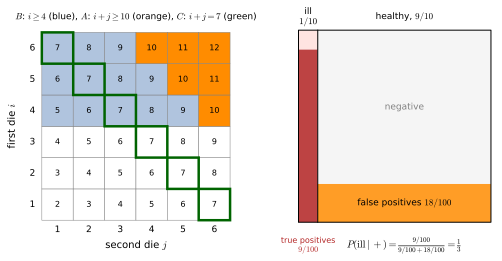
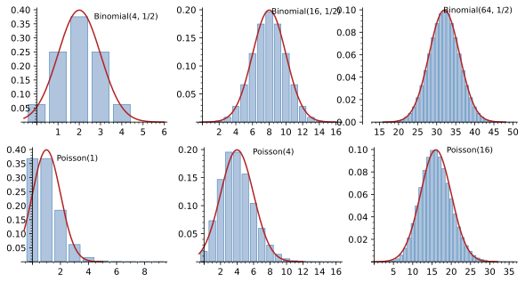
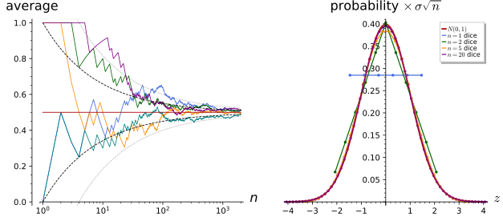
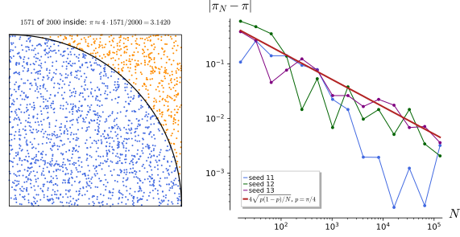

Probability and statistics
Probability theory is the mathematics of uncertainty: it assigns numbers between 0 and 1 to the possible outcomes of an experiment, and it tells how those numbers combine when experiments are repeated, conditioned on partial information or summed over many independent trials. The subject is indispensable in physics because the world is described statistically at more than one level: statistical mechanics averages over an ensemble of microscopic states and derives temperature and entropy from the averages, quantum mechanics predicts probabilities of measurement outcomes rather than the outcomes themselves, and every experiment reports a mean with an error bar, which is a statement about a distribution. This chapter develops the theory in four sections, each on explicit examples. Probability spaces fixes the vocabulary: sample spaces, events, probability measures, conditional probability, independence and Bayes’ rule. Random variables and distributions introduces random variables, their distributions, expectation, variance and moments, the characteristic function, and the three distributions used everywhere, the binomial, the Poisson and the Gaussian. Limit theorems proves Chebyshev’s inequality and the weak law of large numbers, states the strong law and the central limit theorem with the characteristic-function argument behind the latter, and derives Wick’s theorem for Gaussian moments. Statistics and estimation treats the sample mean and variance as estimators, maximum likelihood, confidence intervals, the chi-squared test and Monte Carlo sampling with its 1/\sqrt N error. Every statement is followed by three examples of increasing complexity and three exercises of increasing difficulty with hidden solutions, and the results of the chapter are exact statements wherever possible: rational probabilities on finite sample spaces, closed-form sums and integrals for moments and characteristic functions, and seeded simulations for the limit theorems. The reader who knows this material can skim the definitions and try the exercises; coin flips, two dice, the diagnostic test of the first figure and the Gaussian e^{-x^2/2\sigma^2} are the running examples.
Probability spaces
A probability space is the arena of the subject: a set of possible outcomes, a collection of events that can be assigned probabilities, and the assignment itself. This section defines the three ingredients, then conditional probability, independence and Bayes’ rule, and checks the rational probabilities of the running examples (two dice and a diagnostic test) exactly in Sage.
For more on this topic, see Baldi (2023, Ch. 1) and Capiński and Zastawniak (2001, Ch. 1-7).
Sample spaces and events
Before any probability can be assigned one must say what the possible outcomes are and which questions about them are admissible. The definition below names the set of outcomes and the family of events, which for a finite experiment is simply every subset and for a continuous one is restricted to the subsets that can be built from intervals by countable operations.
Definition 1 (Sample space) A sample space \Omega is the set (Definition 1 of Sets, relations and topology) of all possible outcomes of an experiment. An event is a subset A \subseteq \Omega, and “the event A occurs” means that the outcome lies in A. The admissible events form a \sigma-algebra \mathcal{F}: a family of subsets containing \Omega and closed under complements and countable unions (hence countable intersections). For a finite or countable \Omega every subset is an event, \mathcal{F} = 2^\Omega; for \Omega = \mathbb{R} or an interval, \mathcal{F} is the family generated by the intervals (the Borel sets), which contains every set met in practice. The complement A^c = \Omega \setminus A is the event “not A”, A \cup B is “A or B”, A \cap B is “A and B”, and disjoint events are mutually exclusive**.
Veriphy. Pending.
Lean. Pending.
Sage. Pending.
The simplest experiment has two outcomes, and the next simplest has six. The first example lists the sample spaces and all events of a coin and of a die, which makes the abstract words concrete and shows how fast the number of events grows.
Example 1 (A coin and a die) A coin has \Omega = \{H, T\} with four events \emptyset, \{H\}, \{T\}, \Omega. A die has \Omega = \{1, 2, \dots, 6\} and 2^6 = 64 events, among them “even” = \{2, 4, 6\}, “at least 5” = \{5, 6\} and their intersection \{6\}. Every subset is an event, and the family of all 2^6 subsets is closed under complement and union as the definition demands.
Repeating an experiment, or running two at once, produces outcomes that are pairs, and the sample space is a Cartesian product (Definition 11 of Sets, relations and topology). The second example is the space of two dice, the running example of the section, where the events of interest are described by the sum.
Example 2 (Two dice) Rolling two dice gives \Omega = \{1, \dots, 6\} \times \{1, \dots, 6\}, the 36 pairs (i, j) of Figure 1. “The sum is 7” is the event C = \{(1, 6), (2, 5), (3, 4), (4, 3), (5, 2), (6, 1)\} with six outcomes; “the sum is at least 10” is A = \{(4, 6), (5, 5), (6, 4), (5, 6), (6, 5), (6, 6)\}; “the first die shows at least 4” is B, the three top rows with 18 outcomes, and A \subset B.
When the outcome is a real number, such as the position of a particle or the lifetime of a nucleus, the sample space is uncountable and single outcomes will turn out to have probability zero. The third example shows why the events must then be restricted to a \sigma-algebra, and why the intervals generate enough of them.
Example 3 (A continuous sample space) A point chosen in \Omega = [0, 1] has events such as [0, \tfrac12], (\tfrac13, \tfrac23) and \{x : x^2 < \tfrac12\}. Countable unions of intervals include every open set, complements give the closed sets, and iterating produces the Borel \sigma-algebra. The restriction matters: one cannot consistently assign a “length” to every subset of [0, 1] while keeping it additive over countable disjoint unions, so the events are the Borel sets and the probability of an event will be its length (Example 6).
Writing out events as sets is the first skill to practise, including the translation of “or”, “and” and “not” into unions, intersections and complements. The first exercise does this for three coin tosses, where the counting is still by hand.
Exercise 1 (Events for three coins) For three coin tosses, \Omega = \{H, T\}^3, write out the events “exactly two heads”, “at least one tail” and “the first and last tosses agree”, count their elements, and express “at least one tail” as the complement of a simpler event.
\Omega has 8 outcomes. “Exactly two heads” = \{HHT, HTH, THH\} (3 outcomes); “at least one tail” is the complement of \{HHH\}, with 7 outcomes; “first and last agree” = \{HHH, HTH, THT, TTT\} (4 outcomes). The complement trick, counting the opposite event, is the standard way to handle “at least one”.
A \sigma-algebra need not contain every subset: it records which questions the experiment can answer. The second exercise builds the smallest one containing a given partition of the sample space, which is the structure behind “coarse-grained” descriptions.
Exercise 2 (The \sigma-algebra of a partition) Let \Omega = \{1, \dots, 6\} and let \mathcal{F} be the smallest \sigma-algebra containing the events “even” and “at most 2”. List its elements and show that it is generated by a partition of \Omega into four blocks.
Intersections and complements of E = \{2, 4, 6\} and L = \{1, 2\} give the blocks E \cap L = \{2\}, E \cap L^c = \{4, 6\}, E^c \cap L = \{1\}, E^c \cap L^c = \{3, 5\}, a partition of \Omega. Every element of \mathcal{F} is a union of blocks (unions of blocks are closed under complement and union), so \mathcal{F} has 2^4 = 16 elements, fewer than the 64 subsets: the \sigma-algebra cannot distinguish 4 from 6.
Closure under countable unions, not merely finite ones, is what makes limits of events admissible. The last exercise shows that a natural event about an infinite sequence of tosses is a countable union of finite-stage events, which a merely finitely-closed family would miss.
Exercise 3 (Eventually heads) For an infinite sequence of coin tosses, \Omega = \{H, T\}^{\mathbb{N}}, let A_n be the event “the n-th toss is heads”. Express “at least one head”, “heads at every toss from some point on” and “infinitely many heads” in terms of the A_n using countable unions and intersections.
“At least one head” = \bigcup_n A_n. “Heads from some point on” = \bigcup_N \bigcap_{n \geq N} A_n (there is an N such that every later toss is heads). “Infinitely many heads” = \bigcap_N \bigcup_{n \geq N} A_n (for every N there is a later head), the complement of “tails from some point on”. Each uses countably many operations, so each is an event in the \sigma-algebra generated by the A_n; the strong law of large numbers (Theorem 4) is a statement about an event of this kind.
Probability measures
With the outcomes and events in place, probability is a function on the events, and three axioms fix its behaviour: it is non-negative, the whole space has probability one, and probabilities of mutually exclusive events add. The definition records the axioms and the consequences used constantly, complements, monotonicity and inclusion-exclusion.
Definition 2 (Probability measure) A probability measure on (\Omega, \mathcal{F}) is a map (Definition 2 of Sets, relations and topology) P : \mathcal{F} \to [0, 1] with P(\Omega) = 1 and countable additivity: P(\bigcup_n A_n) = \sum_n P(A_n) for every sequence of pairwise disjoint events. The triple (\Omega, \mathcal{F}, P) is a probability space. Consequences: P(\emptyset) = 0, P(A^c) = 1 - P(A), A \subseteq B implies P(A) \leq P(B), and inclusion-exclusion P(A \cup B) = P(A) + P(B) - P(A \cap B). On a finite \Omega with N equally likely outcomes (the uniform measure), P(A) = |A|/N, and probability is counting.
Veriphy. Pending.
Lean. Pending.
Sage. Pending.
The uniform measure on a finite set is the oldest model of chance, and it reduces probability to counting outcomes. The first example verifies the axioms for a fair die and computes a few probabilities, one by inclusion-exclusion.
Example 4 (A fair die) P(\{k\}) = \tfrac16 for each face, so P(A) = |A|/6: P(\text{even}) = \tfrac12, P(\text{at least } 5) = \tfrac13, and P(\text{even or at least } 5) = \tfrac12 + \tfrac13 - P(\{6\}) = \tfrac23, which agrees with counting \{2, 4, 5, 6\} directly. Additivity holds because disjoint subsets have disjoint elements, and P(\Omega) = 6/6 = 1.
The 36 outcomes of two dice are equally likely, but the sums are not, and their probabilities are read off the grid of Figure 1 by counting diagonals. The second example tabulates them and recovers the probabilities of the events A, B and C.
Example 5 (Sums of two dice) Counting the diagonals of the grid, P(\text{sum} = s) is \tfrac{1}{36}, \tfrac{2}{36}, \dots, \tfrac{6}{36}, \dots, \tfrac{1}{36} for s = 2, \dots, 7, \dots, 12: the sum 7 is the most likely, with P(C) = \tfrac16. The sums 10, 11, 12 have 3 + 2 + 1 = 6 outcomes, so P(A) = \tfrac16; the top three rows give P(B) = \tfrac12; and P(A \cup B) = P(B) = \tfrac12 since A \subset B, consistent with inclusion-exclusion \tfrac16 + \tfrac12 - \tfrac16 (Proposition 1).
On a continuous sample space the probability of a single point must be zero, and the measure is a length, an area, or an integral of a density (Definition 11 of Real analysis). The third example is the uniform measure on an interval, the continuous analogue of the fair die and the basis of every Monte Carlo simulation (Section 1.4).
Example 6 (The uniform measure on [0, 1\rbrack) P([a, b]) = b - a for 0 \leq a \leq b \leq 1 defines the uniform probability on [0, 1]: P(\Omega) = 1, lengths of disjoint intervals add, and P(\{x\}) = 0 for every point, so events of probability zero can occur. More generally P(A) = \int_A \rho(x)\,dx for a non-negative \rho with \int_0^1 \rho = 1 is a probability measure, the density \rho being the continuous counterpart of the table of Example 5.
“Choosing at random” on an infinite set means choosing a measure, and different natural choices give different answers. The fourth example is Bertrand’s chord problem, the classical instance (Bricmont 2022, sec. 2.2.5).
Example 7 (Bertrand’s chords) What is the probability that a random chord of the unit circle is longer than \sqrt3, the side of the inscribed equilateral triangle? A chord is fixed by the distance d of its midpoint from the centre and is longer than \sqrt3 exactly when d < \tfrac12. Uniform d \in [0, 1] gives \tfrac12; a uniform angle \theta \in [0, \pi] between the chord and the tangent at one end, with d = |\cos\theta|, gives P(\tfrac\pi3 < \theta < \tfrac{2\pi}3) = \tfrac13; and a midpoint uniform in the disc gives the area ratio \tfrac14. Each is a probability measure in the sense of the definition, and the question does not say which one describes the throw. Requiring the answer to be unchanged under rotations, rescalings and small translations of the circle singles out the first, \tfrac12, which straws thrown on a circle indeed reproduce.
Veriphy. Pending.
Lean. Pending.
Sage. Pending.
Inclusion-exclusion is the tool for “at least one” questions when the events overlap, and its complement form is often shorter. The first exercise applies it to the birthday problem, where the probability of a coincidence is surprisingly large, and asks Sage for the exact rational value.
Exercise 4 (The birthday problem) Among n people with birthdays uniform over 365 days, show that the probability that two share a birthday is 1 - \prod_{k=0}^{n-1}(1 - k/365), and find with Sage the smallest n for which it exceeds \tfrac12.
The complement “all different” has 365 \cdot 364 \cdots (365 - n + 1) of the 365^n equally likely outcomes, which is the product; the probability of a coincidence crosses \tfrac12 at n = 23:
def coincidence(n):
return 1 - prod(1 - QQ(k) / 365 for k in range(n))
for n in [5, 10, 20, 22, 23, 30, 50]:
print("n =", n, ": P(shared birthday) =", numerical_approx(coincidence(n), digits=4))
first = next(n for n in range(1, 100) if coincidence(n) > QQ(1) / 2)
print("smallest n with probability above 1/2:", first, "; its value", numerical_approx(coincidence(first), digits=6), "(an exact rational with 53-digit numerator and denominator)")Output:
n = 5 : P(shared birthday) = 0.02714
n = 10 : P(shared birthday) = 0.1169
n = 20 : P(shared birthday) = 0.4114
n = 22 : P(shared birthday) = 0.4757
n = 23 : P(shared birthday) = 0.5073
n = 30 : P(shared birthday) = 0.7063
n = 50 : P(shared birthday) = 0.9704
smallest n with probability above 1/2: 23 ; its value 0.507297 (an exact rational with 53-digit numerator and denominator)The consequences listed in the definition are not extra axioms, and deriving them from additivity is a short but instructive exercise in using disjoint decompositions. The second exercise asks for the four derivations.
Exercise 5 (Consequences of the axioms) From the axioms derive P(\emptyset) = 0, P(A^c) = 1 - P(A), monotonicity, and inclusion-exclusion for two events.
\Omega = \Omega \cup \emptyset disjointly, so 1 = 1 + P(\emptyset). \Omega = A \cup A^c disjointly gives 1 = P(A) + P(A^c). If A \subseteq B, B = A \cup (B \setminus A) disjointly, so P(B) = P(A) + P(B \setminus A) \geq P(A). Finally A \cup B = A \cup (B \setminus A) and B = (A \cap B) \cup (B \setminus A), both disjoint, so P(A \cup B) = P(A) + P(B \setminus A) = P(A) + P(B) - P(A \cap B).
Countable additivity, as opposed to finite additivity, is needed as soon as an experiment can take arbitrarily long. The last exercise applies it to the waiting time for the first head and shows that the probabilities of the infinitely many possible waiting times sum to one, so the wait is finite with probability one.
Exercise 6 (Waiting for the first head) A fair coin is tossed until the first head appears. Show that P(\text{first head at toss } k) = 2^{-k}, that these probabilities sum to 1, and deduce that the probability of never seeing a head is 0; check the sum with Sage.
The event “first head at toss k” is T^{k-1}H, one of the 2^k equally likely strings of length k, so its probability is 2^{-k}. The events are disjoint and \sum_{k \geq 1} 2^{-k} = 1 (geometric series, Series), so by countable additivity the union “a head eventually appears” has probability 1 and its complement 0:
k = var("k")
print("sum_{k>=1} 2^-k =", sum(2 ** (-k), k, 1, oo))
partial = [sum(QQ(2) ** (-j) for j in range(1, m + 1)) for m in [1, 2, 5, 10, 20]]
print("partial sums for m = 1, 2, 5, 10, 20:", partial)
print("P(no head in the first 20 tosses) = 1 - partial sum =", 1 - partial[-1], "= 2^-20:", 1 - partial[-1] == QQ(2) ** (-20))
print("expected waiting time sum k 2^-k =", sum(k * 2 ** (-k), k, 1, oo))Output:
sum_{k>=1} 2^-k = 1
partial sums for m = 1, 2, 5, 10, 20: [1/2, 3/4, 31/32, 1023/1024, 1048575/1048576]
P(no head in the first 20 tosses) = 1 - partial sum = 1/1048576 = 2^-20: True
expected waiting time sum k 2^-k = 2Conditional probability
Learning that an event B has occurred shrinks the sample space to B, and probabilities must be renormalised inside it; the figure shows this for two dice, where knowing that the first die is at least 4 doubles the probability of a sum of ten or more but leaves the probability of a sum of seven unchanged. The definition below makes the renormalisation precise and records the two identities, the chain rule and the law of total probability, that follow from it.

figures/conditional_probability.sage.
Definition 3 (Conditional probability) For events A, B with P(B) > 0, the conditional probability of A given B is P(A \mid B) = \frac{P(A \cap B)}{P(B)}. For fixed B the map A \mapsto P(A \mid B) is again a probability measure, concentrated on B. Rewriting the definition gives the chain rule P(A \cap B) = P(A \mid B)\,P(B), and if B_1, \dots, B_n partition \Omega (disjoint, with union \Omega, each of positive probability) the law of total probability reads P(A) = \sum_{i=1}^n P(A \mid B_i)\,P(B_i).
Veriphy. Pending.
Lean. Pending.
Sage. Pending.
The two-dice grid is the first place to see the definition at work, since conditioning on a row or on a block of rows is literally restricting the picture. The first example reads off the probabilities of the figure and finds one event whose probability changes and one whose probability does not.
Example 8 (Conditioning on the first die) In Figure 1, P(A \mid B) = P(A \cap B)/P(B) = \tfrac{6/36}{18/36} = \tfrac13, twice the unconditional P(A) = \tfrac16: a high first die makes a high sum likelier. For the sum 7, P(C \mid B) = \tfrac{3/36}{18/36} = \tfrac16 = P(C), and in fact P(C \mid \text{first die} = i) = \tfrac16 for every i, since each row contains exactly one outcome with sum 7. The next subsection names this situation independence.
Drawing without replacement is the standard case where the chain rule does the work, since the second draw is naturally described conditionally on the first. The second example computes the probability of two aces and the unconditional probability of an ace on the second draw, which is the law of total probability in action.
Example 9 (Two cards without replacement) From a deck of 52 cards with 4 aces, P(\text{ace first}) = \tfrac4{52} and P(\text{ace second} \mid \text{ace first}) = \tfrac3{51}, so the chain rule gives P(\text{two aces}) = \tfrac4{52}\cdot\tfrac3{51} = \tfrac1{221}. By total probability over the first card, P(\text{ace second}) = \tfrac3{51}\cdot\tfrac4{52} + \tfrac4{51}\cdot\tfrac{48}{52} = \tfrac4{52}: the second card is an ace with the same probability as the first, although the two events are not independent.
The law of total probability is the way to compute an unconditional probability from a case analysis, and the diagnostic test of the figure is its standard illustration. The third example computes the probability of a positive result, the denominator that Bayes’ rule will need.
Example 10 (The probability of a positive test) With prevalence P(\text{ill}) = \tfrac1{10}, sensitivity P(+ \mid \text{ill}) = \tfrac9{10} and false-positive rate P(+ \mid \text{healthy}) = \tfrac15, total probability over the partition \{\text{ill}, \text{healthy}\} gives P(+) = \tfrac9{10}\cdot\tfrac1{10} + \tfrac15\cdot\tfrac9{10} = \tfrac{9}{100} + \tfrac{18}{100} = \tfrac{27}{100}. Two thirds of the positive results come from healthy people, the lower orange band of the mosaic in Figure 1; this is the arithmetic behind Example 14.
Conditional probabilities on a finite space are ratios of counts, and Sage computes them exactly as rationals. The first exercise tabulates, for each value of the first die, the conditional probability of the two events of the figure, which exhibits the dependence of one and the independence of the other row by row.
Exercise 7 (Conditional probabilities row by row) With Sage, compute P(\text{sum} \geq 10 \mid \text{first die} = i) and P(\text{sum} = 7 \mid \text{first die} = i) for i = 1, \dots, 6 as exact rationals, and verify the law of total probability for both events.
The sum 7 has conditional probability \tfrac16 in every row, while a sum of at least 10 has 0, 0, 0, \tfrac16, \tfrac13, \tfrac12; weighting each by P(\text{first die} = i) = \tfrac16 reproduces \tfrac16 in both cases:
Omega = [(i, j) for i in range(1, 7) for j in range(1, 7)]
P = lambda E: QQ(len(E)) / len(Omega)
A = [w for w in Omega if w[0] + w[1] >= 10]
C = [w for w in Omega if w[0] + w[1] == 7]
rows = {i: [w for w in Omega if w[0] == i] for i in range(1, 7)}
cond = lambda E, F: P([w for w in E if w in F]) / P(F)
for i in range(1, 7):
print("first die =", i, ": P(sum >= 10 | i) =", cond(A, rows[i]), " P(sum = 7 | i) =", cond(C, rows[i]))
totA = sum(cond(A, rows[i]) * P(rows[i]) for i in range(1, 7))
totC = sum(cond(C, rows[i]) * P(rows[i]) for i in range(1, 7))
print("total probability: sum_i P(A | i) P(i) =", totA, "= P(A) =", P(A), ":", totA == P(A))
print("total probability: sum_i P(C | i) P(i) =", totC, "= P(C) =", P(C), ":", totC == P(C))Output:
first die = 1 : P(sum >= 10 | i) = 0 P(sum = 7 | i) = 1/6
first die = 2 : P(sum >= 10 | i) = 0 P(sum = 7 | i) = 1/6
first die = 3 : P(sum >= 10 | i) = 0 P(sum = 7 | i) = 1/6
first die = 4 : P(sum >= 10 | i) = 1/6 P(sum = 7 | i) = 1/6
first die = 5 : P(sum >= 10 | i) = 1/3 P(sum = 7 | i) = 1/6
first die = 6 : P(sum >= 10 | i) = 1/2 P(sum = 7 | i) = 1/6
total probability: sum_i P(A | i) P(i) = 1/6 = P(A) = 1/6 : True
total probability: sum_i P(C | i) P(i) = 1/6 = P(C) = 1/6 : TrueThe claim that A \mapsto P(A \mid B) is a probability measure is what allows every rule of the subject to be applied “given B”. The second exercise asks for the verification of the axioms and for the chain rule with three events, which is the form used for sequences of draws.
Exercise 8 (Conditioning gives a probability measure) Show that P(\cdot \mid B) satisfies the axioms of Definition 2, and prove the three-event chain rule P(A \cap B \cap C) = P(A \mid B \cap C)\,P(B \mid C)\,P(C) when P(B \cap C) > 0.
P(A \mid B) \geq 0 since both P(A \cap B) and P(B) are; P(\Omega \mid B) = P(B)/P(B) = 1; and for disjoint A_n the sets A_n \cap B are disjoint, so P(\bigcup A_n \mid B) = \sum P(A_n \cap B)/P(B) = \sum P(A_n \mid B). For the chain rule, apply the two-event rule twice: P(A \cap (B \cap C)) = P(A \mid B \cap C)\,P(B \cap C) and P(B \cap C) = P(B \mid C)\,P(C).
Conditional probability is where intuition fails most often, and the Monty Hall problem is the classic trap: a contestant chooses one of three doors, the host, who knows where the prize is, opens another door showing no prize, and the contestant may switch. The last exercise settles it by exact enumeration of the sample space in Sage.
Exercise 9 (The Monty Hall problem) Model the game by the pair (prize door, chosen door), uniform over 9 outcomes, with the host opening a prize-free unchosen door (chosen uniformly if there are two). Show that switching wins with probability \tfrac23, by hand and by enumerating the outcomes in Sage.
Switching wins exactly when the first choice was wrong, which has probability \tfrac23 regardless of what the host does; staying wins with probability \tfrac13. Conditioning on the door the host opens does not change this, because the host’s choice is uninformative about the chosen door. Enumerating the 9 equally likely (prize, choice) pairs, with the host’s random choice when both other doors are empty, gives the exact rationals:
outcomes = [] # (prize, choice, opened, probability)
for prize in [1, 2, 3]:
for choice in [1, 2, 3]:
options = [d for d in [1, 2, 3] if d != prize and d != choice]
for opened in options:
outcomes.append((prize, choice, opened, QQ(1) / 9 / len(options)))
print("number of weighted outcomes:", len(outcomes), "; total probability:", sum(o[3] for o in outcomes))
stay = sum(o[3] for o in outcomes if o[1] == o[0])
switch = sum(o[3] for o in outcomes if o[1] != o[0])
print("P(stay wins) =", stay, "; P(switch wins) =", switch)
# conditional on choice 1 and host opening door 3
given = [o for o in outcomes if o[1] == 1 and o[2] == 3]
pg = sum(o[3] for o in given)
print("given choice 1 and door 3 opened: P(prize behind 2) =", sum(o[3] for o in given if o[0] == 2) / pg, ", P(prize behind 1) =", sum(o[3] for o in given if o[0] == 1) / pg)Output:
number of weighted outcomes: 12 ; total probability: 1
P(stay wins) = 1/3 ; P(switch wins) = 2/3
given choice 1 and door 3 opened: P(prize behind 2) = 2/3 , P(prize behind 1) = 1/3Independence
Two events are independent when learning one tells nothing about the other, which in terms of conditional probability means P(A \mid B) = P(A) and, symmetrically, means that the probability of both is the product of the probabilities. The definition uses the product form, which also makes sense when P(B) = 0, and extends it to families of events.
Definition 4 (Independence) Events A and B are independent if P(A \cap B) = P(A)\,P(B); when P(B) > 0 this is equivalent to P(A \mid B) = P(A). Events A_1, \dots, A_n are (mutually) independent if P(A_{i_1} \cap \dots \cap A_{i_k}) = P(A_{i_1}) \cdots P(A_{i_k}) for every sub-collection, which is stronger than pairwise independence of each two. Independent repetitions of an experiment are modelled on the product space \Omega^n with the product measure P(A_1 \times \dots \times A_n) = \prod P(A_i), under which events depending on different trials are independent.
Veriphy. Pending.
Lean. Pending.
Sage. Pending.
The running example already contains an independent pair: the sum 7 and the first die. The first example checks the product formula and explains structurally why it holds, each row of the grid meeting the diagonal exactly once.
Example 11 (Sum 7 and the first die) In Figure 1, P(C \cap B) = \tfrac{3}{36} = \tfrac16\cdot\tfrac12 = P(C)\,P(B), so “sum 7” and “first die at least 4” are independent; likewise P(C \cap \{\text{first} = i\}) = \tfrac1{36} = \tfrac16\cdot\tfrac16 for every i. The reason is that for every value of the first die exactly one value of the second gives sum 7. No other sum has this property: A and B are dependent, since P(A \cap B) = \tfrac16 \neq \tfrac16\cdot\tfrac12.
Pairwise independence does not imply mutual independence, and the standard counterexample needs only two coins. The second example gives it, which is why the definition insists on all sub-collections.
Example 12 (Pairwise but not mutually independent) Toss two fair coins and let A = “first is heads”, B = “second is heads”, C = “the two agree”. Each has probability \tfrac12, each pair has intersection of probability \tfrac14 = \tfrac12\cdot\tfrac12 (for instance A \cap C = “both heads”), so the three are pairwise independent. But A \cap B \cap C = \{HH\} has probability \tfrac14 \neq \tfrac18: any two of the events determine the third (Exercise 11).
Independent repetitions are the model behind every “repeat the measurement n times” argument, and the product measure makes the count of successes computable. The third example derives the binomial probabilities, which the next section will study as a distribution.
Example 13 (Independent trials and binomial counts) Repeating an experiment with success probability p independently n times, a particular string with k successes has probability p^k(1 - p)^{n-k} by the product rule, and there are \binom{n}{k} such strings, so P(k \text{ successes}) = \binom{n}{k}p^k(1 - p)^{n-k}. For n = 2 coin flips this is \tfrac14, \tfrac12, \tfrac14 for k = 0, 1, 2, and for n = 4 it is \tfrac1{16}, \tfrac4{16}, \tfrac6{16}, \tfrac4{16}, \tfrac1{16}, the first panel of Figure 2.
Independence is preserved under complements, a fact used silently whenever one says “and the other does not happen”. The first exercise asks for the proof, which is a one-line application of additivity.
Exercise 10 (Independence and complements) Show that if A and B are independent then so are A and B^c, and A^c and B^c. Deduce that if A_1, \dots, A_n are mutually independent with P(A_i) = p_i, then P(\text{none occurs}) = \prod(1 - p_i).
P(A \cap B^c) = P(A) - P(A \cap B) = P(A) - P(A)P(B) = P(A)(1 - P(B)) = P(A)P(B^c); applying this twice gives the complements of both. For n events the same argument shows that the complements are mutually independent, so P(A_1^c \cap \dots \cap A_n^c) = \prod P(A_i^c) = \prod (1 - p_i), and “at least one occurs” has probability 1 - \prod(1 - p_i).
The two-coin counterexample is small enough for Sage to check every sub-collection, which is a good way to internalise what mutual independence demands. The second exercise does this and extends the construction to three coins.
Exercise 11 (Checking independence in Sage) Enumerate the four outcomes of two coins in Sage, verify that the events A, B, C of Example 12 are pairwise independent but not mutually independent, and find an analogous triple for three coins using the parity of the number of heads.
For three coins take A_i = “toss i is heads” and D = “the number of heads is even”: every pair and every triple from \{A_1, A_2, A_3, D\} is independent, but the four together are not, since A_1 \cap A_2 \cap A_3 determines D:
import itertools
def check(Omega, events, names):
P = lambda E: QQ(len(E)) / len(Omega)
for r in range(2, len(events) + 1):
for idx in itertools.combinations(range(len(events)), r):
inter = [w for w in Omega if all(w in events[i] for i in idx)]
ok = P(inter) == prod(P(events[i]) for i in idx)
print(" ", " & ".join(names[i] for i in idx), ": P(intersection) =", P(inter), ", product =", prod(P(events[i]) for i in idx), ", independent:", ok)
two = list(itertools.product("HT", repeat=2))
A = [w for w in two if w[0] == "H"]; B = [w for w in two if w[1] == "H"]; C = [w for w in two if w[0] == w[1]]
print("two coins:")
check(two, [A, B, C], ["A", "B", "C"])
three = list(itertools.product("HT", repeat=3))
A1 = [w for w in three if w[0] == "H"]; A2 = [w for w in three if w[1] == "H"]; A3 = [w for w in three if w[2] == "H"]
D = [w for w in three if w.count("H") % 2 == 0]
print("three coins:")
check(three, [A1, A2, A3, D], ["A1", "A2", "A3", "D"])Output:
two coins:
A & B : P(intersection) = 1/4 , product = 1/4 , independent: True
A & C : P(intersection) = 1/4 , product = 1/4 , independent: True
B & C : P(intersection) = 1/4 , product = 1/4 , independent: True
A & B & C : P(intersection) = 1/4 , product = 1/8 , independent: False
three coins:
A1 & A2 : P(intersection) = 1/4 , product = 1/4 , independent: True
A1 & A3 : P(intersection) = 1/4 , product = 1/4 , independent: True
A1 & D : P(intersection) = 1/4 , product = 1/4 , independent: True
A2 & A3 : P(intersection) = 1/4 , product = 1/4 , independent: True
A2 & D : P(intersection) = 1/4 , product = 1/4 , independent: True
A3 & D : P(intersection) = 1/4 , product = 1/4 , independent: True
A1 & A2 & A3 : P(intersection) = 1/8 , product = 1/8 , independent: True
A1 & A2 & D : P(intersection) = 1/8 , product = 1/8 , independent: True
A1 & A3 & D : P(intersection) = 1/8 , product = 1/8 , independent: True
A2 & A3 & D : P(intersection) = 1/8 , product = 1/8 , independent: True
A1 & A2 & A3 & D : P(intersection) = 0 , product = 1/16 , independent: FalseA rare event repeated many times becomes likely, and the probability that it occurs at least once has a universal limit when the expected number of occurrences is held fixed. The last exercise derives the limit 1 - e^{-1}, which is the first appearance of the Poisson distribution.
Exercise 12 (At least one success among many rare trials) An event of probability 1/n is tried independently n times. Show that the probability that it never occurs tends to e^{-1} as n \to \infty, and that with m tries of an event of probability \lambda/m the probability of exactly k occurrences tends to e^{-\lambda}\lambda^k/k!.
By Exercise 10 the probability of no occurrence is (1 - 1/n)^n \to e^{-1} (Series, the limit defining e). For exactly k occurrences, Example 13 gives \binom{m}{k}(\lambda/m)^k(1 - \lambda/m)^{m-k}; as m \to \infty, \binom{m}{k}m^{-k} \to 1/k! and (1 - \lambda/m)^{m-k} \to e^{-\lambda}, which is the Poisson probability e^{-\lambda}\lambda^k/k! of Definition 10.
Bayes’ rule
Conditional probabilities are usually known in one direction, from cause to effect, such as the probability of a positive test given illness, while the question of interest runs the other way. The theorem below inverts the conditioning; its proof is two applications of the chain rule, and its content is the correction by the prior probabilities that intuition tends to omit.
Theorem 1 (Bayes’ rule) For events A, B with P(A), P(B) > 0, P(A \mid B) = \frac{P(B \mid A)\,P(A)}{P(B)}, and if A_1, \dots, A_n partition \Omega the denominator is P(B) = \sum_i P(B \mid A_i)P(A_i), so that P(A_i \mid B) = \frac{P(B \mid A_i)\,P(A_i)}{\sum_j P(B \mid A_j)\,P(A_j)}. P(A_i) is the prior probability of A_i and P(A_i \mid B) its posterior after observing B. Proof. By the chain rule P(A \cap B) = P(A \mid B)P(B) = P(B \mid A)P(A); divide by P(B). The second form substitutes the law of total probability for P(B).
Veriphy. Pending.
Lean. Pending.
Sage. Checked on the running examples in Sage (figures/conditional_probability.sage).
The diagnostic test is the canonical application, and the mosaic of the figure makes the answer visible before any formula: the true positives are a thin column, the false positives a wide band. The first example computes the posterior probability of illness given a positive result.
Example 14 (A positive test) With the numbers of Example 10, P(\text{ill} \mid +) = \frac{P(+ \mid \text{ill})P(\text{ill})}{P(+)} = \frac{9/100}{27/100} = \tfrac13: a positive result from a test that is right 90\% of the time on the ill leaves a two-thirds chance of being healthy, because the healthy are nine times as numerous. This value and the one of the next example are collected in Proposition 1.
For a rare condition the effect is far stronger, and the second example uses realistic numbers: a prevalence of one in a hundred and a test with 99\% sensitivity and a 5\% false-positive rate. The posterior is only one in six, a number worth remembering.
Example 15 (A rare condition) With P(\text{ill}) = \tfrac1{100}, P(+ \mid \text{ill}) = \tfrac{99}{100} and P(+ \mid \text{healthy}) = \tfrac1{20}, P(+) = \tfrac{99}{10000} + \tfrac{99}{100}\cdot\tfrac1{20} = \tfrac{99}{10000} + \tfrac{495}{10000} = \tfrac{594}{10000} and P(\text{ill} \mid +) = \tfrac{99}{594} = \tfrac16. Five of six positives are false; a second independent positive test would raise the posterior to \tfrac{99}{99 + 25} \approx 0. 80 (Exercise 13).
Bayes’ rule also updates a belief about an unknown object as evidence accumulates, which is how parameters are estimated in the Bayesian approach to statistics. The third example tracks the posterior probability that a coin is two-headed as it keeps landing heads.
Example 16 (Is the coin fair?) A bag holds one two-headed coin and 999 fair ones; a coin is drawn and lands heads k times in a row. With prior P(\text{two-headed}) = 10^{-3} and likelihoods P(k \text{ heads} \mid \text{two-headed}) = 1, P(k \text{ heads} \mid \text{fair}) = 2^{-k}, the posterior is \frac{10^{-3}}{10^{-3} + 0.999 \cdot 2^{-k}}: about 0.002 after one head, 0.5 after ten, 0.999 after twenty. The evidence overturns a prior of one in a thousand after about \log_2 1000 \approx 10 heads.
The posterior after one observation becomes the prior for the next, and repeated updating multiplies the likelihood ratios. The first exercise formalises this with the odds form of Bayes’ rule and applies it to two tests, checking the numbers of Example 15 in Sage.
Exercise 13 (Two tests in a row) Show that Bayes’ rule can be written in odds form, \frac{P(A \mid B)}{P(A^c \mid B)} = \frac{P(B \mid A)}{P(B \mid A^c)}\cdot\frac{P(A)}{P(A^c)}, and use it in Sage to find the posterior after two conditionally independent positive tests with the numbers of Example 15.
Dividing Bayes’ rule for A by the same for A^c cancels P(B) and leaves the prior odds times the likelihood ratio. Two conditionally independent tests multiply the likelihood ratio twice: prior odds \tfrac1{99}, likelihood ratio \tfrac{99/100}{1/20} = \tfrac{99}{5}, posterior odds \tfrac{99}{5} after one test, \tfrac{99^2}{25 \cdot 99} = \tfrac{99}{25} after two, that is, P = \tfrac{99}{124} \approx 0.798:
prev, sens, fpr = QQ(1) / 100, QQ(99) / 100, QQ(1) / 20
prior_odds = prev / (1 - prev)
LR = sens / fpr
print("prior odds =", prior_odds, "; likelihood ratio of a positive test =", LR)
for tests in [1, 2, 3]:
odds = prior_odds * LR ** tests
post = odds / (1 + odds)
print("after", tests, "positive test(s): posterior odds =", odds, ", posterior probability =", post, "=", numerical_approx(post, digits=4))
direct = prev * sens / (prev * sens + (1 - prev) * fpr)
print("direct Bayes after one test:", direct, "; agrees with the odds form:", direct == prior_odds * LR / (1 + prior_odds * LR))Output:
prior odds = 1/99 ; likelihood ratio of a positive test = 99/5
after 1 positive test(s): posterior odds = 1/5 , posterior probability = 1/6 = 0.1667
after 2 positive test(s): posterior odds = 99/25 , posterior probability = 99/124 = 0.7984
after 3 positive test(s): posterior odds = 9801/125 , posterior probability = 9801/9926 = 0.9874
direct Bayes after one test: 1/6 ; agrees with the odds form: TrueBayes’ rule is also how a signal is assigned to its most likely source when several sources with known output distributions are mixed. The second exercise is the three-urn version, done by hand with the partition form of the theorem.
Exercise 14 (Three urns) Urn 1 has 2 red and 1 blue ball, urn 2 has 1 red and 2 blue, urn 3 has 3 blue. An urn is chosen uniformly and a ball drawn. Find P(\text{urn } i \mid \text{red}) for i = 1, 2, 3 and P(\text{urn } 3 \mid \text{blue}).
P(\text{red}) = \tfrac13(\tfrac23 + \tfrac13 + 0) = \tfrac13, so P(\text{urn } 1 \mid \text{red}) = \frac{(2/3)(1/3)}{1/3} = \tfrac23, P(\text{urn } 2 \mid \text{red}) = \tfrac13 and P(\text{urn } 3 \mid \text{red}) = 0: a red ball excludes urn 3 and favours urn 1 two to one. For blue, P(\text{blue}) = \tfrac13(\tfrac13 + \tfrac23 + 1) = \tfrac23 and P(\text{urn } 3 \mid \text{blue}) = \frac{1 \cdot (1/3)}{2/3} = \tfrac12; the three posteriors given blue are \tfrac16, \tfrac13, \tfrac12, proportional to the numbers of blue balls 1, 2, 3 because the prior is uniform and every urn has three balls.
The coin example of Example 16 is a sequential update whose posterior can be tabulated, and plotting it against k shows the characteristic sigmoid shape of a belief overturned by evidence. The last exercise computes the table in Sage and finds the number of heads needed for a posterior above 0.99.
Exercise 15 (The two-headed coin in Sage) Compute in Sage the posterior probability of Example 16 for k = 0, 1, \dots, 20 as exact rationals, find the smallest k with posterior above 0.99, and explain why the answer is close to \log_2(999 \cdot 99).
The posterior exceeds 0.99 when the posterior odds 2^k/999 exceed 99, that is, 2^k > 98901, so k = 17; \log_2 98901 \approx 16.6:
prior = QQ(1) / 1000
post = lambda k: prior / (prior + (1 - prior) * QQ(2) ** (-k))
for k in [0, 1, 5, 8, 10, 12, 15, 17, 20]:
print("k =", k, ": posterior =", post(k), "=", numerical_approx(post(k), digits=4))
first = next(k for k in range(0, 40) if post(k) > QQ(99) / 100)
print("smallest k with posterior above 0.99:", first, "; log_2(999 * 99) =", numerical_approx(log(999 * 99, 2), digits=4))
print("posterior odds at k = 17: 2^17/999 =", QQ(2) ** 17 / 999, "> 99:", QQ(2) ** 17 / 999 > 99)Output:
k = 0 : posterior = 1/1000 = 0.001000
k = 1 : posterior = 2/1001 = 0.001998
k = 5 : posterior = 32/1031 = 0.03104
k = 8 : posterior = 256/1255 = 0.2040
k = 10 : posterior = 1024/2023 = 0.5062
k = 12 : posterior = 4096/5095 = 0.8039
k = 15 : posterior = 32768/33767 = 0.9704
k = 17 : posterior = 131072/132071 = 0.9924
k = 20 : posterior = 1048576/1049575 = 0.9990
smallest k with posterior above 0.99: 17 ; log_2(999 * 99) = 16.59
posterior odds at k = 17: 2^17/999 = 131072/999 > 99: TrueA gold coin is more likely to come from a box with two gold coins, and Bayes’ rule makes “more likely” precise. The fourth exercise is Bertrand’s box paradox, a relative of the Monty Hall problem of Exercise 9.
Exercise 16 (Bertrand’s boxes) Three boxes contain two gold coins, two silver coins, and one of each. A box is chosen at random and a coin drawn from it at random is gold. What is the probability that the other coin in the box is gold too?
Let GG, SS, GS be the boxes and G the event of drawing gold: P(G \mid GG) = 1, P(G \mid SS) = 0, P(G \mid GS) = \tfrac12, each box with prior \tfrac13. Bayes’ rule gives P(GG \mid G) = \frac{1\cdot\frac13}{1\cdot\frac13 + 0 + \frac12\cdot\frac13} = \frac23, and the other coin is gold exactly when the box is GG. The tempting answer \tfrac12 treats the two remaining boxes as equally likely, forgetting that the GG box offers two gold coins to draw.
Veriphy. Pending.
Lean. Pending.
Sage. Pending.
Updating among several hypotheses works the same way, with the evidence weighted by each prior. The last exercise does this for a drawer of coins with three different biases (Bricmont 2022, Exercise 2.15).
Exercise 17 (Which coin was tossed?) A drawer holds two fair coins (type A), two coins with P(\text{heads}) = 0.6 (type B) and one with 0.9 (type C). A coin drawn at random is tossed once and shows heads. Find the posterior probabilities of the three types, and then the probability that a second toss of the same coin shows heads.
The priors are \frac25, \frac25, \frac15 and P(H) = \frac25\cdot0.5 + \frac25\cdot0.6 + \frac15\cdot0.9 = 0.62 by total probability. Bayes’ rule gives P(A \mid H) = 0.2/0.62 = 0.323, P(B \mid H) = 0.24/0.62 = 0.387 and P(C \mid H) = 0.18/0.62 = 0.290: the single head shifts weight towards the biased coins, C gaining most relative to its prior. The second toss gives heads with probability \sum_XP(X \mid H)p_X = (0.2\cdot0.5 + 0.24\cdot0.6 + 0.18\cdot0.9)/0.62 = 0.406/0.62 = 0.655, more than the 0.62 of the first toss: the tosses of an unknown coin are not independent.
Veriphy. Pending.
Lean. Pending.
Sage. Pending.
Worked computations
The rational probabilities of this section, the conditional probabilities on the two-dice grid, the two Bayes computations and the closure properties of a finite \sigma-algebra, are collected in one proposition. All of them are exact rational numbers, obtained by counting outcomes, so no rounding enters.
Proposition 1 (Probabilities of the running examples) On two fair dice, P(\text{sum} \geq 10) = \tfrac16, P(\text{first} \geq 4) = \tfrac12, P(\text{sum} \geq 10 \mid \text{first} \geq 4) = \tfrac13, and the sum 7 is independent of the first die; the law of total probability and inclusion-exclusion hold on these events. Bayes’ rule gives posteriors \tfrac13 (prevalence \tfrac1{10}, sensitivity \tfrac9{10}, false-positive rate \tfrac15) and \tfrac16 (prevalence \tfrac1{100}, sensitivity \tfrac{99}{100}, false-positive rate \tfrac1{20}). The 2^3 subsets of a three-element set are closed under complement and union.
Veriphy. Pending; candidate recipes decide and norm_num (finite probabilities).
Lean. Pending.
Sage. Exact computation (figures/conditional_probability.sage): rational arithmetic on enumerated sample spaces.
Sage represents a finite sample space as a list of tuples and an event as a sub-list, and probabilities as QQ(len(A))/len(Omega). The first example shows this encoding, which is the one every Sage exercise of the section uses.
Example 17 (Events as lists) Omega = [(i, j) for i in range(1, 7) for j in range(1, 7)] and A = [w for w in Omega if w[0] + w[1] >= 10] encode the sample space and the event; QQ(len(A))/len(Omega) is exactly 1/6, and the conditional probability is the ratio of two such numbers. Because the arithmetic is rational, the test == 1/3 is exact rather than approximate.
Closure of a power set can be tested with Sage’s Subsets, which enumerates the power set, by brute force. The second example describes the computation and notes how the count grows, which is why the brute-force test is only sensible for tiny sets.
Example 18 (Closure of the power set) Subsets([1, 2, 3]) lists the 8 subsets, and the complement of each and the union of each pair is again in the list. For a set with n elements the power set has 2^n members and 4^n pairs to test, so n = 3 or 4 is the practical range (Exercise 18); the result is of course true for every n, and the computation is a test of the encoding.
The two Bayes values are computed from the same three rationals in the same formula, and exact fractions carry them without rounding. The third example records the arithmetic of the second one, where the simplification to \tfrac16 is the point.
Example 19 (Exact posteriors) In QQ, (1/100 * 99/100) / (1/100 * 99/100 + 99/100 * 1/20) simplifies to 1/6 because the common factor \tfrac{99}{100} cancels: \frac{1/100}{1/100 + 1/20} = \frac{1}{1 + 5} = \tfrac16. This cancellation is why the posterior depends only on the ratio of prevalence to false-positive rate when the sensitivity is near one.
Extending the closure test to a four-element set is a direct modification of the computation and also tests closure under intersection, which the definition obtains through complements. The first exercise does both.
Exercise 18 (A sixteen-element \sigma-algebra) With Sage, check that the 16 subsets of \{1, 2, 3, 4\} are closed under complement, union and intersection, and check that the four-block partition of Exercise 2 generates exactly 16 events of \{1, \dots, 6\}.
Both families are closed; the second one is built as the set of all unions of blocks and has 2^4 = 16 members, none of which separates 4 from 6:
U = Set([1, 2, 3, 4])
S = Subsets(U)
print("number of subsets:", S.cardinality())
print("closed under complement:", all((U - E) in S for E in S))
print("closed under union:", all((E | F) in S for E in S for F in S))
print("closed under intersection:", all((E & F) in S for E in S for F in S))
blocks = [Set([2]), Set([4, 6]), Set([1]), Set([3, 5])]
from functools import reduce
F = Set([reduce(lambda E, G: E | G, [blocks[i] for i in idx], Set([])) for idx in Subsets(range(4))])
print("events generated by the four blocks:", F.cardinality())
print("no event separates 4 from 6:", all((4 in E) == (6 in E) for E in F))
print("'even' and 'at most 2' are among them:", Set([2, 4, 6]) in F and Set([1, 2]) in F)Output:
number of subsets: 16
closed under complement: True
closed under union: True
closed under intersection: True
events generated by the four blocks: 16
no event separates 4 from 6: True
'even' and 'at most 2' are among them: TrueInclusion-exclusion for three events has an extra term, and the two-dice grid gives a good test case for it. The second exercise asks for the formula and for its exact verification on three overlapping events.
Exercise 19 (Inclusion-exclusion for three events) State and prove inclusion-exclusion for three events, and verify it in Sage on the two-dice events “first die even”, “second die even” and “sum at least 8”.
P(A \cup B \cup C) = P(A) + P(B) + P(C) - P(A \cap B) - P(A \cap C) - P(B \cap C) + P(A \cap B \cap C); apply the two-event formula to A \cup (B \cup C) and expand P(A \cap (B \cup C)) with it again. On the dice events the exact value is \tfrac{5}{6}:
Omega = [(i, j) for i in range(1, 7) for j in range(1, 7)]
P = lambda E: QQ(len(E)) / len(Omega)
A = [w for w in Omega if w[0] % 2 == 0]
B = [w for w in Omega if w[1] % 2 == 0]
C = [w for w in Omega if w[0] + w[1] >= 8]
I = lambda *Es: [w for w in Omega if all(w in E for E in Es)]
union = [w for w in Omega if w in A or w in B or w in C]
rhs = P(A) + P(B) + P(C) - P(I(A, B)) - P(I(A, C)) - P(I(B, C)) + P(I(A, B, C))
print("P(A), P(B), P(C) =", P(A), P(B), P(C))
print("P(AB), P(AC), P(BC), P(ABC) =", P(I(A, B)), P(I(A, C)), P(I(B, C)), P(I(A, B, C)))
print("P(A or B or C) =", P(union), "; inclusion-exclusion gives", rhs, ":", P(union) == rhs)Output:
P(A), P(B), P(C) = 1/2 1/2 5/12
P(AB), P(AC), P(BC), P(ABC) = 1/4 1/4 1/4 1/6
P(A or B or C) = 5/6 ; inclusion-exclusion gives 5/6 : TrueThree dice have 216 outcomes, still small enough to enumerate, and the sums are no longer symmetric in a way one can count by diagonals. The last exercise computes the distribution of the sum of three dice exactly and uses it for a conditional probability, which anticipates the convolutions of Section 1.3.
Exercise 20 (Three dice) Enumerate the 216 outcomes of three dice in Sage, find P(\text{sum} \geq 15) and P(\text{sum} \geq 15 \mid \text{first die} = 6) exactly, and check that the most likely sums are 10 and 11.
P(\text{sum} \geq 15) = \tfrac{20}{216} = \tfrac{5}{54}, and given a first six it rises to \tfrac{10}{36} = \tfrac{5}{18}; the sums 10 and 11 each have 27 outcomes:
import itertools
Omega = list(itertools.product(range(1, 7), repeat=3))
P = lambda E: QQ(len(E)) / len(Omega)
print("outcomes:", len(Omega))
A = [w for w in Omega if sum(w) >= 15]
B = [w for w in Omega if w[0] == 6]
print("P(sum >= 15) =", P(A))
print("P(sum >= 15 | first = 6) =", P([w for w in A if w in B]) / P(B))
counts = {s: len([w for w in Omega if sum(w) == s]) for s in range(3, 19)}
print("counts of each sum:", counts)
print("most likely sums:", [s for s, c in counts.items() if c == max(counts.values())])Output:
outcomes: 216
P(sum >= 15) = 5/54
P(sum >= 15 | first = 6) = 5/18
counts of each sum: {3: 1, 4: 3, 5: 6, 6: 10, 7: 15, 8: 21, 9: 25, 10: 27, 11: 27, 12: 25, 13: 21, 14: 15, 15: 10, 16: 6, 17: 3, 18: 1}
most likely sums: [10, 11]Random variables and distributions
Most questions about an experiment concern a number attached to the outcome, the sum of the dice, the number of decays in a second, the position of a particle, rather than the outcome itself. This section defines random variables and their distributions, the expectation, variance and moments that summarise them, the characteristic function that encodes all moments at once, and the three distributions that recur throughout physics: the binomial with its Poisson limit, and the Gaussian.
For more on this topic, see Baldi (2023, Ch. 2), Capiński and Zastawniak (2001, Ch. 8-12) and Petroni (2020, Ch. 1-4).
Random variables
A random variable is a numerical function on the sample space, and what one usually wants to know about it is not the function but the probabilities of its values, its distribution. The definition below introduces both, and the two ways a distribution is described in practice, a table of probabilities in the discrete case and a density in the continuous one.
Definition 5 (Random variable) A random variable on a probability space (\Omega, \mathcal{F}, P) is a map X : \Omega \to \mathbb{R} such that \{X \leq x\} = \{\omega : X(\omega) \leq x\} is an event for every x. Its distribution is the probability measure P_X(B) = P(X \in B) on \mathbb{R}, determined by the cumulative distribution function F_X(x) = P(X \leq x), non-decreasing from 0 to 1 with P(a < X \leq b) = F_X(b) - F_X(a). X is discrete if it takes countably many values x_k, with probability mass function p_k = P(X = x_k), \sum p_k = 1; it is continuous with density \rho if P(a \leq X \leq b) = \int_a^b \rho(x)\,dx for a non-negative integrable \rho with \int_{-\infty}^\infty \rho = 1 (Definition 13 of Real analysis), in which case F_X' = \rho and P(X = x) = 0 for every x.
Veriphy. Pending.
Lean. Pending.
Sage. Pending.
The face of a die and the indicator of an event are the simplest random variables, and the second is the bridge between events and random variables used in every counting argument. The first example introduces them and their distributions.
Example 20 (A die and an indicator) The face X of a fair die is the identity map on \Omega = \{1, \dots, 6\} with p_k = \tfrac16 for k = 1, \dots, 6; its distribution function jumps by \tfrac16 at each integer. For an event A the indicator \mathbf{1}_A equals 1 on A and 0 off it, a random variable with P(\mathbf{1}_A = 1) = P(A); “the number of heads in n tosses” is the sum of n indicators, which is how counts become sums (Example 24).
The sum of two dice is a random variable on the product space, and its distribution is the table of diagonals already met in Example 5. The second example rephrases that table as a probability mass function and illustrates how the same distribution can arise from different random variables.
Example 21 (The sum of two dice) S(i, j) = i + j on the 36 pairs has p_s = (6 - |s - 7|)/36 for s = 2, \dots, 12, the triangular table \tfrac1{36}, \tfrac2{36}, \dots, \tfrac6{36}, \dots, \tfrac1{36}. The random variable S'(i, j) = i + (7 - j) is a different map on \Omega but has the same distribution, since j \mapsto 7 - j permutes the faces: the distribution forgets which outcomes produced which value and keeps only the probabilities.
Continuous random variables are described by densities, and the two basic ones are the uniform density on an interval and the exponential density of a waiting time. The third example gives both with their distribution functions, which is how the density is actually used to compute probabilities.
Example 22 (Uniform and exponential variables) U uniform on [0, 1] has \rho(u) = 1 there and 0 elsewhere, so F_U(u) = u on [0, 1] and P(\tfrac14 < U \leq \tfrac34) = \tfrac12. T exponential with rate \lambda > 0 has \rho(t) = \lambda e^{-\lambda t} for t \geq 0, F_T(t) = 1 - e^{-\lambda t}, and models the time to the next decay of a nucleus: P(T > t) = e^{-\lambda t}, the survival probability (Exercise 43). Both densities integrate to 1, the second as an improper integral.
The distribution of a function of the outcomes is found by collecting the outcomes with each value, which for a finite space is a tabulation. The first exercise tabulates the maximum of two dice in Sage and compares it with the sum, whose table is known.
Exercise 21 (The maximum of two dice) Find the probability mass function and the distribution function of M = \max(i, j) for two dice, by hand from P(M \leq m) = (m/6)^2 and by enumeration in Sage, and compare P(M = 6) with P(S = 7).
F_M(m) = P(\text{both} \leq m) = m^2/36, so p_m = F_M(m) - F_M(m - 1) = (2m - 1)/36: \tfrac1{36}, \tfrac3{36}, \dots, \tfrac{11}{36}. P(M = 6) = \tfrac{11}{36} exceeds P(S = 7) = \tfrac{6}{36}, the most likely sum:
Omega = [(i, j) for i in range(1, 7) for j in range(1, 7)]
P = lambda E: QQ(len(E)) / len(Omega)
pmf = {m: P([w for w in Omega if max(w) == m]) for m in range(1, 7)}
cdf = {m: P([w for w in Omega if max(w) <= m]) for m in range(1, 7)}
print("pmf of the maximum:", pmf)
print("matches (2m - 1)/36:", all(pmf[m] == QQ(2 * m - 1) / 36 for m in range(1, 7)))
print("distribution function:", cdf)
print("matches m^2/36:", all(cdf[m] == QQ(m * m) / 36 for m in range(1, 7)))
print("P(M = 6) =", pmf[6], "; P(S = 7) =", P([w for w in Omega if sum(w) == 7]))
print("E[M] =", sum(m * p for m, p in pmf.items()))Output:
pmf of the maximum: {1: 1/36, 2: 1/12, 3: 5/36, 4: 7/36, 5: 1/4, 6: 11/36}
matches (2m - 1)/36: True
distribution function: {1: 1/36, 2: 1/9, 3: 1/4, 4: 4/9, 5: 25/36, 6: 1}
matches m^2/36: True
P(M = 6) = 11/36 ; P(S = 7) = 1/6
E[M] = 161/36For a continuous variable the density of a function Y = g(X) follows by differentiating the distribution function of Y, which is the change-of-variables rule in disguise. The second exercise works this out for the square of a uniform variable, where the density becomes unbounded.
Exercise 22 (The density of X^2) Let X be uniform on [-1, 1]. Find the distribution function and density of Y = X^2, check that the density integrates to 1, and explain why it is unbounded near 0 although X has a bounded density.
For 0 \leq y \leq 1, F_Y(y) = P(-\sqrt y \leq X \leq \sqrt y) = \sqrt y, so \rho_Y(y) = \tfrac{1}{2\sqrt y} on (0, 1], an improper but convergent integral: \int_0^1 dy/2\sqrt y = 1 (Definition 13 of Real analysis). The density is \rho_X(\sqrt y)\,|d\sqrt y/dy| \cdot 2 (two preimages), and the factor 1/2\sqrt y is the Jacobian of the map x \mapsto x^2 near x = 0, where the map compresses a whole neighbourhood of 0 into a tiny interval of y.
The distribution of a sum of independent discrete variables is the convolution of their mass functions, the operation that produced the triangular table of the two dice from the flat table of one. The last exercise asks for the general formula and applies it twice, which anticipates the convolutions used for the central limit theorem in Section 1.3.
Exercise 23 (Sums of independent variables) Show that if X, Y are independent and integer-valued then P(X + Y = s) = \sum_k P(X = k)\,P(Y = s - k); verify that it gives the two-dice table from the one-die table, and compute P(S_3 = 10) for three dice from the two-dice table.
\{X + Y = s\} is the disjoint union over k of \{X = k\} \cap \{Y = s - k\}, and independence makes each term a product. With P(X = k) = \tfrac16 for k = 1, \dots, 6, the sum counts the k with 1 \leq s - k \leq 6, which is 6 - |s - 7| terms of \tfrac1{36}. For three dice, P(S_3 = 10) = \sum_{k=1}^6 \tfrac16 P(S_2 = 10 - k) = \tfrac16\cdot\tfrac{3 + 4 + 5 + 6 + 5 + 4}{36} = \tfrac{27}{216}, in agreement with Exercise 20.
Expectation
A distribution is summarised first by its average, the value weighted by probability. The definition below gives the expectation for discrete and continuous variables, the rule for functions of a random variable that avoids computing their distributions, and linearity, which is the single most used property in the subject.
Definition 6 (Expectation) The expectation (mean, expected value) of a random variable is \mathbb{E}X = \sum_k x_k p_k in the discrete case and \mathbb{E}X = \int_{-\infty}^\infty x\rho(x)\,dx in the continuous case, provided the sum or integral converges absolutely; otherwise X has no expectation. For a function g, \mathbb{E}\,g(X) = \sum_k g(x_k)p_k or \int g(x)\rho(x)\,dx. Expectation is linear, \mathbb{E}(aX + bY) = a\,\mathbb{E}X + b\,\mathbb{E}Y for any random variables on the same space, monotone, X \leq Y implies \mathbb{E}X \leq \mathbb{E}Y, and multiplicative on independent variables: \mathbb{E}(XY) = \mathbb{E}X\,\mathbb{E}Y when X and Y are independent (meaning that the events \{X \in A\} and \{Y \in B\} are independent for all A, B).
Veriphy. Pending.
Lean. Pending.
Sage. Pending.
A die and the sum of two dice give the first expectations, and linearity computes the second without the triangular table. The first example also records \mathbb{E}X^2 for a die, which the variance will need.
Example 23 (Dice) \mathbb{E}X = \tfrac16(1 + 2 + \dots + 6) = \tfrac72 for one die, and \mathbb{E}X^2 = \tfrac16(1 + 4 + \dots + 36) = \tfrac{91}{6}. For the sum of two dice, linearity gives \mathbb{E}S = \tfrac72 + \tfrac72 = 7 at once; the table gives the same, \sum_s s\,(6 - |s - 7|)/36 = 7, with more work. For the product, independence gives \mathbb{E}(XY) = \tfrac{49}{4} (Proposition 2).
Counts are sums of indicators, and the expectation of an indicator is a probability, so expectations of counts need no distribution at all. The second example computes the expected number of heads and the expected number of fixed points of a random permutation this way, the latter a case where the distribution is hard but the mean is trivial.
Example 24 (Expectations of counts) The number of heads in n tosses is N = \sum_i \mathbf{1}_{A_i} with A_i = “toss i is heads”, so \mathbb{E}N = \sum_i P(A_i) = n/2 without the binomial table. The number of fixed points of a uniformly random permutation of n objects is \sum_i \mathbf{1}_{\{\sigma(i) = i\}} with \mathbb{E} = n \cdot \tfrac1n = 1 for every n, although the indicators are not independent; linearity does not care.
For continuous variables expectations are integrals, and the uniform and exponential densities give the simplest ones. The third example also exhibits a density with no expectation, the Cauchy density, where the defining integral diverges.
Example 25 (Uniform, exponential and Cauchy) U uniform on [0, 1] has \mathbb{E}U = \int_0^1 u\,du = \tfrac12 and \mathbb{E}U^2 = \tfrac13. T exponential with rate \lambda has \mathbb{E}T = \int_0^\infty t\lambda e^{-\lambda t}dt = 1/\lambda by parts, the mean lifetime. The Cauchy density \rho(x) = \frac{1}{\pi(1 + x^2)} integrates to 1, but \int |x|\rho diverges logarithmically, so a Cauchy variable has no expectation; averages of Cauchy samples do not settle down (Exercise 26).
Linearity holds without independence, and its proof for discrete variables is a rearrangement of a double sum. The first exercise asks for that proof and for the multiplicative rule under independence, which does need the product structure.
Exercise 24 (Linearity and products) For discrete random variables X, Y on a finite space, prove \mathbb{E}(X + Y) = \mathbb{E}X + \mathbb{E}Y from the definition, and prove \mathbb{E}(XY) = \mathbb{E}X\,\mathbb{E}Y when X and Y are independent.
On a finite space \mathbb{E}X = \sum_\omega X(\omega)P(\{\omega\}) (group the outcomes by value), and this form is visibly linear in X. For the product, \mathbb{E}(XY) = \sum_{x, y} xy\,P(X = x, Y = y) = \sum_{x, y} xy\,P(X = x)P(Y = y) = (\sum_x xP(X = x))(\sum_y yP(Y = y)), using independence to factor the joint probability.
Waiting times have expectations given by series, and Sage sums them symbolically. The second exercise computes the expected wait for the first head and then the St Petersburg game, whose expected payoff is infinite although every single payoff is finite.
Exercise 25 (Waiting times and the St Petersburg game) The first head appears at toss K with P(K = k) = 2^{-k}. Compute \mathbb{E}K and \mathbb{E}K^2 in Sage, and show that the payoff 2^K has infinite expectation; compute the expected payoff if it is capped at 2^{30}.
\mathbb{E}K = \sum k 2^{-k} = 2 and \mathbb{E}K^2 = 6; \mathbb{E}2^K = \sum 2^k 2^{-k} = \sum 1 diverges, and with the cap the expectation is 30 + 1 = 31, one unit per doubling level plus the capped tail:
k = var("k")
print("E K =", sum(k * 2 ** (-k), k, 1, oo))
print("E K^2 =", sum(k ** 2 * 2 ** (-k), k, 1, oo))
print("E 2^K: the terms 2^k 2^-k are all", (2 ** k * 2 ** (-k)).simplify_full(), "so the series diverges")
cap = 30
capped = sum(QQ(2) ** j * QQ(2) ** (-j) for j in range(1, cap + 1)) + QQ(2) ** cap * sum(QQ(2) ** (-j) for j in range(cap + 1, 200))
print("expected payoff capped at 2^30 (tail truncated at k = 200):", numerical_approx(capped, digits=10), "-> 31")Output:
E K = 2
E K^2 = 6
E 2^K: the terms 2^k 2^-k are all 1 so the series diverges
expected payoff capped at 2^30 (tail truncated at k = 200): 31.00000000 -> 31The Cauchy distribution is the standard warning that expectations can fail to exist, and the failure shows up in simulations as running averages that jump around forever. The last exercise asks for the divergence and for the ratio of two Gaussians as a concrete source of Cauchy variables.
Exercise 26 (The Cauchy distribution) Show that \int_{-\infty}^\infty \frac{|x|\,dx}{\pi(1 + x^2)} diverges while \int_{-\infty}^\infty \frac{dx}{\pi(1 + x^2)} = 1, find P(|X| > 1) for a Cauchy variable, and show that \tan\Theta is Cauchy when \Theta is uniform on (-\pi/2, \pi/2).
\int_0^R \frac{x\,dx}{1 + x^2} = \tfrac12\log(1 + R^2) \to \infty, while \int \frac{dx}{1 + x^2} = \arctan x gives \pi over the line. P(|X| > 1) = 1 - \tfrac{1}{\pi}[\arctan x]_{-1}^{1} = 1 - \tfrac12 = \tfrac12. With \Theta uniform, P(\tan\Theta \leq x) = P(\Theta \leq \arctan x) = \tfrac1\pi(\arctan x + \tfrac\pi2), whose derivative is the Cauchy density. The ratio of two independent standard Gaussians is also Cauchy, since its direction angle is uniform.
How long one waits for a record depends on a comparison of ranks, and its expectation can be infinite although the waiting time is finite with probability one. The last exercise computes the distribution (Bricmont 2022, Exercise 2.8).
Exercise 27 (Waiting for someone unluckier) You have had a bad result at a game, and you meet people one after another; your result and theirs are independent with a continuous distribution, so all orderings are equally likely. Let T be the index of the first person whose result is worse than yours. Show that P(T > n) = \frac1{n + 1} and P(T = n) = \frac1{n(n + 1)}, that T is finite with probability one, and that \mathbb{E}T = \infty.
T > n means that among you and the first n people you are the worst, which by symmetry has probability \frac1{n + 1}. Then P(T = n) = P(T > n - 1) - P(T > n) = \frac1n - \frac1{n + 1} = \frac1{n(n + 1)}, and P(T > n) \to 0, so T < \infty almost surely. But \mathbb{E}T = \sum_{n \geq 1}nP(T = n) = \sum_n\frac1{n + 1} = \infty: as in the St Petersburg game of Exercise 25, a finite random variable without a mean.
Veriphy. Pending.
Lean. Pending.
Sage. Pending.
Variance
The mean says where a distribution sits; the variance says how wide it is, as the mean squared deviation. The definition below introduces variance, standard deviation and the higher moments, and records the two rules used constantly, the scaling rule and the additivity of variance for independent variables.
Definition 7 (Variance) The variance of a random variable with mean \mu = \mathbb{E}X is \operatorname{Var}X = \mathbb{E}(X - \mu)^2 = \mathbb{E}X^2 - \mu^2 \geq 0, and the standard deviation is \sigma = \sqrt{\operatorname{Var}X}. The n-th moment is \mathbb{E}X^n and the n-th central moment \mathbb{E}(X - \mu)^n. Rules: \operatorname{Var}(aX + b) = a^2\operatorname{Var}X; the covariance \operatorname{Cov}(X, Y) = \mathbb{E}[(X - \mathbb{E}X)(Y - \mathbb{E}Y)] satisfies \operatorname{Var}(X + Y) = \operatorname{Var}X + \operatorname{Var}Y + 2\operatorname{Cov}(X, Y), and independent variables have covariance zero, so for independent X_1, \dots, X_n, \operatorname{Var}(X_1 + \dots + X_n) = \sum \operatorname{Var}X_i.
Veriphy. Pending.
Lean. Pending.
Sage. Pending.
The die has mean \tfrac72 and the moments already computed give its variance at once. The first example works out the number and then the variance of the sum of two dice by additivity, which the table of the sum reproduces.
Example 26 (The variance of a die) \operatorname{Var}X = \mathbb{E}X^2 - (\mathbb{E}X)^2 = \tfrac{91}{6} - \tfrac{49}{4} = \tfrac{35}{12}, so \sigma = 1.708. The two dice are independent, so \operatorname{Var}S = \tfrac{35}{12} + \tfrac{35}{12} = \tfrac{35}{6} and \sigma_S = 2.415; the triangular table gives the same value directly. For n dice, \operatorname{Var}S_n = 35n/12 grows linearly while the mean 7n/2 does, so the relative spread \sigma_n/\mu_n shrinks like 1/\sqrt n.
Veriphy. Pending.
Lean. Pending.
Sage. The variance from the triangular table is computed exactly in Sage (figures/law_of_large_numbers.sage).
For the uniform and exponential densities the variances are integrals, and the uniform value \tfrac1{12} is worth memorising since it is the variance of a rounding error. The second example computes both and notes the scaling rule for an interval of length L.
Example 27 (Uniform and exponential variances) U uniform on [0, 1]: \operatorname{Var}U = \tfrac13 - \tfrac14 = \tfrac1{12}; uniform on [a, a + L] is a + LU, so the variance is L^2/12 by the scaling rule. T exponential with rate \lambda: \mathbb{E}T^2 = \int_0^\infty t^2\lambda e^{-\lambda t}dt = 2/\lambda^2, so \operatorname{Var}T = 2/\lambda^2 - 1/\lambda^2 = 1/\lambda^2 and the standard deviation equals the mean, a signature of exponential waiting times.
Covariance measures linear dependence, and the formula for the variance of a sum shows why dependent errors do not average out as well as independent ones. The third example contrasts the variance of a sum of two identical copies with that of two independent copies.
Example 28 (Correlated and independent sums) If Y = X then \operatorname{Var}(X + Y) = \operatorname{Var}(2X) = 4\operatorname{Var}X, while for an independent copy \operatorname{Var}(X + Y) = 2\operatorname{Var}X: the covariance term 2\operatorname{Cov}(X, X) = 2\operatorname{Var}X accounts for the difference. For a die X and Y = 7 - X, \operatorname{Cov}(X, Y) = -\operatorname{Var}X and X + Y = 7 has variance 0: perfectly anticorrelated variables cancel.
The identity \operatorname{Var}X = \mathbb{E}X^2 - \mu^2 and the scaling rule follow from linearity in two lines each, and the formula for the variance of a sum from expanding a square. The first exercise asks for the three derivations, which are used silently from here on.
Exercise 28 (Variance identities) Prove \operatorname{Var}X = \mathbb{E}X^2 - (\mathbb{E}X)^2, \operatorname{Var}(aX + b) = a^2\operatorname{Var}X, and \operatorname{Var}(X + Y) = \operatorname{Var}X + \operatorname{Var}Y + 2\operatorname{Cov}(X, Y), and deduce that independent variables have additive variances.
\mathbb{E}(X - \mu)^2 = \mathbb{E}X^2 - 2\mu\mathbb{E}X + \mu^2 = \mathbb{E}X^2 - \mu^2 by linearity. aX + b has mean a\mu + b, so \mathbb{E}(aX + b - a\mu - b)^2 = a^2\mathbb{E}(X - \mu)^2. Expanding ((X - \mu_X) + (Y - \mu_Y))^2 and taking expectations gives the three terms. If X, Y are independent, \mathbb{E}[(X - \mu_X)(Y - \mu_Y)] = \mathbb{E}(X - \mu_X)\mathbb{E}(Y - \mu_Y) = 0 by the product rule of Definition 6.
The variance of a count follows from additivity over the independent indicators, which is far quicker than summing over the binomial table. The second exercise derives np(1 - p) this way and has Sage confirm it, together with the two-dice value, from the exact tables.
Exercise 29 (The variance of a count) Show that an indicator with P(A) = p has variance p(1 - p), deduce that the number of successes in n independent trials has variance np(1 - p), and check in Sage from the exact tables that \operatorname{Var}S = \tfrac{35}{6} for two dice and \operatorname{Var}N = 5/2 for n = 10 coin flips.
\mathbf{1}_A^2 = \mathbf{1}_A, so \mathbb{E}\mathbf{1}_A^2 - (\mathbb{E}\mathbf{1}_A)^2 = p - p^2; the n indicators are independent, so their variances add. The exact tables agree:
Omega = [(i, j) for i in range(1, 7) for j in range(1, 7)]
P = lambda E: QQ(len(E)) / len(Omega)
pmf = {s: P([w for w in Omega if sum(w) == s]) for s in range(2, 13)}
mean = sum(s * p for s, p in pmf.items()); vr = sum(s ** 2 * p for s, p in pmf.items()) - mean ** 2
print("two dice: mean", mean, ", variance", vr, "= 2 * 35/12:", vr == 2 * QQ(35) / 12)
n, p = 10, QQ(1) / 2
pm = {j: binomial(n, j) * p ** j * (1 - p) ** (n - j) for j in range(n + 1)}
m = sum(j * q for j, q in pm.items()); v = sum(j ** 2 * q for j, q in pm.items()) - m ** 2
print("10 flips: mean", m, ", variance", v, "= np(1 - p):", v == n * p * (1 - p))
pa = var("pa")
print("one indicator with P(A) = pa: variance E[1_A^2] - P(A)^2 =", (pa - pa ** 2).factor())Output:
two dice: mean 7 , variance 35/6 = 2 * 35/12: True
10 flips: mean 5 , variance 5/2 = np(1 - p): True
one indicator with P(A) = pa: variance E[1_A^2] - P(A)^2 = -(pa - 1)*paHigher moments determine finer features of a distribution, and the third central moment measures its asymmetry. The last exercise computes the skewness of the exponential distribution and shows that symmetric distributions have vanishing odd central moments, a fact that the Gaussian will illustrate again in Theorem 6.
Exercise 30 (Odd moments and skewness) Show that a random variable whose density is symmetric about its mean has all odd central moments equal to zero (when they exist). Compute \mathbb{E}(T - 1/\lambda)^3 for the exponential distribution and the skewness \mathbb{E}(T - \mu)^3/\sigma^3.
If \rho(\mu + y) = \rho(\mu - y), the integrand y^{2k+1}\rho(\mu + y) is odd in y, so the integral over the line vanishes. For the exponential, \mathbb{E}T^3 = 6/\lambda^3, and expanding (T - 1/\lambda)^3 gives \mathbb{E}(T - \mu)^3 = 6/\lambda^3 - 3\cdot 2/\lambda^3 + 3/\lambda^3 - 1/\lambda^3 = 2/\lambda^3; with \sigma = 1/\lambda the skewness is 2, positive because the long tail is on the right.
Characteristic functions
All the moments of a distribution can be packed into one function, the expectation of e^{itX}, which is the Fourier transform of the density; its derivatives at 0 are the moments, and it turns sums of independent variables into products. The definition records these properties, which make it the main tool for the central limit theorem.
Definition 8 (Characteristic function) The characteristic function of a random variable X is \varphi_X(t) = \mathbb{E}\,e^{itX} = \sum_k e^{itx_k}p_k \quad\text{or}\quad \int_{-\infty}^\infty e^{itx}\rho(x)\,dx, \qquad t \in \mathbb{R}, which always exists since |e^{itX}| = 1, with \varphi_X(0) = 1 and |\varphi_X| \leq 1. If \mathbb{E}|X|^n < \infty then \varphi_X is n times differentiable with \varphi_X^{(n)}(0) = i^n\,\mathbb{E}X^n (Theorem 8 of Real analysis), so \varphi_X(t) = \sum_n \frac{(it)^n}{n!}\mathbb{E}X^n when the series converges. For independent X, Y, \varphi_{X+Y} = \varphi_X\varphi_Y, and \varphi_{aX+b}(t) = e^{itb}\varphi_X(at). The characteristic function determines the distribution (uniqueness theorem).
Veriphy. Pending.
Lean. Pending.
Sage. Pending.
For a die the characteristic function is a finite sum of exponentials, a trigonometric polynomial whose coefficients are the probabilities. The first example writes it down and shows that squaring it reproduces the two-dice table, which is the product rule at work.
Example 29 (The die) \varphi_X(t) = \tfrac16(e^{it} + e^{2it} + \dots + e^{6it}), and \varphi_X'(0) = \tfrac{i}{6}(1 + \dots + 6) = \tfrac{7i}{2} = i\,\mathbb{E}X. For two independent dice \varphi_S = \varphi_X^2 = \tfrac1{36}\sum_{j,k} e^{i(j+k)t}, and collecting the coefficient of e^{ist} counts the pairs with j + k = s: the product of characteristic functions is the convolution of Exercise 23 in disguise (Exercise 33).
Continuous distributions have characteristic functions given by integrals, and the uniform and exponential ones are elementary. The second example computes both and reads off the first moments from the Taylor expansions, which agree with the direct integrals of Example 25.
Example 30 (Uniform and exponential) U uniform on [0, 1]: \varphi_U(t) = \int_0^1 e^{itu}du = \frac{e^{it} - 1}{it} = 1 + \frac{it}{2} + \frac{(it)^2}{6} + \dots, so \mathbb{E}U = \tfrac12 and \mathbb{E}U^2 = \tfrac13. T exponential: \varphi_T(t) = \int_0^\infty e^{itx}\lambda e^{-\lambda x}dx = \frac{\lambda}{\lambda - it} = \sum_n (it/\lambda)^n, so \mathbb{E}T^n = n!/\lambda^n, which includes the mean 1/\lambda and the second moment 2/\lambda^2.
The Gaussian characteristic function is itself a Gaussian, the fact that makes the Gaussian distribution stable under sums and the fixed point of the central limit theorem. The third example states it, with the computation deferred to the definition of the Gaussian below.
Example 31 (The Gaussian) For X \sim N(\mu, \sigma^2), \varphi_X(t) = e^{i\mu t - \sigma^2 t^2/2} (Definition 9, Proposition 2). Expanding at \mu = 0, e^{-\sigma^2t^2/2} = \sum_n \frac{(-1)^n \sigma^{2n} t^{2n}}{2^n n!}, and comparing with \sum \frac{(it)^{2n}}{(2n)!}\mathbb{E}X^{2n} gives \mathbb{E}X^{2n} = \frac{(2n)!}{2^n n!}\sigma^{2n} = (2n - 1)!!\,\sigma^{2n}, the moments of Theorem 6; the odd moments vanish because the characteristic function is even.
The moments of a discrete variable come out of the derivatives of a trigonometric polynomial, which Sage differentiates symbolically. The first exercise extracts the first four moments of a die this way and compares with the direct sums.
Exercise 31 (Moments from derivatives) In Sage, define \varphi_X(t) for a fair die, compute \varphi_X^{(n)}(0)/i^n for n = 1, \dots, 4, and compare with \mathbb{E}X^n = \tfrac16\sum_k k^n; do the same for the uniform characteristic function (e^{it} - 1)/it using a series expansion.
The derivatives at 0 give \tfrac72, \tfrac{91}{6}, \tfrac{441}{6}, \tfrac{2275}{6}, the power sums divided by 6; for the uniform variable the series coefficients give \mathbb{E}U^n = 1/(n + 1):
t = var("t")
phi = sum(exp(I * k * t) for k in range(1, 7)) / 6
for n in range(1, 5):
m = (diff(phi, t, n).subs(t=0) / I ** n).simplify_full()
direct = sum(QQ(k) ** n for k in range(1, 7)) / 6
print("n =", n, ": phi^(n)(0)/i^n =", m, ", E X^n =", direct, ":", bool(m == direct))
phiU = (exp(I * t) - 1) / (I * t)
ser = taylor(phiU, t, 0, 5)
for n in range(1, 6):
coeff = ser.coefficient(t, n) * factorial(n) / I ** n
print("uniform: E U^%d from the series =" % n, coeff.simplify_full(), "= 1/(n + 1):", bool(coeff.simplify_full() == QQ(1) / (n + 1)))Output:
n = 1 : phi^(n)(0)/i^n = 7/2 , E X^n = 7/2 : True
n = 2 : phi^(n)(0)/i^n = 91/6 , E X^n = 91/6 : True
n = 3 : phi^(n)(0)/i^n = 147/2 , E X^n = 147/2 : True
n = 4 : phi^(n)(0)/i^n = 2275/6 , E X^n = 2275/6 : True
uniform: E U^1 from the series = 1/2 = 1/(n + 1): True
uniform: E U^2 from the series = 1/3 = 1/(n + 1): True
uniform: E U^3 from the series = 1/4 = 1/(n + 1): True
uniform: E U^4 from the series = 1/5 = 1/(n + 1): True
uniform: E U^5 from the series = 1/6 = 1/(n + 1): TrueThe rules \varphi_{X+Y} = \varphi_X\varphi_Y and \varphi_{aX+b}(t) = e^{itb}\varphi_X(at) are what make characteristic functions useful for sums and for standardisation. The second exercise asks for their proofs and for the characteristic function of the standardised sum of n coin flips, which Theorem 5 will send to a Gaussian.
Exercise 32 (Sums and rescalings) Prove the two rules of Definition 8, and show that the standardised number of heads (N - n/2)/ \sqrt{n/4} in n fair tosses has characteristic function \cos(t/\sqrt n)^n.
\mathbb{E}e^{it(X + Y)} = \mathbb{E}(e^{itX}e^{itY}) = \mathbb{E}e^{itX}\,\mathbb{E}e^{itY} by the product rule for independent variables, and \mathbb{E}e^{it(aX + b)} = e^{itb}\mathbb{E}e^{i(at)X}. Each toss contributes \pm\tfrac12 to N - n/2 with probability \tfrac12 each, so each term of (N - n/2)/\sqrt{n/4} = \sum_j \varepsilon_j/\sqrt n with \varepsilon_j = \pm1 has characteristic function \tfrac12(e^{it/\sqrt n} + e^{-it/\sqrt n}) = \cos(t/\sqrt n), and the n factors multiply.
The characteristic function determines the distribution, and for integer-valued variables the inversion is a Fourier coefficient: p_k is the average of e^{-itk}\varphi(t) over a period. The last exercise proves the inversion formula and uses it in Sage to recover the two-dice table from \varphi_X^2.
Exercise 33 (Inverting a characteristic function) For an integer-valued X show that P(X = k) = \frac{1}{2\pi}\int_0^{2\pi} e^{-itk}\varphi_X(t)\,dt, and use Sage to recover P(S = s) for the sum of two dice from \varphi_S = \varphi_X^2.
\varphi_X(t) = \sum_j p_j e^{itj} and \frac1{2\pi}\int_0^{2\pi} e^{it(j - k)}dt = \delta_{jk} (orthogonality of the exponentials), so the integral picks out p_k. Sage integrates the 36 exponentials term by term and returns the triangular table:
t = var("t")
phi = sum(exp(I * k * t) for k in range(1, 7)) / 6
phiS = (phi ** 2).expand()
table = {}
for s in range(2, 13):
table[s] = (integrate(exp(-I * t * s) * phiS, t, 0, 2 * pi) / (2 * pi)).simplify_full()
print("recovered probabilities:", table)
print("equal to (6 - |s - 7|)/36:", all(bool(table[s] == QQ(6 - abs(s - 7)) / 36) for s in range(2, 13)))
print("P(S = 0) from the same formula:", (integrate(phiS, t, 0, 2 * pi) / (2 * pi)).simplify_full())Output:
recovered probabilities: {2: 1/36, 3: 1/18, 4: 1/12, 5: 1/9, 6: 5/36, 7: 1/6, 8: 5/36, 9: 1/9, 10: 1/12, 11: 1/18, 12: 1/36}
equal to (6 - |s - 7|)/36: True
P(S = 0) from the same formula: 0The Gaussian distribution
The Gaussian, or normal, distribution is the most important one in physics and in statistics: it is the limit of sums of many independent contributions (Theorem 5), the ground state of the harmonic oscillator, and the weight of every free field theory. The definition records the density, its normalisation by the Gaussian integral of Real analysis, and its characteristic function.
Definition 9 (Gaussian distribution) A random variable is Gaussian (or normal) with mean \mu and variance \sigma^2 > 0, written X \sim N(\mu, \sigma^2), if it has the density \rho(x) = \frac{1}{\sqrt{2\pi}\,\sigma}\,e^{-(x - \mu)^2/2\sigma^2}. The normalisation follows from \int e^{-x^2}dx = \sqrt\pi (Proposition 4 of Real analysis) by the substitution x \to (x - \mu)/\sqrt2\sigma (Example 92 of Real analysis); \mathbb{E}X = \mu and \operatorname{Var}X = \sigma^2; the characteristic function is \varphi_X(t) = e^{i\mu t - \sigma^2t^2/2}. N(0, 1) is the standard Gaussian, with distribution function \Phi(z) = \tfrac12\bigl(1 + \operatorname{erf}(z/\sqrt2)\bigr), and X \sim N(\mu, \sigma^2) if and only if Z = (X - \mu)/\sigma \sim N(0, 1) (standardisation).
Veriphy. Pending.
Lean. Pending.
Sage. Pending.
The first thing to know about a Gaussian is how much probability lies within one, two and three standard deviations of the mean, numbers that every error bar relies on. The first example gives them in terms of the error function and records the quantile 1.96 of the 95\% interval.
Example 32 (The 68-95-99.7 rule) P(|X - \mu| \leq k\sigma) = P(|Z| \leq k) = \operatorname{erf}(k/\sqrt2): 0.6827, 0.9545, 0.9973 for k = 1, 2, 3 (Exercise 35). Conversely P(|Z| \leq 1.96) = 0.9500, so “\mu \pm 1.96\sigma” is the 95\% interval used for confidence statements in Section 1.4; the value is correct to four decimals.
Sums of independent Gaussians are Gaussian, with means and variances adding, a fact that follows in one line from the characteristic function. The second example proves it and applies it to the average of n measurements, whose standard deviation shrinks like 1/\sqrt n.
Example 33 (Sums and averages of Gaussians) If X_i \sim N(\mu_i, \sigma_i^2) are independent, \varphi_{\sum X_i}(t) = \prod e^{i\mu_it - \sigma_i^2t^2/2} = e^{i(\sum\mu_i)t - (\sum\sigma_i^2)t^2/2}, so \sum X_i \sim N(\sum\mu_i, \sum\sigma_i^2) by uniqueness. For n independent measurements X_i \sim N(\mu, \sigma^2) the average \bar X = \tfrac1n\sum X_i is N(\mu, \sigma^2/n) by the rescaling rule: averaging n Gaussian measurements divides the standard deviation by \sqrt n, exactly and not only asymptotically.
The Gaussian also arises as a density in several variables, where the exponent is a quadratic form and the normalisation is a determinant. The third example gives the multivariate Gaussian in the independent case and notes the role of the bilinear form (Definition 11 of Linear algebra), which is the structure behind Gaussian integrals in field theory.
Example 34 (Several variables) Independent X_1, \dots, X_n \sim N(0, \sigma_i^2) have the joint density \prod_i \rho_i(x_i) = (2\pi)^{-n/2}(\det A)^{1/2} e^{-\frac12 x^\top A x} with A = \operatorname{diag}(\sigma_i^{-2}). For a general positive-definite symmetric matrix A the same formula defines a multivariate Gaussian with covariance matrix A^{-1}, that is, \mathbb{E}(X_iX_j) = (A^{-1})_{ij}; the normalisation is the n-dimensional Gaussian integral \int e^{-\frac12 x^\top Ax}d^nx = (2\pi)^{n/2}(\det A)^{-1/2}, obtained by diagonalising A (Multiple integrals and convergence of functions).
The normalisation and the first two moments of the Gaussian are integrals of the type computed in Exercise 63 of Real analysis, and the first exercise asks for them by hand with the substitution that reduces everything to \int e^{-u^2}du = \sqrt\pi. The same integrals can be done symbolically in Sage.
Exercise 34 (Normalisation and moments by substitution) Using \int_{-\infty}^\infty e^{-u^2}du = \sqrt\pi and \int u^2e^{-u^2}du = \sqrt\pi/2, verify that the Gaussian density integrates to 1 and that \mathbb{E}X = \mu, \operatorname{Var}X = \sigma^2.
Substitute x = \mu + \sqrt2\sigma u, dx = \sqrt2\sigma\,du: \int\rho\,dx = \frac{\sqrt2\sigma}{\sqrt{2\pi} \sigma}\int e^{-u^2}du = 1. The mean: x\rho is \mu\rho plus an odd function of u, so \mathbb{E}X = \mu. The variance: \int (x - \mu)^2\rho\,dx = \frac{2\sigma^2 \sqrt2\sigma}{\sqrt{2\pi}\sigma}\int u^2e^{-u^2}du = \frac{2\sigma^2}{\sqrt\pi}\cdot\frac{\sqrt\pi}{2} = \sigma^2.
The probabilities of the 68-95-99.7 rule are values of the error function, and Sage evaluates them both through erf and through its RealDistribution interface. The second exercise computes them and the quantiles of the two-sided 90\%, 95\% and 99\% intervals.
Exercise 35 (Gaussian intervals in Sage) Compute P(|Z| \leq k) for k = 1, 2, 3 with erf and with RealDistribution('gaussian', 1), and find the z with P(|Z| \leq z) = 0.90, 0.95, 0.99.
The two methods agree to machine precision; the quantiles are 1.645, 1.960 and 2.576:
G = RealDistribution("gaussian", 1)
for k in [1, 2, 3]:
via_erf = float(erf(k / sqrt(2)))
via_cdf = G.cum_distribution_function(k) - G.cum_distribution_function(-k)
print("P(|Z| <= %d) = %.6f (erf), %.6f (cdf)" % (k, via_erf, via_cdf))
for level in [0.90, 0.95, 0.99]:
z = G.cum_distribution_function_inv((1 + level) / 2)
print("P(|Z| <= z) = %.2f at z = %.4f" % (level, z))Output:
P(|Z| <= 1) = 0.682689 (erf), 0.682689 (cdf)
P(|Z| <= 2) = 0.954500 (erf), 0.954500 (cdf)
P(|Z| <= 3) = 0.997300 (erf), 0.997300 (cdf)
P(|Z| <= z) = 0.90 at z = 1.6449
P(|Z| <= z) = 0.95 at z = 1.9600
P(|Z| <= z) = 0.99 at z = 2.5758The characteristic function of the Gaussian is computed by completing the square in the exponent, the same trick as in Exercise 63 of Real analysis, after which the shifted contour costs nothing. The last exercise asks for this derivation and for its consequence, that the Gaussian is determined by its first two moments.
Exercise 36 (The Gaussian characteristic function) Show that \int_{-\infty}^\infty e^{itx}e^{-x^2/2\sigma^2}dx = \sqrt{2\pi}\sigma\,e^{-\sigma^2t^2/2} by completing the square, deduce \varphi_X(t) for X \sim N(\mu, \sigma^2), and explain why a Gaussian is determined by its mean and variance.
-\frac{x^2}{2\sigma^2} + itx = -\frac{(x - i\sigma^2t)^2}{2\sigma^2} - \frac{\sigma^2t^2}{2}; the integral of e^{-(x - i\sigma^2 t)^2/2\sigma^2} over the line equals \sqrt{2\pi}\sigma (the shift of the contour by i\sigma^2t does not change the integral, by Cauchy’s theorem or by the real computation of Exercise 63 of Real analysis with complex b). Shifting by \mu multiplies by e^{i\mu t}. Since the characteristic function e^{i\mu t - \sigma^2t^2/2} depends only on \mu and \sigma^2 and determines the distribution, so do those two numbers.
The binomial and Poisson distributions
Counting successes in independent trials gives the binomial distribution, and counting rare events in a large number of trials gives its Poisson limit; the figure shows both families approaching the Gaussian as their parameters grow. The definition fixes the two distributions with their means, variances and characteristic functions.

figures/binomial_poisson_gaussian.sage.
Interactive figure (drag to rotate or zoom); the static version is above.
Definition 10 (Binomial distribution) A Bernoulli variable with parameter p takes the value 1 with probability p and 0 with probability 1 - p. The number N of successes in n independent Bernoulli trials has the binomial distribution \mathrm{Binomial}(n, p), P(N = k) = \binom{n}{k}p^k(1 - p)^{n-k}, \quad k = 0, \dots, n, with \mathbb{E}N = np, \operatorname{Var}N = np(1 - p) and \varphi_N(t) = (1 - p + pe^{it})^n. In the limit n \to \infty with np = \lambda fixed the binomial probabilities tend to those of the Poisson distribution \mathrm{Poisson}(\lambda), P(N = k) = e^{-\lambda}\frac{\lambda^k}{k!}, \quad k = 0, 1, 2, \dots, with \mathbb{E}N = \operatorname{Var}N = \lambda and \varphi_N(t) = \exp\bigl(\lambda(e^{it} - 1)\bigr).
Veriphy. Pending.
Lean. Pending.
Sage. Pending.
Four coin flips give the first binomial table, the top-left panel of the figure, where the symmetry and the central peak are already visible. The first example records the table, its mean and variance, and the characteristic function as a product.
Example 35 (Four coin flips) \mathrm{Binomial}(4, \tfrac12) has probabilities \tfrac1{16}, \tfrac4{16}, \tfrac6{16}, \tfrac4{16}, \tfrac1{16} for k = 0, \dots, 4, mean 2 and variance 1; \varphi_N(t) = (\tfrac12 + \tfrac12e^{it})^4, the fourth power of the characteristic function of one Bernoulli trial, as the product rule for the four independent indicators requires. Expanding the fourth power by the binomial theorem reproduces the table, which is where the name comes from.
Radioactive decay is the standard Poisson process: each nucleus decays independently with tiny probability in a given interval, and the number of decays in the interval is Poisson with \lambda equal to the mean count. The second example computes the probabilities of observing no decay and of observing at most two.
Example 36 (Counting decays) A source producing \lambda = 2 decays per second on average gives P(N = 0) = e^{-2} = 0.135, P(N = 1) = 2e^{-2} = 0.271, P(N = 2) = 2e^{-2} = 0.271 and P(N \leq 2) = 5e^{-2} = 0.677 in one second. The variance equals the mean, so the count N has standard deviation \sqrt\lambda: a count of N decays comes with the counting error \sqrt N, the Poisson rule of thumb of every counting experiment (Exercise 39).
The Poisson limit is numerical as well as formal, and one can measure how fast the binomial probabilities approach it. The third example records the numbers, which show that already n = 100 trials of a rare event are well described by the Poisson distribution.
Example 37 (How fast the limit is reached) For \mathrm{Binomial}(n, 2/n) the largest difference from \mathrm{Poisson}(2) over k \leq 5 is 0.031 at n = 10, 0.0027 at n = 100 and 0.0003 at n = 1000 (Proposition 2): the error falls like 1/n. The Poisson distribution is thus the model for any count of rare independent events, decays, photons in a faint beam, misprints per page, whenever the number of opportunities is large and the chance per opportunity small.
Veriphy. Pending.
Lean. Pending.
Sage. The differences are computed in Sage (figures/binomial_poisson_gaussian.sage).
Questions of the form “at least k successes” are tail sums of the binomial table. The fourth example evaluates one for six coin flips (Bricmont 2022, Exercise 2.1).
Example 38 (At least four heads in six tosses) For N \sim \mathrm{Binomial}(6, \tfrac12), P(N \geq 4) = \frac{\binom64 + \binom65 + \binom66}{2^6} = \frac{15 + 6 + 1}{64} = \frac{11}{32} = 0.344. By the symmetry k \leftrightarrow 6 - k of the fair coin, P(N \leq 2) = \frac{11}{32} as well, and the remaining P(N = 3) = \frac{20}{64} = \frac5{16} completes the total; the most likely single value carries less than a third of the probability.
Veriphy. Pending.
Lean. Pending.
Sage. Pending.
The mean and variance of the Poisson distribution are sums of series, and Sage evaluates them symbolically in \lambda once it knows that the summation index is an integer. The first exercise derives the two by hand from the exponential series and checks them in Sage together with the characteristic function.
Exercise 37 (Poisson mean and variance) Show by hand that \sum_k k\,e^{-\lambda}\lambda^k/k! = \lambda and \sum_k k(k - 1)e^{-\lambda}\lambda^k/k! = \lambda^2, deduce \operatorname{Var}N = \lambda, and verify the sums and \varphi_N with Sage’s symbolic summation.
\sum_k k\lambda^k/k! = \lambda\sum_{k \geq 1}\lambda^{k-1}/(k - 1)! = \lambda e^\lambda, and similarly \sum k(k -
1)\lambda^k/k! = \lambda^2e^\lambda; so \mathbb{E}N^2 = \lambda^2 + \lambda and \operatorname{Var}N =
\lambda. In Sage, with assume(k, 'integer') so that the sums are recognised as exponential series:
k, lam, t = var("k lam t")
assume(k, "integer"); assume(lam > 0)
pk = exp(-lam) * lam ** k / factorial(k)
tot = SR(sum(pk, k, 0, oo)).simplify_full()
m1 = SR(sum(k * pk, k, 0, oo)).simplify_full()
fact2 = SR(sum(k * (k - 1) * pk, k, 0, oo)).simplify_full()
m2 = SR(sum(k ** 2 * pk, k, 0, oo)).simplify_full()
cf = SR(sum(exp(I * t * k) * pk, k, 0, oo)).simplify_full()
print("total probability:", tot)
print("mean:", m1)
print("E[k(k-1)]:", fact2)
print("E k^2:", m2, "; variance:", (m2 - m1 ** 2).simplify_full())
print("characteristic function:", cf, "; equals exp(lam (e^{it} - 1)):", bool((cf - exp(lam * (exp(I * t) - 1))).simplify_full() == 0))Output:
total probability: 1
mean: lam
E[k(k-1)]: lam^2
E k^2: lam^2 + lam ; variance: lam
characteristic function: e^(lam*e^(I*t) - lam) ; equals exp(lam (e^{it} - 1)): TrueBinomial and Poisson distributions are closed under sums of independent copies, which is what makes counts over disjoint intervals or trials combine simply. The second exercise proves both closure properties from the characteristic functions and identifies the most likely value of a binomial.
Exercise 38 (Sums of binomials and of Poissons) Using characteristic functions show that independent \mathrm{Binomial}(n, p) and \mathrm{Binomial}(m, p) variables sum to \mathrm{Binomial}(n + m, p), and independent \mathrm{Poisson}(\lambda) and \mathrm{Poisson}(\mu) to \mathrm{Poisson}(\lambda + \mu). Show that the mode of \mathrm{Binomial}(n, p) is \lfloor (n + 1)p \rfloor.
(1 - p + pe^{it})^n(1 - p + pe^{it})^m = (1 - p + pe^{it})^{n+m} and e^{\lambda(e^{it} - 1)}e^{\mu(e^{it} - 1)} = e^{(\lambda + \mu)(e^{it} - 1)}; uniqueness identifies the distributions. The ratio of consecutive binomial probabilities is \frac{P(k)}{P(k - 1)} = \frac{(n - k + 1)p}{k(1 - p)}, which is at least 1 exactly when k \leq (n + 1)p; the probabilities rise up to k = \lfloor (n + 1)p\rfloor and fall afterwards.
Counting experiments quote \sqrt N as the uncertainty of a count N, and the Poisson distribution is the reason. The last exercise computes exact Poisson probabilities in Sage and tests the \sqrt\lambda rule against the true probability of landing within one standard deviation.
Exercise 39 (Counting errors) With Sage compute P(|N - \lambda| \leq \sqrt\lambda) for N \sim \mathrm{Poisson}(\lambda) and \lambda = 2, 10, 100, compare with the Gaussian value 0.6827, and find P(N = 0) and P(N \geq 5) for \lambda = 2 exactly in terms of e^{-2}.
The probability within one standard deviation is 0.722, 0.734 and 0.707 (the discreteness of the integers matters even at \lambda = 100, and the interval includes the endpoints), against the Gaussian 0.683; P(N = 0) = e^{-2} and P(N \geq 5) = 1 - 7e^{-2} = 0.053:
pois = lambda lam, k: exp(-lam) * lam ** k / factorial(k)
for lam in [2, 10, 100]:
s = sqrt(lam)
pr = sum(pois(lam, k) for k in range(0, 3 * lam + 50) if abs(k - lam) <= s)
print("lambda = %d: P(|N - lambda| <= sqrt(lambda)) = %.4f (Gaussian: %.4f)" % (lam, float(pr), float(erf(1 / sqrt(2)))))
p0 = pois(2, 0)
p5 = 1 - sum(pois(2, k) for k in range(5))
print("lambda = 2: P(N = 0) =", p0, "=", numerical_approx(p0, digits=4), "; P(N >= 5) =", p5.simplify_full(), "=", numerical_approx(p5, digits=4))Output:
lambda = 2: P(|N - lambda| <= sqrt(lambda)) = 0.7218 (Gaussian: 0.6827)
lambda = 10: P(|N - lambda| <= sqrt(lambda)) = 0.7343 (Gaussian: 0.6827)
lambda = 100: P(|N - lambda| <= sqrt(lambda)) = 0.7065 (Gaussian: 0.6827)
lambda = 2: P(N = 0) = e^(-2) = 0.1353 ; P(N >= 5) = (e^2 - 7)*e^(-2) = 0.05265With more than two outcomes per trial the binomial becomes the multinomial distribution, which describes the occupation numbers of a histogram. The last exercise derives it and its covariances (Bricmont 2022, Exercise 2.12).
Exercise 40 (The multinomial distribution) An urn has balls of L colours in proportions p_1, \dots, p_L; n balls are drawn with replacement, and N_i counts the colour i. Show that P(N_1 = n_1, \dots, N_L = n_L) = \frac{n!}{n_1!\cdots n_L!}p_1^{n_1}\cdots p_L^{n_L} for n_1 + \dots + n_L = n, that each N_i is \mathrm{Binomial}(n, p_i), and that \operatorname{Cov}(N_i, N_j) = -np_ip_j for i \neq j.
Each ordered sequence with the given counts has probability p_1^{n_1}\cdots p_L^{n_L} by independence, and the number of such sequences is the multinomial coefficient, the number of ways to assign n positions to the colours with the given counts. Colour i against all the others is a Bernoulli trial with parameter p_i, so N_i is binomial. Write N_i = \sum_kI_k and N_j = \sum_kJ_k with indicators of colour i and j at draw k: I_kJ_k = 0, so \mathbb{E}I_kJ_k = 0, and different draws are independent, giving \operatorname{Cov}(N_i, N_j) = \sum_k(0 - p_ip_j) = -np_ip_j. The counts are negatively correlated because they add up to n.
Veriphy. Pending.
Lean. Pending.
Sage. Pending.
Worked computations
The normalisations, means, variances and characteristic functions of the three distributions, and the Poisson and Gaussian limits of the binomial, are collected in one proposition. The binomial statements are exact rational sums, the Poisson ones exponential series and the Gaussian ones Gaussian integrals.
Proposition 2 (Moments and characteristic functions of the three distributions) \mathrm{Binomial}(n, p) has total probability 1, mean np, variance np(1 - p) and characteristic function (1 - p + pe^{it})^n; \mathrm{Poisson}(\lambda) has total probability 1, mean and variance \lambda and characteristic function e^{\lambda(e^{it} - 1)}; N(\mu, \sigma^2) has density integrating to 1, mean \mu, variance \sigma^2 and characteristic function e^{i\mu t - \sigma^2t^2/2}. \mathrm{Binomial}(n, 2/n) approaches \mathrm{Poisson}(2) with error below 10^{-3} at n = 1000, and for \mathrm{Binomial}(400, \tfrac12), P(|N - 200| \leq 10) = 0.706 is within 0.03 of \operatorname{erf}(1/\sqrt2) = 0.683.
Veriphy. Pending.
Lean. Pending.
Sage. Exact computation (figures/binomial_poisson_gaussian.sage): rational sums, symbolic sum and integrate.
Sage’s symbolic summation recognises \sum \lambda^k/k! as e^\lambda only when told that k ranges over the integers, a detail that the first example explains. Without the assumption the sum is returned unevaluated.
Example 39 (Symbolic sums over the integers) After assume(k, 'integer') and assume(lam > 0), sum(k^2 * exp(-lam) * lam^k / factorial(k), k, 0, oo) returns lam^2 + lam, from which the variance \lambda follows; the characteristic function \sum e^{itk}
\lambda^k/k! is recognised as e^{\lambda e^{it}}. The result of sum can be a plain integer (for the total probability), which is wrapped in SR(...) before simplifying.
The Gaussian integrals need assume(sigma > 0), since Maxima otherwise asks whether \sigma is positive before integrating e^{-x^2/2\sigma^2}. The second example records the three integrals and the simplification that reduces \sqrt2\sqrt{1/2} to 1.
Example 40 (Symbolic Gaussian integrals) With assume(sigma > 0), integrate(rho, x, -oo, oo) returns sqrt(2)*sqrt(1/2), which simplify_full() reduces to 1; integrate((x - mu)^2 * rho, x, -oo, oo) gives sigma^2 and integrate(exp(I*t*x) * rho, x, -oo, oo) gives e^(-1/2*sigma^2*t^2 + I*mu*t), the characteristic function. The fourth central moment comes out as 3*sigma^4, the first case of Wick’s theorem (Theorem 6).
The de Moivre-Laplace comparison sets an exact rational, the sum of 21 binomial probabilities with n = 400, against a value of the error function. The third example describes it and explains the residual difference of 0.02, which is a discreteness effect.
Example 41 (An exact binomial tail against the Gaussian) The exact P(|N - 200| \leq 10) = 0.7063 for 400 flips is compared with \operatorname{erf}(1/\sqrt2) = 0.6827 (\sigma = 10). The difference is mostly the continuity correction: the integers 190, \dots, 210 occupy the interval [189.5, 210.5], which has half-width 1.05\sigma, and \operatorname{erf}(1.05/\sqrt2) = 0.7063 matches to four decimals (Exercise 42).
The geometric distribution of the waiting time for the first success is the discrete counterpart of the exponential, and its moments are sums that Sage handles like the Poisson ones. The first exercise computes them symbolically in p and checks the characteristic function.
Exercise 41 (The geometric distribution) For P(K = k) = (1 - p)^{k-1}p, k \geq 1, compute in Sage (with 0 < p < 1 assumed) the total probability, \mathbb{E}K, \operatorname{Var}K and \varphi_K(t), and specialise to p = \tfrac12 to recover Exercise 25.
\mathbb{E}K = 1/p, \operatorname{Var}K = (1 - p)/p^2 and \varphi_K(t) = pe^{it}/(1 - (1 - p)e^{it}); at p = \tfrac12 the mean is 2 and the variance 2, so \mathbb{E}K^2 = 6:
k, p, t = var("k p t")
assume(k, "integer"); assume(p > 0); assume(p < 1)
pk = (1 - p) ** (k - 1) * p
tot = SR(sum(pk, k, 1, oo)).simplify_full()
m1 = SR(sum(k * pk, k, 1, oo)).simplify_full()
m2 = SR(sum(k ** 2 * pk, k, 1, oo)).simplify_full()
cf = SR(sum(exp(I * t * k) * pk, k, 1, oo)).simplify_full()
print("total probability:", tot)
print("mean:", m1, "; variance:", (m2 - m1 ** 2).simplify_full())
print("characteristic function:", cf, "; equals p e^{it}/(1 - (1-p) e^{it}):", bool((cf - p * exp(I * t) / (1 - (1 - p) * exp(I * t))).simplify_full() == 0))
print("at p = 1/2: mean", m1.subs(p=QQ(1) / 2), ", variance", (m2 - m1 ** 2).simplify_full().subs(p=QQ(1) / 2), ", E K^2 =", m2.subs(p=QQ(1) / 2))Output:
total probability: 1
mean: 1/p ; variance: -(p - 1)/p^2
characteristic function: p*e^(I*t)/((p - 1)*e^(I*t) + 1) ; equals p e^{it}/(1 - (1-p) e^{it}): True
at p = 1/2: mean 2 , variance 2 , E K^2 = 6The continuity correction turns the crude Gaussian approximation of a binomial tail into an accurate one, and it is worth seeing the numbers. The second exercise redoes the de Moivre-Laplace comparison with and without the correction for two sample sizes.
Exercise 42 (The continuity correction) For N \sim \mathrm{Binomial}(n, \tfrac12) with n = 100 and n = 400, compute exactly P(|N - n/2| \leq \sqrt n/2) and compare with \operatorname{erf}(1/\sqrt2) and with the corrected value \operatorname{erf}\bigl((\sqrt n/2 + \tfrac12)/(\sqrt{n}/2)/\sqrt2\bigr).
The corrected approximation is accurate to within 10^{-4} at both sizes, while the uncorrected one is off by 0.046 and 0.024:
for n in [100, 400]:
sigma = sqrt(QQ(n)) / 2
pm = {j: binomial(n, j) / QQ(2) ** n for j in range(n + 1)}
exact = sum(q for j, q in pm.items() if abs(j - QQ(n) / 2) <= sigma)
crude = float(erf(1 / sqrt(2)))
corrected = float(erf((sigma + QQ(1) / 2) / sigma / sqrt(2)))
print("n = %d: exact %.5f, Gaussian %.5f (error %.4f), corrected %.5f (error %.4f)" % (n, float(exact), crude, float(exact) - crude, corrected, float(exact) - corrected))Output:
n = 100: exact 0.72875, Gaussian 0.68269 (error 0.0461), corrected 0.72867 (error 0.0001)
n = 400: exact 0.70629, Gaussian 0.68269 (error 0.0236), corrected 0.70628 (error 0.0000)The exponential distribution has no memory: given that a nucleus has survived to time s, its remaining lifetime has the same distribution as the original one. The last exercise proves this and shows that it characterises the exponential among continuous distributions, the continuous counterpart of the geometric distribution’s lack of memory.
Exercise 43 (Memorylessness) Show that an exponential variable satisfies P(T > s + t \mid T > s) = P(T > t) for all s, t \geq 0, and that conversely a continuous positive variable with this property and P(T > t) = G(t) continuous must have G(t) = e^{-\lambda t} for some \lambda.
P(T > s + t \mid T > s) = e^{-\lambda(s + t)}/e^{-\lambda s} = e^{-\lambda t}. Conversely the property says G(s + t) = G(s)G(t) with G(0) = 1 and G continuous and non-increasing; this functional equation forces G(t) = G(1)^t for rational t (induction and roots) and, by continuity, for all t, so G(t) = e^{-\lambda t} with \lambda = -\log G(1) > 0.
Limit theorems
The reason probability is useful is that averages of many independent quantities behave predictably: they converge to the expectation, and their fluctuations around it are Gaussian with a width shrinking like 1/\sqrt n. This section makes the two statements precise. It defines the modes of convergence, proves Chebyshev’s inequality and the weak law of large numbers from it, states the strong law and the central limit theorem with the characteristic-function argument behind the latter, and derives Wick’s theorem for the moments of the Gaussian, whose combinatorics of pairings is used throughout field theory.
For more on this topic, see Baldi (2023, Ch. 3).
Convergence in probability
A sequence of random variables can converge in several senses, and the limit theorems use three of them: the probability of a deviation tends to zero, the sequence converges for almost every outcome, or the distributions converge. The figure shows the first two at work on coin flips and the third on sums of dice; the definition distinguishes them.

figures/law_of_large_numbers.sage.
Interactive figure (drag to rotate or zoom); the static version is above.
Definition 11 (Convergence in probability) Random variables Y_n converge in probability to Y if P(|Y_n - Y| \geq \varepsilon) \to 0 for every \varepsilon > 0. They converge almost surely if P(\{\omega : Y_n(\omega) \to Y(\omega)\}) = 1, which implies convergence in probability. They converge in distribution to a random variable with distribution function F if F_{Y_n}(x) \to F(x) at every point where F is continuous, equivalently (Lévy’s continuity theorem) if \varphi_{Y_n}(t) \to \varphi_Y(t) for every t; convergence in probability implies convergence in distribution.
Veriphy. Pending.
Lean. Pending.
Sage. Pending.
The running averages of the figure converge in probability and almost surely, and the first example states what each assertion means for them. The difference is between a statement about each n separately and a statement about whole sequences of flips.
Example 42 (Averages of coin flips) Let \bar X_n be the fraction of heads in n fair tosses. Convergence in probability to \tfrac12 says that for each fixed n the probability of |\bar X_n - \tfrac12| \geq 0.1 is small when n is large: it is 0.057 at n = 100. Almost sure convergence says that the set of infinite sequences of tosses along which \bar X_n \not\to \tfrac12 has probability zero: every one of the five runs in Figure 3 settles down, and so would any run one cared to generate.
Veriphy. Pending.
Lean. Pending.
Sage. The tail probability 0.057 is computed exactly in Sage (figures/law_of_large_numbers.sage).
Convergence in probability does not control expectations, since a rare but huge value can dominate the mean while contributing nothing to the probability of a deviation. The second example is the standard one, which also shows that convergence in distribution is weaker than convergence in probability.
Example 43 (A rare large value) Let Y_n = n with probability 1/n and 0 otherwise. Then P(|Y_n| \geq \varepsilon) = 1/n \to 0, so Y_n \to 0 in probability, yet \mathbb{E}Y_n = 1 for all n and \mathbb{E}Y_n^2 = n \to \infty. Separately, if Z is a fair coin (\pm1) and Y_n = (-1)^nZ, every Y_n has the same distribution as Z, so Y_n \to Z in distribution, but |Y_n - Z| = 2 for odd n: no convergence in probability.
Convergence in distribution is the mode of the central limit theorem, and the right panel of the figure shows it for sums of dice. The third example reads the panel: the standardised sum is a discrete variable for every n, but its distribution function approaches the continuous Gaussian one.
Example 44 (Standardised sums of dice) The standardised sum (S_n - 7n/2)/\sigma\sqrt n of n dice takes 5n + 1 values and its distribution function is a staircase, yet already for n = 5 the staircase hugs \Phi, and at n = 20 the probabilities scaled by \sigma\sqrt n lie on the Gaussian curve to plotting accuracy. The convergence is of distribution functions at their continuity points, as the definition requires; the staircase and \Phi never agree at the jumps.
Almost sure convergence implies convergence in probability, and the proof is a good exercise in the \sigma-algebra manipulations of Exercise 3. The first exercise asks for it and for the “sliding bumps” example that shows the converse fails.
Exercise 44 (Almost sure versus in probability) Prove that almost sure convergence implies convergence in probability. On \Omega = [0, 1] with the uniform measure, let Y_n be the indicator of [(n - 2^m)/2^m, (n - 2^m + 1)/2^m] for 2^m \leq n < 2^{m+1}; show that Y_n \to 0 in probability but Y_n(\omega) converges for no \omega.
If Y_n \to Y almost surely then for every \varepsilon the events B_N = \bigcup_{n \geq N}\{|Y_n - Y| \geq \varepsilon\} decrease to a set of probability zero (outside it Y_n eventually stays within \varepsilon), so P(B_N) \to 0 by countable additivity, and P(|Y_N - Y| \geq \varepsilon) \leq P(B_N) \to 0. The bumps have width 2^{-m} \to 0, so P(Y_n = 1) \to 0; but every \omega lies in one bump of each generation m, so Y_n(\omega) = 1 infinitely often and = 0 infinitely often.
The averages of dice converge like those of coins, and Sage can generate seeded runs and compare the deviations from \tfrac72 with the predicted standard deviation \sigma/\sqrt n. The second exercise does this for several n and several runs.
Exercise 45 (Running averages of dice) Simulate in Sage, with a fixed seed, ten runs of n = 10^4 die rolls; record the running average at n = 10, 100, 1000, 10^4 and compare the spread of the ten values with \sigma/\sqrt n, \sigma^2 = 35/12.
The root-mean-square deviation of the ten averages from \tfrac72 tracks \sigma/\sqrt n = 0.54, 0.17, 0.054, 0. 017 within the sampling scatter expected of ten runs:
import random
set_random_seed(5); random.seed(int(5))
N = 10 ** 4
checkpoints = [10, 100, 1000, 10000]
averages = {n: [] for n in checkpoints}
for run in range(10):
s = 0
for i in range(1, N + 1):
s += random.randint(1, 6)
if i in averages:
averages[i].append(QQ(s) / i)
sigma = sqrt(QQ(35) / 12)
for n in checkpoints:
rms = sqrt(sum((a - QQ(7) / 2) ** 2 for a in averages[n]) / 10)
print("n = %5d: averages %s" % (n, [float("%.3f" % float(a)) for a in averages[n]]))
print(" rms deviation from 3.5 = %.4f, predicted sigma/sqrt(n) = %.4f" % (float(rms), float(sigma / sqrt(n))))Output:
n = 10: averages [4.5, 4.1, 4.3, 2.4, 3.8, 3.1, 3.7, 3.6, 3.7, 3.1]
rms deviation from 3.5 = 0.6091, predicted sigma/sqrt(n) = 0.5401
n = 100: averages [3.28, 3.52, 3.82, 3.41, 3.52, 3.55, 3.38, 3.48, 3.57, 3.42]
rms deviation from 3.5 = 0.1372, predicted sigma/sqrt(n) = 0.1708
n = 1000: averages [3.433, 3.487, 3.516, 3.546, 3.551, 3.565, 3.538, 3.522, 3.601, 3.46]
rms deviation from 3.5 = 0.0525, predicted sigma/sqrt(n) = 0.0540
n = 10000: averages [3.504, 3.471, 3.522, 3.494, 3.494, 3.493, 3.503, 3.483, 3.523, 3.515]
rms deviation from 3.5 = 0.0158, predicted sigma/sqrt(n) = 0.0171Convergence in distribution to a non-Gaussian limit also occurs, and extremes are the standard source. The last exercise shows that the largest of n uniform numbers, suitably rescaled, converges in distribution to an exponential variable.
Exercise 46 (The maximum of uniform variables) Let U_1, \dots, U_n be independent and uniform on [0, 1] and M_n = \max_i U_i. Find P(M_n \leq x), show that M_n \to 1 in probability, and show that n(1 - M_n) converges in distribution to an exponential variable with rate 1.
P(M_n \leq x) = P(\text{all } U_i \leq x) = x^n for 0 \leq x \leq 1, so P(M_n \leq 1 - \varepsilon) = (1 - \varepsilon)^n \to 0. For y \geq 0, P(n(1 - M_n) > y) = P(M_n < 1 - y/n) = (1 - y/n)^n \to e^{-y}, which is P(T > y) for an exponential variable with rate 1 (Example 22).
Chebyshev’s inequality
The variance controls how far a random variable strays from its mean, and the control is quantitative: the probability of a deviation of k standard deviations is at most 1/k^2, whatever the distribution. The theorem below proves this from the still simpler Markov inequality, and both proofs are one line of monotonicity of the expectation.
Theorem 2 (Chebyshev’s inequality) For a random variable X with mean \mu and variance \sigma^2 and every a > 0, P(|X - \mu| \geq a) \leq \frac{\sigma^2}{a^2}, \qquad\text{that is,}\qquad P(|X - \mu| \geq k\sigma) \leq \frac1{k^2}. Proof. First Markov’s inequality: for Y \geq 0 and a > 0, a\,\mathbf{1}_{\{Y \geq a\}} \leq Y pointwise, so taking expectations a\,P(Y \geq a) \leq \mathbb{E}Y. Apply it to Y = (X - \mu)^2 and the threshold a^2: P(|X - \mu| \geq a) = P(Y \geq a^2) \leq \mathbb{E}Y/a^2 = \sigma^2/a^2.
Veriphy. Pending; candidate recipe rational_inequality on explicit distributions.
Lean. Pending.
Sage. Checked on explicit distributions in Sage (figures/law_of_large_numbers.sage).
For the sum of two dice the exact tail probabilities can be compared with the bound for several k. The first example records the comparison, which shows the bound to be valid but loose for this well-behaved distribution.
Example 45 (Two dice) The sum S of two dice has \mu = 7, \sigma = \sqrt{35/6} = 2.415. Exactly, P(|S - 7| \geq \sigma) = P(S \leq 4 \text{ or } S \geq 10) = \tfrac{12}{36} = 0.333 against the bound 1; P(|S - 7| \geq 2\sigma) = P(S \leq 2 \text{ or } S \geq 12) = \tfrac{2}{36} = 0.056 against \tfrac14; P(|S - 7| \geq 3\sigma) = 0 against \tfrac19 (Proposition 4). The bound is far from the truth because it must also cover distributions with heavy tails.
The inequality cannot be improved without further assumptions. The second example exhibits the distribution for which it is an equality, one in which all the variance sits at exactly k standard deviations.
Example 46 (The extremal distribution) Let X = \pm k\sigma with probability \tfrac1{2k^2} each and X = 0 otherwise. Then \mathbb{E}X = 0, \operatorname{Var}X = 2 \cdot \tfrac1{2k^2} \cdot k^2\sigma^2 = \sigma^2 and P(|X| \geq k\sigma) = 1/k^2 exactly. Any inequality valid for all distributions with a given variance can therefore be no better than Chebyshev’s at the threshold k\sigma, though for specific families, such as the Gaussian, the true tails are exponentially smaller.
Applied to the average of n independent measurements, whose variance is \sigma^2/n, the inequality gives the first quantitative form of the law of large numbers. The third example works it out for coin flips and finds how many tosses guarantee a given accuracy with a given confidence.
Example 47 (How many tosses?) The fraction of heads \bar X_n has mean \tfrac12 and variance \tfrac1{4n}, so P(|\bar X_n - \tfrac12| \geq 0. 1) \leq \tfrac{1}{4n(0.01)} = \tfrac{25}{n}: n = 250 tosses guarantee a deviation below 0.1 with probability at least 0.9. The exact probability at n = 100 is 0.057, already below the bound 0.25 (Exercise 48); the Gaussian approximation of Theorem 5 predicts 0.046.
Markov’s inequality is the root of the whole family of tail bounds, and applying it to other functions of X produces sharper ones. The first exercise asks for its proof in the discrete case and for the exponential (Chernoff) version, which gives tails decaying exponentially in the threshold.
Exercise 47 (Markov and Chernoff) Prove Markov’s inequality for a discrete non-negative X directly from the definition of expectation. Then show that for any s > 0, P(X \geq a) \leq e^{-sa}\,\mathbb{E}e^{sX}, and apply it with the best s to the number of heads in n tosses to bound P(N \geq n/2 + t).
\mathbb{E}X = \sum_k x_kp_k \geq \sum_{x_k \geq a}x_kp_k \geq a\sum_{x_k \geq a}p_k = a\,P(X \geq a). Since x \mapsto e^{sx} is increasing, P(X \geq a) = P(e^{sX} \geq e^{sa}) \leq e^{-sa}\mathbb{E}e^{sX} by Markov. For N, \mathbb{E}e^{sN} = (\tfrac12 + \tfrac12e^s)^n, and optimising s gives P(N \geq n/2 + t) \leq e^{-2t^2/n} (Hoeffding’s form), exponentially small in t^2/n where Chebyshev gives only n/4t^2.
The exact tail of a binomial can be computed in rational arithmetic and set against the Chebyshev and Chernoff bounds. The second exercise tabulates the three for coin flips at several n, which shows how pessimistic Chebyshev’s bound is for sums.
Exercise 48 (Exact tails against the bounds) For n = 25, 100, 400 fair tosses compute exactly P(|\bar X_n - \tfrac12| \geq 0.1) in Sage and compare with Chebyshev’s 25/n and with the two-sided Chernoff bound 2e^{-2n(0.1)^2}.
The exact values 0.42, 0.057, 0.00007 (the last for n = 400) fall far below Chebyshev’s 1, 0.25, 0. 0625 and are tracked much better by the Chernoff bound 1.21, 0.27, 0.00067:
for n in [25, 100, 400]:
pm = {j: binomial(n, j) / QQ(2) ** n for j in range(n + 1)}
tail = sum(q for j, q in pm.items() if abs(QQ(j) / n - QQ(1) / 2) >= QQ(1) / 10)
cheb = QQ(25) / n
chern = 2 * exp(-2 * n * QQ(1) / 100)
print("n = %3d: exact %.6f, Chebyshev %.4f, Chernoff %.5f" % (n, float(tail), float(cheb), float(chern)))Output:
n = 25: exact 0.424356, Chebyshev 1.0000, Chernoff 1.21306
n = 100: exact 0.056888, Chebyshev 0.2500, Chernoff 0.27067
n = 400: exact 0.000074, Chebyshev 0.0625, Chernoff 0.00067A one-sided deviation is less likely than a two-sided one, and Cantelli’s refinement of Chebyshev’s inequality quantifies this. The last exercise derives it by applying Markov’s inequality to a shifted square and optimising the shift.
Exercise 49 (Cantelli’s one-sided inequality) Show that for a > 0, P(X - \mu \geq a) \leq \frac{\sigma^2}{\sigma^2 + a^2}, by applying Markov’s inequality to (X - \mu + c)^2 for a suitable c > 0; compare with Chebyshev’s two-sided bound at a = \sigma.
For c > 0, \{X - \mu \geq a\} \subseteq \{(X - \mu + c)^2 \geq (a + c)^2\}, so P(X - \mu \geq a) \leq \frac{\sigma^2 + c^2}{(a + c)^2}; the choice c = \sigma^2/a minimises the right side and gives \frac{\sigma^2}{\sigma^2 + a^2}. At a = \sigma this is \tfrac12, against Chebyshev’s 1 for the two-sided event, so the one-sided bound is genuinely sharper.
Chebyshev’s bound decays like 1/n, but for coin flips the true probability of a deviation of fixed size decays exponentially, at a rate given by a relative entropy. The last exercise computes it for a biased coin (Bricmont 2022, sec. 2.3 and Exercise 2.10).
Exercise 50 (Large deviations of a biased coin) A coin with P(\text{heads}) = p = \tfrac13 is tossed n times. Use the Chernoff bound of Exercise 47 to show that P(N/n \geq a) \leq e^{-nI(a)} for a > p, with I(a) = a\ln\frac ap + (1 - a)\ln\frac{1 - a}{1 - p}. With Sage, compute the exact probability that |N/n - \frac12| \leq 0.01 for n = 100, 1000, 10000, compare it with the bound, and compare -\frac1n\ln P with I(\tfrac12) = \tfrac12\ln\tfrac98.
P(N \geq na) \leq e^{-sna}\mathbb{E}e^{sN} = \exp\bigl(-n[sa - \ln(1 - p + pe^s)]\bigr) for every s > 0. The bracket is largest at e^s = \frac{a(1 - p)}{p(1 - a)}, where it equals I(a). The window [0.49, 0.51] lies above p, so its probability is at most e^{-nI(0.49)}:
p = 1/3; eps = 1/100
I = lambda a: a*log(a/p) + (1 - a)*log((1 - a)/(1 - p))
print("I(1/2) = ln(9/8)/2 = %.6f, I(1/2 - eps) = %.6f" % (I(1/2).n(), I(1/2 - eps).n()))
for N in [100, 1000, 10000]:
P = sum(binomial(N, k)*p^k*(1 - p)^(N - k) for k in range(ceil(N*(1/2 - eps)), floor(N*(1/2 + eps)) + 1))
print("N = %5d: P = %.4e, Chernoff bound %.4e, -ln(P)/N = %.6f" % (N, P.n(), exp(-N*I(1/2 - eps)).n(), (-log(P)/N).n()))
print("fair coin, same window: P = %.4f (N = 10000), tending to 1" % sum(binomial(10000, k)/2^10000 for k in range(4900, 5101)).n())Output:
I(1/2) = ln(9/8)/2 = 0.058892, I(1/2 - eps) = 0.052160
N = 100: P = 7.6063e-04, Chernoff bound 5.4290e-03, -ln(P)/N = 0.071814
N = 1000: P = 1.1622e-24, Chernoff bound 2.2242e-23, -ln(P)/N = 0.055112
N = 10000: P = 4.9270e-229, Chernoff bound 2.9631e-227, -ln(P)/N = 0.052570
fair coin, same window: P = 0.9556 (N = 10000), tending to 1The exact probability decays like e^{-nI(0.49)} with a prefactor of order n^{-1/2}, and -\frac1n\ln P approaches I(0.49) = 0.0522, close to I(\tfrac12) = 0.0589. For a fair coin the same window has probability 0.956 at n = 10^4: the law of large numbers concentrates the frequency, and I measures how fast the wrong frequencies lose probability.
Veriphy. Pending.
Lean. Pending.
Sage. Pending.
The law of large numbers
The law of large numbers is the statement that averages converge to expectations, and in its weak form it is an immediate corollary of Chebyshev’s inequality applied to the average. The theorem below proves it under a finite-variance hypothesis, which covers every application in this book.
Theorem 3 (Weak law of large numbers) Let X_1, X_2, \dots be independent random variables with the same distribution, of mean \mu and finite variance \sigma^2, and let \bar X_n = \tfrac1n(X_1 + \dots + X_n). Then for every \varepsilon > 0, P(|\bar X_n - \mu| \geq \varepsilon) \leq \frac{\sigma^2}{n\varepsilon^2} \to 0, so \bar X_n \to \mu in probability. Proof. By linearity \mathbb{E}\bar X_n = \mu, and by independence \operatorname{Var}\bar X_n = \tfrac1{n^2}\sum\operatorname{Var}X_i = \sigma^2/n (Definition 7). Chebyshev’s inequality with a = \varepsilon gives the bound.
Veriphy. Pending.
Lean. Pending.
Sage. Checked on coin flips in Sage (figures/law_of_large_numbers.sage).
The frequency of an event among independent repetitions is the average of indicators, and the weak law says it converges to the probability of the event. The first example states this, which is the justification of the frequency interpretation of probability.
Example 48 (Frequencies converge to probabilities) For an event A with P(A) = p repeated independently, the indicators \mathbf{1}_{A_i} have mean p and variance p(1 - p) \leq \tfrac14, so the observed frequency f_n satisfies P(|f_n - p| \geq \varepsilon) \leq \frac{1}{4n\varepsilon^2}. The bound is uniform in p: n = 2500 trials pin any probability down to \pm 0.1 with confidence 0.96 by Chebyshev, and to \pm 0.02 with confidence 0.95 by the Gaussian approximation (Section 1.4).
Integrals are expectations of functions of uniform variables, and the weak law therefore says that sample averages of g(U_i) converge to \int_0^1 g, which is Monte Carlo integration. The second example sets this up, with the error estimate that Definition 17 will refine.
Example 49 (Averages as integrals) For U_i independent and uniform on [0, 1] and g integrable with \int_0^1 g^2 < \infty, the variables g(U_i) have mean \int_0^1 g and finite variance \operatorname{Var}g(U) = \int g^2 - (\int g)^2, so \tfrac1n\sum g(U_i) \to \int_0^1 g\,dx in probability. With g the indicator of the quarter disc in two variables this is the estimate of \pi/4 of Figure 4, whose variance is \tfrac\pi4(1 - \tfrac\pi4).
The hypothesis of equal distributions is not essential: it suffices that the variances be bounded, and the means may vary. The third example gives this version, which covers averages of measurements of unequal precision and is proved by the same two lines.
Example 50 (Unequal variances) If the X_i are independent with means \mu_i and variances \sigma_i^2 \leq C, then \bar X_n - \tfrac1n\sum\mu_i \to 0 in probability, since \operatorname{Var}\bar X_n = \tfrac1{n^2}\sum\sigma_i^2 \leq C/n. Even the growth \sigma_i^2 \leq Ci^{1/2} is allowed, since then \operatorname{Var}\bar X_n \leq C n^{3/2}/n^2 \to 0; what matters is that \sum_{i \leq n}\sigma_i^2 = o(n^2).
In statistical mechanics the sequence of outcomes is a microstate and the frequency a macrostate, and the law of large numbers says that almost all microstates have the same macrostate. The fourth example counts them (Bricmont 2022, secs. 2.3.1–2.3.2).
Example 51 (Typical sequences) Of the 2^n sequences of n coin flips, those with |N/n - \frac12| \leq 0.1 form the fraction \sum_{|k/n - 1/2| \leq 0.1}\binom nk/2^n, which is 0.656 for n = 10, 0.965 for n = 100 and 1 - 1.8\times10^{-10} for n = 1000. Under the uniform measure, which gives every sequence the same weight, the event “frequency close to \frac12” becomes typical: its probability tends to 1. The number of sequences with exactly k = n/2 heads, \binom n{n/2} \approx 2^n\sqrt{2/(\pi n)}, is only a small fraction of 2^n, but the sequences with frequencies near \frac12 together exhaust almost all of them. This counting is the model for the Boltzmann entropy of a macrostate in the chapter on statistical mechanics.
Veriphy. Pending.
Lean. Pending.
Sage. Pending.
The weak law fails without a mean, and the Cauchy distribution shows that averages can then refuse to settle down entirely. The first exercise proves that the average of n Cauchy variables is again Cauchy, so that \bar X_n has the same spread for every n.
Exercise 51 (Cauchy averages do not converge) The Cauchy distribution has characteristic function e^{-|t|} (accept this). Show that the average of n independent Cauchy variables is again Cauchy, and conclude that P(|\bar X_n| > 1) = \tfrac12 for every n, so the weak law fails.
By the product and rescaling rules of Definition 8, \varphi_{\bar X_n}(t) = \varphi_X(t/n)^n = (e^{-|t|/n})^n = e^{-|t|}, the Cauchy characteristic function again; by uniqueness \bar X_n is Cauchy. Then P(|\bar X_n| > 1) = \tfrac12 by Exercise 26, independent of n, so no \varepsilon < 1 has P(|\bar X_n| \geq \varepsilon) \to 0. The hypothesis of a finite mean (not merely of a finite variance) is what fails.
The weak law bounds a probability, and the bound tells how many samples are needed for a prescribed accuracy and confidence. The second exercise applies it to the Monte Carlo estimate of \pi and compares the Chebyshev sample size with the actual error of a seeded simulation.
Exercise 52 (Sample size for \pi) How many uniform points in the unit square does Chebyshev’s inequality require for the estimate 4f_N of \pi to be within 0.01 with probability at least 0.95? Run the simulation in Sage with that N and a fixed seed and report the actual error.
\operatorname{Var}(4f_N) = 16p(1 - p)/N with p = \pi/4, so the bound 16p(1 - p)/(N \cdot 10^{-4}) \leq 0.05 needs N \geq 320000\,p(1 - p) = 539{,}354; the actual error is far smaller than 0.01, since Chebyshev is loose for sums:
import random
p = pi / 4
var_est = 16 * p * (1 - p) # variance of 4 * indicator
N_cheb = ceil(var_est / (QQ(1) / 10000 * QQ(1) / 20))
print("Var(4 I) = 16 p (1 - p) =", numerical_approx(var_est, digits=6))
print("Chebyshev sample size for |error| < 0.01 with probability >= 0.95:", N_cheb)
random.seed(int(2024))
count = 0
for _ in range(N_cheb):
u, v = random.random(), random.random()
count += (u * u + v * v <= 1)
est = 4.0 * count / N_cheb
print("estimate %.5f, error %.5f, predicted standard deviation sqrt(Var/N) = %.5f" % (est, abs(est - float(pi)), float(sqrt(var_est / N_cheb))))Output:
Var(4 I) = 16 p (1 - p) = 2.69677
Chebyshev sample size for |error| < 0.01 with probability >= 0.95: 539354
estimate 3.14395, error 0.00235, predicted standard deviation sqrt(Var/N) = 0.00224The weak law is a statement about one n at a time, and the last exercise explains why the stronger almost-sure statement needs a summable sequence of tail bounds. It introduces the first Borel-Cantelli lemma, the tool used in the strong law below.
Exercise 53 (The Borel-Cantelli lemma) Prove that if \sum_n P(B_n) < \infty then P(B_n \text{ infinitely often}) = 0, where “B_n infinitely often” is \bigcap_N\bigcup_{n \geq N}B_n. Deduce that if \sum_n P(|Y_n - Y| \geq \varepsilon) < \infty for every \varepsilon > 0 then Y_n \to Y almost surely.
P(\bigcup_{n \geq N}B_n) \leq \sum_{n \geq N}P(B_n) (countable subadditivity, from additivity on a disjoint decomposition), and the tail of a convergent series tends to 0; the intersection over N has probability at most every one of these, hence 0. For the deduction take \varepsilon = 1/k: for each k, almost surely |Y_n - Y| < 1/k for all large n; the countable intersection over k of these almost sure events is almost sure, and on it Y_n \to Y.
The strong law upgrades convergence in probability to almost sure convergence and dispenses with the variance hypothesis, needing only a finite mean. The theorem is stated without proof, with a sketch of the fourth-moment case in the exercises; it is the mathematical form of the statement that a single long run of an experiment reveals the expectation.
Theorem 4 (Strong law of large numbers) Let X_1, X_2, \dots be independent random variables with the same distribution and finite mean \mu = \mathbb{E}X_1 (that is, \mathbb{E}|X_1| < \infty). Then \bar X_n \to \mu almost surely: P\Bigl(\lim_{n \to \infty}\tfrac1n(X_1 + \dots + X_n) = \mu\Bigr) = 1. Conversely, if \mathbb{E}|X_1| = \infty then \bar X_n fails to converge to any finite limit almost surely. (Kolmogorov’s theorem, stated without proof.)
Veriphy. Pending.
Lean. Pending.
Sage. Pending.
Applied to the digits of a number chosen uniformly in [0, 1], the strong law says that almost every real number has each digit appearing with frequency \tfrac1{10}. The first example states this theorem of Borel, which is the strong law in disguise.
Example 52 (Borel’s normal numbers) For \omega uniform in [0, 1] the decimal digits D_1(\omega), D_2(\omega), \dots are independent and uniform on \{0, \dots, 9\} (each digit splits every interval of the previous generation into ten equal parts). The strong law applied to the indicators \mathbf{1}_{\{D_i = d\}} gives: for almost every \omega, each digit d appears with limiting frequency \tfrac1{10}. No specific number, such as \pi or \sqrt2, is known to have this property, though the first 10^5 digits of \pi behave as if it did (Exercise 54).
The strong law is what makes a single simulation meaningful: one long run, not an ensemble of runs, converges to the answer. The second example makes this point for Monte Carlo estimators and contrasts it with the weak law’s statement.
Example 53 (One long run) A Monte Carlo estimate f_N of a probability p is, for fixed N, a random number; the weak law says it is probably close to p. The strong law says more: the sequence f_1, f_2, \dots produced by continuing the same run converges to p with probability one, so one can keep adding samples until the running estimate stabilises, as in the left panel of Figure 3, and the stabilised value is p almost surely. The 1/\sqrt N rate of Definition 17 says how long to wait.
Time averages along a single trajectory and ensemble averages over many copies agree, for independent samples, precisely by the strong law. The third example phrases this equality, which is the pattern that the ergodic hypothesis of statistical mechanics generalises to dependent sequences.
Example 54 (Time averages equal ensemble averages) If g(X_1), g(X_2), \dots are the values of an observable along a sequence of independent samples of a distribution P_X, the strong law gives \tfrac1n\sum_{i \leq n}g(X_i) \to \mathbb{E}g(X) = \int g\,dP_X almost surely: the long-time average along one sequence equals the average over the distribution. Ergodic theorems extend this to sequences with dependence that decays sufficiently fast; the independent case is the strong law itself.
The digits of \pi are not random, but their frequencies behave like those of a random sequence, and the comparison with the strong law’s prediction is instructive. The first exercise counts the first 10^5 decimal digits in Sage and compares the deviations from 10^4 with the Poisson-binomial scale \sqrt{N p(1 - p)}.
Exercise 54 (Digit frequencies of \pi) Count in Sage how often each digit 0, \dots, 9 occurs among the first 10^5 decimal digits of \pi, and compare the deviations from 10^4 with the standard deviation \sqrt{10^5 \cdot 0.1 \cdot 0.9} = 95 that independent uniform digits would give.
All ten deviations are within about two standard deviations of 0, as random digits would be:
N = 10 ** 5
digits = str(pi.n(digits=N + 10))[2:N + 2]
print("number of digits used:", len(digits))
sd = sqrt(N * 0.1 * 0.9)
counts = [digits.count(str(d)) for d in range(10)]
for d, c in enumerate(counts):
print("digit %d: count %5d, deviation %+4d = %+.2f standard deviations" % (d, c, c - N // 10, (c - N // 10) / sd))
print("chi-squared statistic sum (c - 10^4)^2 / 10^4 = %.2f (9 degrees of freedom, mean 9)" % sum((c - N / 10) ** 2 / (N / 10) for c in counts))Output:
number of digits used: 100000
digit 0: count 9999, deviation -1 = -0.01 standard deviations
digit 1: count 10137, deviation +137 = +1.44 standard deviations
digit 2: count 9908, deviation -92 = -0.97 standard deviations
digit 3: count 10025, deviation +25 = +0.26 standard deviations
digit 4: count 9971, deviation -29 = -0.31 standard deviations
digit 5: count 10026, deviation +26 = +0.27 standard deviations
digit 6: count 10029, deviation +29 = +0.31 standard deviations
digit 7: count 10025, deviation +25 = +0.26 standard deviations
digit 8: count 9978, deviation -22 = -0.23 standard deviations
digit 9: count 9902, deviation -98 = -1.03 standard deviations
chi-squared statistic sum (c - 10^4)^2 / 10^4 = 4.09 (9 degrees of freedom, mean 9)Under a fourth-moment hypothesis the strong law follows from Chebyshev-type bounds and the Borel-Cantelli lemma, and the second exercise carries out this proof. The key is that the fourth moment of a centred sum grows only like n^2, which makes the tail probabilities summable.
Exercise 55 (The strong law with a fourth moment) Let X_i be independent, identically distributed, with \mathbb{E}X_i = 0 and \mathbb{E}X_i^4 < \infty, and S_n = \sum_{i \leq n}X_i. Show that \mathbb{E}S_n^4 = n\,\mathbb{E}X_1^4 + 3n(n - 1)\sigma^4, deduce P(|S_n/n| \geq \varepsilon) \leq C/(n^2\varepsilon^4), and conclude by Exercise 53 that S_n/n \to 0 almost surely.
Expanding S_n^4 = \sum_{i,j,k,l}X_iX_jX_kX_l, every term with an index appearing exactly once has zero expectation by independence and \mathbb{E}X_i = 0; what survives are the n terms X_i^4 and the 3n(n - 1) terms X_i^2X_j^2 with i \neq j (three ways to pair four indices), each with expectation \sigma^4. Markov’s inequality on S_n^4 gives P(|S_n| \geq n\varepsilon) \leq \mathbb{E}S_n^4/(n\varepsilon)^4 \leq (\mathbb{E}X_1^4 + 3\sigma^4)/(n^2\varepsilon^4), summable in n; Borel-Cantelli gives almost sure convergence. The count 3 of pairings is the first instance of Wick’s theorem (Theorem 6).
The converse half of the strong law says that without a finite mean the averages cannot converge, and the reason is that individual terms are too often as large as the whole sum. The last exercise proves the key step with the second Borel-Cantelli lemma, stated as a hint.
Exercise 56 (Without a mean the averages diverge) Suppose \mathbb{E}|X_1| = \infty. Show that \sum_n P(|X_n| \geq n) = \infty (compare the sum with \mathbb{E}|X_1|), and, accepting the second Borel-Cantelli lemma (independent events with divergent sum of probabilities occur infinitely often almost surely), deduce that |X_n|/n \geq 1 infinitely often, so that S_n/n cannot converge.
\mathbb{E}|X_1| \leq \sum_{n \geq 0}P(|X_1| \geq n) (write |X_1| \leq \sum_{n \geq 0}\mathbf{1}_{\{|X_1| \geq n\}} and take expectations), and the X_n share the distribution of X_1, so the series \sum P(|X_n| \geq n) diverges. The events \{|X_n| \geq n\} are independent, so they occur infinitely often almost surely. If S_n/n converged to a finite L, then X_n/n = S_n/n - \tfrac{n-1}{n}S_{n-1}/(n - 1) \to L - L = 0, contradicting |X_n|/n \geq 1 infinitely often.
The central limit theorem
The law of large numbers says that fluctuations of the average vanish; the central limit theorem says how they vanish: scaled by \sqrt n they become Gaussian, whatever the distribution of the summands. The theorem is stated for identically distributed summands and the characteristic-function argument is given in full except for the continuity theorem that converts convergence of characteristic functions into convergence of distributions.
Theorem 5 (Central limit theorem) Let X_1, X_2, \dots be independent random variables with the same distribution, mean \mu and variance \sigma^2 \in (0, \infty), and S_n = X_1 + \dots + X_n. Then \frac{S_n - n\mu}{\sigma\sqrt n} \to N(0, 1) \quad\text{in distribution:}\qquad P\Bigl(a \leq \frac{S_n - n\mu}{\sigma\sqrt n} \leq b\Bigr) \to \frac{1}{\sqrt{2\pi}}\int_a^b e^{-z^2/2}dz. Sketch. Let Y_i = (X_i - \mu)/\sigma, with \mathbb{E}Y_i = 0, \mathbb{E}Y_i^2 = 1 and characteristic function \varphi(t) = 1 - \tfrac{t^2}{2} + o(t^2) as t \to 0 (Definition 8). The standardised sum is \tfrac1{\sqrt n}\sum Y_i, with characteristic function \varphi(t/\sqrt n)^n = \bigl(1 - \tfrac{t^2}{2n} + o(\tfrac1n)\bigr)^n \to e^{-t^2/2}, the characteristic function of N(0, 1). Lévy’s continuity theorem turns this into convergence in distribution. (Stated with this sketch; the continuity theorem is not proved here.)
Veriphy. Pending.
Lean. Pending.
Sage. Checked on dice sums and through the characteristic function in Sage (figures/law_of_large_numbers.sage).
For coin flips the characteristic function of the standardised sum is \cos(t/\sqrt n)^n, and the limit can be taken by hand through the logarithm. The first example does so and identifies the first correction, which is of order 1/n.
Example 55 (Coin flips) By Exercise 32 the standardised number of heads has characteristic function \cos(t/\sqrt n)^n, and n\log\cos (t/\sqrt n) = n\bigl(-\tfrac{t^2}{2n} - \tfrac{t^4}{12n^2} + \dots\bigr) = -\tfrac{t^2}{2} - \tfrac{t^4}{12n} + \dots \to -\tfrac{t^2}{2} (Proposition 4). The correction -t^4/12n is the leading deviation from Gaussianity, and it is why the binomial of Figure 2 is already Gaussian to the eye at n = 64.
Veriphy. Pending.
Lean. Pending.
Sage. The expansion and the limit are computed in Sage (figures/law_of_large_numbers.sage).
The right panel of Figure 3 is the central limit theorem for dice, with exact probabilities, and the second example reads the numbers off the exact distributions. The convergence of the probability of a one-sigma deviation to \operatorname{erf}(1/\sqrt2) is slow but visible.
Example 56 (Dice) The exact probability P(|S_n - 7n/2| \leq \sigma\sqrt n) is 0.667 for n = 1 and n = 2, 0.687 for n = 10 and 0.689 for n = 30, against the Gaussian 0.683; the residual is the discreteness effect of Example 41, not a failure of convergence. Already five dice give a bell-shaped distribution, which is why sums of a handful of comparable random contributions, such as the errors of a measurement, are so often Gaussian.
The theorem explains the Gaussian shapes of Figure 2 in both rows: a binomial is a sum of n indicators, and a Poisson variable with integer \lambda is a sum of \lambda independent \mathrm{Poisson}(1) variables. The third example spells this out and gives the practical rule for when the approximation is usable.
Example 57 (Binomial and Poisson) \mathrm{Binomial}(n, p) is a sum of n independent Bernoulli variables, so (N - np)/\sqrt{np(1 - p)} \to N(0, 1) (the de Moivre-Laplace theorem, the original central limit theorem of 1733); the rule of thumb is np(1 - p) \geq 10. \mathrm{Poisson}(\lambda) with \lambda = m an integer is the sum of m independent \mathrm{Poisson}(1) variables by Exercise 38, so (N - \lambda)/\sqrt\lambda \to N(0, 1) as \lambda \to \infty, which is the bottom row of the figure.
The limit of \cos(t/\sqrt n)^n and its 1/n correction are symbolic computations, and the first exercise has Sage perform them. It then repeats the expansion for a die, whose standardised characteristic function has a different fourth-order term.
Exercise 57 (The characteristic-function limit in Sage) Compute in Sage \lim_{n\to\infty} n\log\cos(t/\sqrt n) and the series of n\log\cos(t/\sqrt n) in 1/\sqrt n to order 1/n; then do the same for a standardised die, \varphi(t) = \tfrac16\sum_k e^{it(k - 7/2)/\sigma}, and read off the fourth cumulant.
The limit is -t^2/2 in both cases; the 1/n term is (\mathbb{E}Y^4 - 3)\,t^4/24n in general, which is -t^4/12n for coins (\mathbb{E}Y^4 = 1) and -37t^4/700n for a standardised die, whose excess kurtosis \mathbb{E}Y^4 - 3 = -1.27 says that its distribution is flatter than a Gaussian:
t, n, u = var("t n u")
assume(n > 0)
L = limit(n * log(cos(t / sqrt(n))), n=oo)
print("limit of n log cos(t/sqrt n):", L)
# series in u = 1/sqrt(n): n log cos(t u) = log cos(t u) / u^2
ser = taylor(log(cos(t * u)) / u ** 2, u, 0, 2)
print("n log cos(t/sqrt n) = ", ser, " with u = 1/sqrt n")
sigma = sqrt(QQ(35) / 12)
phi = sum(exp(I * t * u * (k - QQ(7) / 2) / sigma) for k in range(1, 7)) / 6
serD = taylor(log(phi) / u ** 2, u, 0, 2).simplify_full()
print("standardised die: n log phi(t/sqrt n) = ", serD)
m4 = sum((QQ(k) - QQ(7) / 2) ** 4 for k in range(1, 7)) / 6 / sigma ** 4
print("E Y^4 for a standardised die =", m4, "=", numerical_approx(m4, digits=4), "; excess kurtosis E Y^4 - 3 =", m4 - 3, "=", numerical_approx(m4 - 3, digits=4))
print("predicted t^4 coefficient (E Y^4 - 3)/24 =", (m4 - 3) / 24, "; found:", serD.coefficient(t, 4).simplify_full())Output:
limit of n log cos(t/sqrt n): -1/2*t^2
n log cos(t/sqrt n) = -1/12*t^4*u^2 - 1/2*t^2 with u = 1/sqrt n
standardised die: n log phi(t/sqrt n) = -37/700*t^4*u^2 - 1/2*t^2
E Y^4 for a standardised die = 303/175 = 1.731 ; excess kurtosis E Y^4 - 3 = -222/175 = -1.269
predicted t^4 coefficient (E Y^4 - 3)/24 = -37/700 ; found: -37/700*u^2The Poisson case of the theorem can be proved directly from the explicit characteristic function, which makes a good exercise in the expansion used in the sketch. The second exercise asks for it, with the standardisation done by the rescaling rule.
Exercise 58 (The Poisson limit by hand) For N \sim \mathrm{Poisson}(\lambda) show that Z = (N - \lambda)/\sqrt\lambda has characteristic function \exp\bigl(\lambda(e^{it/\sqrt\lambda} - 1) - it\sqrt\lambda\bigr), expand the exponent in powers of t/\sqrt \lambda, and show that it tends to -t^2/2 as \lambda \to \infty.
\varphi_Z(t) = e^{-it\sqrt\lambda}\varphi_N(t/\sqrt\lambda) by the rescaling rule, with \varphi_N(s) = e^{\lambda(e^{is} - 1)}. Expanding e^{is} - 1 = is - s^2/2 - is^3/6 + \dots at s = t/\sqrt\lambda, the exponent is \lambda\bigl(\tfrac{it}{\sqrt\lambda} - \tfrac{t^2}{2\lambda} - \tfrac{it^3}{6\lambda^{3/2}} + \dots \bigr) - it\sqrt\lambda = -\tfrac{t^2}{2} - \tfrac{it^3}{6\sqrt\lambda} + \dots \to -\tfrac{t^2}{2}. The leading correction is odd in t: the Poisson distribution is skewed, with skewness 1/\sqrt\lambda.
Simulated sums of uniform variables show the theorem at work in a case where the summands are far from Gaussian. The last exercise generates seeded samples of sums of n uniforms, standardises them, and compares the fractions within one and two standard deviations with the Gaussian values.
Exercise 59 (Sums of uniform variables) With a fixed seed, generate in Sage 10^4 samples of S_n = U_1 + \dots + U_n for n = 1, 2, 12, standardise with \mu = n/2 and \sigma^2 = n/12, and compare the fractions within one and two standard deviations with 0.683 and 0.954; for n = 1 compare with the exact values for the uniform distribution.
For n = 1 the fractions are 1/\sqrt3 = 0.577 and 1 exactly (a uniform variable never exceeds \sqrt3 standard deviations); at n = 2 they are already 0.65 and 0.97, and at n = 12 they match the Gaussian values within the sampling error \approx 0.005 (the sum of twelve uniforms minus six was once a standard way of generating Gaussian numbers):
import random
random.seed(int(31))
M = 10 ** 4
for n in [1, 2, 12]:
mu, sd = n / 2.0, sqrt(n / 12.0)
zs = [(sum(random.random() for _ in range(n)) - mu) / sd for _ in range(M)]
f1 = sum(1 for z in zs if abs(z) <= 1) / float(M)
f2 = sum(1 for z in zs if abs(z) <= 2) / float(M)
print("n = %2d: within 1 sd %.4f (Gaussian 0.6827), within 2 sd %.4f (Gaussian 0.9545)" % (n, f1, f2))
print("exact for n = 1: P(|U - 1/2| <= 1/sqrt 12) = 2/sqrt(12) = %.4f, within 2 sd: 1" % float(2 / sqrt(12)))Output:
n = 1: within 1 sd 0.5764 (Gaussian 0.6827), within 2 sd 1.0000 (Gaussian 0.9545)
n = 2: within 1 sd 0.6491 (Gaussian 0.6827), within 2 sd 0.9645 (Gaussian 0.9545)
n = 12: within 1 sd 0.6819 (Gaussian 0.6827), within 2 sd 0.9532 (Gaussian 0.9545)
exact for n = 1: P(|U - 1/2| <= 1/sqrt 12) = 2/sqrt(12) = 0.5774, within 2 sd: 1The first central limit theorem, de Moivre’s, was proved for coin flips directly from Stirling’s formula. The last exercise repeats that computation (Bricmont 2022, Exercise 2.11).
Exercise 60 (De Moivre’s theorem from Stirling’s formula) For N \sim \mathrm{Binomial}(n, \tfrac12) write N = \frac n2 + \sqrt n\,x. Using \ln m! = m\ln m - m + \tfrac12\ln(2\pi m) + o(1), show that P(N = \frac n2 + \sqrt nx) \approx \frac{2}{\sqrt{2\pi n}}e^{-2x^2} for fixed x, and conclude that x is approximately Gaussian with mean 0 and variance \tfrac14, as Theorem 5 predicts.
With k = \frac n2(1 + \epsilon), \epsilon = 2x/\sqrt n, Stirling’s formula gives \ln\binom nk = -\frac n2[(1 + \epsilon)\ln(1 + \epsilon) + (1 - \epsilon)\ln(1 - \epsilon)] + n\ln2 + \tfrac12\ln\frac2{\pi n(1 - \epsilon^2)} + o(1). Expanding, (1 + \epsilon)\ln(1 + \epsilon) + (1 - \epsilon)\ln(1 - \epsilon) = \epsilon^2 + O(\epsilon^4), so \ln(\binom nk2^{-n}) = -\frac n2\epsilon^2 + \tfrac12\ln\frac2{\pi n} + o(1) = -2x^2 + \ln\frac2{\sqrt{2\pi n}} + o(1). Consecutive values of N are 1/\sqrt n apart in x, so the probability per unit x is \frac2{\sqrt{2\pi}}e^{-2x^2}, the density of N(0, \tfrac14); and \operatorname{Var}x = \operatorname{Var}N/n = \tfrac14, matching the theorem.
Veriphy. Pending.
Lean. Pending.
Sage. Pending.
Wick’s theorem for Gaussian moments
The moments of a Gaussian variable are all determined by its variance, through a recursion that integration by parts produces, and the resulting double factorials count the ways of pairing the factors. The theorem below gives the moments and the pairing interpretation, which is the form in which the result is used for Gaussian integrals of any number of variables.
Theorem 6 (Wick’s theorem for Gaussian moments) If X \sim N(0, \sigma^2) then \mathbb{E}X^{2n+1} = 0 and \mathbb{E}X^{2n} = (2n - 1)!!\,\sigma^{2n} = (2n - 1)(2n - 3)\cdots 3 \cdot 1\;\sigma^{2n}, where (2n - 1)!! is the number of ways to partition 2n labelled points into n unordered pairs (pairings or Wick contractions). More generally, for jointly Gaussian variables of mean zero, \mathbb{E}(X_1X_2\cdots X_{2n}) = \sum_{\text{pairings}}\prod_{\text{pairs }\{i,j\}}\mathbb{E}(X_iX_j). Proof (one variable). Odd moments vanish by symmetry. Writing x^{2n}\rho(x) = x^{2n-1}\cdot x\rho(x) and x\rho(x) = -\sigma^2\rho'(x), integration by parts gives \mathbb{E}X^{2n} = \sigma^2(2n - 1)\,\mathbb{E}X^{2n-2}, and \mathbb{E}X^0 = 1 starts the recursion. For the count: the point 1 is paired with one of 2n - 1 others, and the remaining 2n - 2 points are paired in (2n - 3)!! ways.
Veriphy. Pending; candidate recipe sum_induction with mathlib’s integral_gaussian.
Lean. Pending.
Sage. Exact computation for n \leq 5 (figures/law_of_large_numbers.sage): symbolic integrals and SetPartitions.
The fourth moment 3\sigma^4 is the case that recurs most, and the three pairings of four points are easy to draw. The first example lists them and connects the number 3 to the fourth-moment computation of Exercise 55.
Example 58 (\mathbb{E}X^4 = 3\sigma^4) Four points 1, 2, 3, 4 can be paired as \{12\}\{34\}, \{13\}\{24\} or \{14\}\{23\}: three pairings, so \mathbb{E}X^4 = 3\sigma^4 and the kurtosis \mathbb{E}X^4/\sigma^4 = 3 is the Gaussian reference value. For six points there are 5 \cdot 3 = 15 pairings and \mathbb{E}X^6 = 15\sigma^6; symbolic integration gives both (Proposition 4). The count 3 is the same that appeared in \mathbb{E}S_n^4.
The moments can also be read off the characteristic function, which gives a second proof and a closed form for the double factorial. The second example performs the comparison of coefficients, already sketched in Example 31.
Example 59 (From the characteristic function) \varphi_X(t) = e^{-\sigma^2t^2/2} = \sum_n \frac{(-1)^n\sigma^{2n}t^{2n}}{2^nn!}, while \varphi_X(t) = \sum_m \frac{(it)^m}{m!}\mathbb{E}X^m. Matching t^{2n}: \mathbb{E}X^{2n} = \frac{(2n)!}{2^nn!}\sigma^{2n}, and \frac{(2n)!}{2^nn!} = (2n - 1)!! since (2n)! = (2n)!!\,(2n - 1)!! and (2n)!! = 2^nn!. The odd powers of t are absent, so the odd moments vanish.
The multivariate form is the one used for Gaussian integrals over many variables, and the third example writes out the four-point case, where the three pairings produce three products of covariances. In an independent situation only one of them survives.
Example 60 (Four variables) For jointly Gaussian X_1, \dots, X_4 of mean zero with covariances C_{ij} = \mathbb{E}(X_iX_j), \mathbb{E}(X_1X_2X_3X_4) = C_{12}C_{34} + C_{13}C_{24} + C_{14}C_{23}. If X and Y are independent N(0, \sigma^2), then \mathbb{E}(X^2Y^2) = C_{XX}C_{YY} + 0 + 0 = \sigma^4, while \mathbb{E}(X^4) = 3\sigma^4: the two extra pairings are the correlations of X with itself. With correlation \mathbb{E}(XY) = c the formula gives \mathbb{E}(X^2Y^2) = \sigma^4 + 2c^2 (Exercise 63).
The recursion of the proof and the double factorial can be checked symbolically for as many moments as one likes, and the pairings counted by brute force. The first exercise does both in Sage up to the twelfth moment and confirms the recursion step by step.
Exercise 61 (Moments and pairings in Sage) Compute \mathbb{E}X^{2n} for X \sim N(0, \sigma^2) and n \leq 6 by symbolic integration, check the recursion \mathbb{E}X^{2n} = (2n - 1)\sigma^2\,\mathbb{E}X^{2n-2}, and count the pairings of 2n points with SetPartitions(2n, [2]*n) for n \leq 6.
The moments are \sigma^2, 3\sigma^4, 15\sigma^6, 105\sigma^8, 945\sigma^{10}, 10395\sigma^{12}, each (2n - 1) \sigma^2 times the previous one, and the pairing counts are the same double factorials:
x, sigma = var("x sigma")
assume(sigma > 0)
rho = exp(-x ** 2 / (2 * sigma ** 2)) / (sqrt(2 * pi) * sigma)
prev = 1
for n in range(1, 7):
m = integrate(x ** (2 * n) * rho, x, -oo, oo).simplify_full()
dfact = (2 * n - 1).multifactorial(2)
pairings = SetPartitions(2 * n, [2] * n).cardinality()
print("n = %d: E X^%2d = %s ; (2n-1)!! = %d ; recursion (2n-1) sigma^2 E X^{2n-2} holds: %s ; pairings of %d points: %d" % (n, 2 * n, m, dfact, bool((m - (2 * n - 1) * sigma ** 2 * prev).simplify_full() == 0), 2 * n, pairings))
prev = m
print("odd moments E X^1, E X^3, E X^5:", [integrate(x ** k * rho, x, -oo, oo) for k in [1, 3, 5]])Output:
n = 1: E X^ 2 = sigma^2 ; (2n-1)!! = 1 ; recursion (2n-1) sigma^2 E X^{2n-2} holds: True ; pairings of 2 points: 1
n = 2: E X^ 4 = 3*sigma^4 ; (2n-1)!! = 3 ; recursion (2n-1) sigma^2 E X^{2n-2} holds: True ; pairings of 4 points: 3
n = 3: E X^ 6 = 15*sigma^6 ; (2n-1)!! = 15 ; recursion (2n-1) sigma^2 E X^{2n-2} holds: True ; pairings of 6 points: 15
n = 4: E X^ 8 = 105*sigma^8 ; (2n-1)!! = 105 ; recursion (2n-1) sigma^2 E X^{2n-2} holds: True ; pairings of 8 points: 105
n = 5: E X^10 = 945*sigma^10 ; (2n-1)!! = 945 ; recursion (2n-1) sigma^2 E X^{2n-2} holds: True ; pairings of 10 points: 945
n = 6: E X^12 = 10395*sigma^12 ; (2n-1)!! = 10395 ; recursion (2n-1) sigma^2 E X^{2n-2} holds: True ; pairings of 12 points: 10395
odd moments E X^1, E X^3, E X^5: [0, 0, 0]The integration-by-parts step deserves to be written out in full, including the vanishing of the boundary terms, and it generalises to any function f with \mathbb{E}|Xf(X)| < \infty. The second exercise asks for this general form, Stein’s identity, from which the recursion is the special case f(x) = x^{2n-1}.
Exercise 62 (Stein’s identity) Show that for X \sim N(0, \sigma^2) and every differentiable f with f(x)e^{-x^2/2\sigma^2} \to 0 at \pm \infty, \mathbb{E}[Xf(X)] = \sigma^2\,\mathbb{E}[f'(X)]. Derive the moment recursion from it, and use it to compute \mathbb{E}[Xe^{aX}].
\rho'(x) = -(x/\sigma^2)\rho(x), so \mathbb{E}[Xf(X)] = \int xf\rho = -\sigma^2\int f\rho' = \sigma^2\int f'\rho = \sigma^2\mathbb{E}[f'(X)] by parts, the boundary term vanishing by hypothesis. With f = x^{2n-1}, \mathbb{E}X^{2n} = \sigma^2(2n - 1)\mathbb{E}X^{2n-2}. With f = e^{ax}, \mathbb{E}[Xe^{aX}] = a\sigma^2\,\mathbb{E}e^{aX} = a\sigma^2e^{a^2\sigma^2/2}, which is also \frac{d}{da}\mathbb{E}e^{aX}.
The multivariate theorem can be tested on two correlated Gaussians by direct symbolic integration against the pairing formula, which is a convincing check of the general statement. The last exercise does this for the moments \mathbb{E}(X^2Y^2) and \mathbb{E}(X^3Y) with a general covariance matrix.
Exercise 63 (Two correlated Gaussians) For the density proportional to \exp\bigl(-\tfrac12(x, y)A(x, y)^\top\bigr) with A = \begin{pmatrix} a & b \\ b & d\end{pmatrix} positive definite, compute in Sage the covariances C = A^{-1} and verify by symbolic integration that \mathbb{E}(X^2Y^2) = C_{xx}C_{yy} + 2C_{xy}^2 and \mathbb{E}(X^3Y) = 3C_{xx}C_{xy} for a numerical choice such as a = 2, b = 1, d = 3.
With A = \begin{pmatrix}2 & 1\\ 1 & 3\end{pmatrix}, C = \tfrac15\begin{pmatrix}3 & -1\\ -1 & 2\end{pmatrix}, and the integrals give \mathbb{E}(X^2Y^2) = \tfrac{6}{25} + \tfrac{2}{25} = \tfrac{8}{25} and \mathbb{E}(X^3Y) = - \tfrac{9}{25}, as the pairings predict:
x, y = var("x y")
A = matrix(QQ, [[2, 1], [1, 3]])
C = A.inverse()
print("covariance matrix C = A^-1 =\n", C)
Q = (vector([x, y]) * A * vector([x, y])) / 2
Z = integrate(integrate(exp(-Q), y, -oo, oo), x, -oo, oo)
print("normalisation Z =", Z.simplify_full(), "= 2 pi / sqrt(det A):", bool((Z / (2 * pi / sqrt(A.det()))).canonicalize_radical() == 1))
E = lambda f: (integrate(integrate(f * exp(-Q), y, -oo, oo), x, -oo, oo) / Z).simplify_full()
print("E X^2 =", E(x ** 2), ", E Y^2 =", E(y ** 2), ", E XY =", E(x * y), "; equal to C:", bool(E(x ** 2) == C[0, 0]) and bool(E(y ** 2) == C[1, 1]) and bool(E(x * y) == C[0, 1]))
print("E X^2 Y^2 =", E(x ** 2 * y ** 2), "; Wick: Cxx Cyy + 2 Cxy^2 =", C[0, 0] * C[1, 1] + 2 * C[0, 1] ** 2, ":", bool(E(x ** 2 * y ** 2) == C[0, 0] * C[1, 1] + 2 * C[0, 1] ** 2))
print("E X^3 Y =", E(x ** 3 * y), "; Wick: 3 Cxx Cxy =", 3 * C[0, 0] * C[0, 1], ":", bool(E(x ** 3 * y) == 3 * C[0, 0] * C[0, 1]))
print("E X^4 =", E(x ** 4), "; Wick: 3 Cxx^2 =", 3 * C[0, 0] ** 2, ":", bool(E(x ** 4) == 3 * C[0, 0] ** 2))Output:
covariance matrix C = A^-1 =
[ 3/5 -1/5]
[-1/5 2/5]
normalisation Z = 1/15*sqrt(6)*sqrt(5)*sqrt(3)*sqrt(2)*pi = 2 pi / sqrt(det A): True
E X^2 = 3/5 , E Y^2 = 2/5 , E XY = -1/5 ; equal to C: True
E X^2 Y^2 = 8/25 ; Wick: Cxx Cyy + 2 Cxy^2 = 8/25 : True
E X^3 Y = -9/25 ; Wick: 3 Cxx Cxy = -9/25 : True
E X^4 = 27/25 ; Wick: 3 Cxx^2 = 27/25 : TrueRandom walks
A sum of independent steps, followed as the number of steps grows, is a path: the position of a particle kicked at random by the molecules around it, as in Brownian motion. The definition below names this process; the limit theorems of this section then describe where the walker is after many steps, and the proposition after the examples connects the walk with the diffusion equation (Foulaadvand 2023, sec. 10.3).
Definition 12 (Random walk) A random walk on the lattice a\mathbb{Z} with step length a > 0 is the sequence of positions X_0 = 0, X_N = s_1 + \dots + s_N, where the steps s_i are independent and equal +a with probability p and -a with probability q = 1 - p; it is symmetric if p = q = \tfrac12. On the square lattice a\mathbb{Z}^2 the steps are independent and each is one of the four vectors \pm a e_1, \pm a e_2, with probability \tfrac14 each in the symmetric case.
Veriphy. Pending.
Lean. Pending.
Sage. Pending.
The position is a sum of independent variables, so its mean and variance add up step by step. The first example computes them and identifies the diffusive growth of the spread (Foulaadvand 2023, sec. 10.3.1, eqs. (10.6)-(10.11)).
Example 61 (Mean and spread) Each step has \mathbb{E}s_i = (p - q)a and \mathbb{E}s_i^2 = a^2, so \operatorname{Var}s_i = a^2 - (p - q)^2a^2 = 4pqa^2, using 1 - (p - q)^2 = (p + q)^2 - (p - q)^2 = 4pq. By linearity and independence (Exercise 28), \mathbb{E}X_N = N(p - q)a and \operatorname{Var}X_N = 4pqNa^2. The mean drifts linearly, but the spread grows only like \sqrt N: if a step takes the time \Delta t, then \operatorname{Var}X_N = 2Dt at t = N\Delta t with D = 2pqa^2/\Delta t, the diffusion constant of the walk, largest for the symmetric walk.
Veriphy. Pending.
Lean. Pending.
Sage. Pending.
The number of right steps determines the position, and it is binomial. The second example writes the distribution of the position and its Gaussian approximation (Foulaadvand 2023, eq. (10.12)).
Example 62 (Where the walker is after N steps) With R right steps among N, X_N = (2R - N)a, and R \sim \mathrm{Binomial}(N, p) by Definition 10. Hence P(X_N = ma) = \binom N{(N + m)/2}p^{(N + m)/2}q^{(N - m)/2} for |m| \leq N with m of the parity of N, and 0 otherwise. By Theorem 5, (X_N - N(p - q)a)/\sqrt{4pqNa^2} is approximately N(0, 1); for the symmetric walk, P(X_N = ma) \approx \frac2{\sqrt{2\pi N}}e^{-m^2/2N}, the factor 2 because only every second site can be occupied.
Veriphy. Pending.
Lean. Pending.
Sage. Pending.
In two dimensions the components of the position are not independent, since each step moves only one of them, but they are uncorrelated, and their variances still add. The third example computes the spread of the square-lattice walk (Foulaadvand 2023, sec. 10.3.2, eq. (10.15)).
Example 63 (The walk on the square lattice) For the symmetric walk on a\mathbb{Z}^2 a step has \mathbb{E}s = 0, \mathbb{E}s_x^2 = \mathbb{E}s_y^2 = \tfrac12a^2 and \mathbb{E}s_xs_y = 0. Summing over independent steps, \mathbb{E}|X_N|^2 = Na^2, half from each component, so \mathbb{E}X_{N,x}^2 = 2Dt with D = a^2/4\Delta t. With bias, a step to the right, left, up and down with probabilities p_r, p_l, p_u, p_d gives \operatorname{Var}X_{N,x} = N[(p_r + p_l) - (p_r - p_l)^2]a^2 and similarly in y. The root-mean-square distance \sqrt{Na^2} grows like N^{1/2} in every dimension, the exponent of diffusion.
Veriphy. Pending.
Lean. Pending.
Sage. Pending.
The spread of the walk can be computed without any formula for its distribution. The first exercise does this for a walker on the integers (Bricmont 2022, Exercise 2.13).
Exercise 64 (The drunken sailor) A sailor on \mathbb{Z} steps one unit to the left or to the right with probability \tfrac12 each, independently. Show that \mathbb{E}x(T)^2 = T after T steps, by expanding (s_1 + \dots + s_T)^2, and find the limit distribution of x(T)/\sqrt T. What is the probability that after 10^4 steps he is more than 200 units from the start?
\mathbb{E}(\sum_is_i)^2 = \sum_i\mathbb{E}s_i^2 + \sum_{i \neq j}\mathbb{E}s_i\,\mathbb{E}s_j = T + 0. By the central limit theorem x(T)/\sqrt T \to N(0, 1). At T = 10^4, 200 = 2\sqrt T, so the probability is about P(|Z| > 2) = 0.046; the sailor is typically 100 units away after 10^4 steps of one unit, which is the inefficiency of diffusion compared with straight motion.
Veriphy. Pending.
Lean. Pending.
Sage. Pending.
The relaxation of a gas between two halves of a box can be modelled by a walk whose steps depend on the current position, and its mean obeys a differential equation. The second exercise solves the model exactly in Sage (Foulaadvand 2023, sec. 10.2, eqs. (10.2)-(10.5)).
Exercise 65 (Particles leaking between two halves of a box) N particles start in the left half of a box; at each step one particle, chosen at random, moves to the other half. The number n_t in the left half moves to n - 1 with probability n/N and to n + 1 with probability (N - n)/N. Show that \mathbb{E}n_{t + 1} = (1 - \frac2N)\mathbb{E}n_t + 1, so \mathbb{E}n_t = \frac N2 + \frac N2(1 - \frac2N)^t \approx \frac N2(1 + e^{-2t/N}), and that \mathrm{Binomial}(N, \tfrac12) is stationary. Check both with Sage’s exact transition matrix for N = 8, 64, and simulate N = 400 to measure the relative fluctuation of n about N/2.
\mathbb{E}[n_{t + 1} \mid n_t = n] = n - \frac nN + \frac{N - n}N = (1 - \frac2N)n + 1; take expectations and solve the recursion about the fixed point N/2. For stationarity, \binom Nn\frac{n}{N} = \binom N{n - 1}\frac{N - n + 1}N, so the flow from n to n - 1 balances the flow back (detailed balance). In equilibrium \operatorname{Var}n = N/4, so the relative fluctuation is \frac{\sqrt N/2}{N/2} = N^{-1/2}:
for N in [8, 64]:
T = matrix(QQ, N + 1, N + 1)
for n in range(N + 1):
if n > 0: T[n, n - 1] = n/N
if n < N: T[n, n + 1] = (N - n)/N
p = vector(QQ, [0]*N + [1])
ok = True
for t in range(1, 41):
p = p*T
ok = ok and (sum(k*p[k] for k in range(N + 1)) == N/2 + N/2*(1 - 2/N)^t)
print("N = %d: mean = N/2 + (N/2)(1 - 2/N)^t exactly for t = 1..40: %s" % (N, ok))
pi_ = vector(QQ, [binomial(N, k)/2^N for k in range(N + 1)])
print(" binomial distribution is stationary: %s; relative fluctuation sqrt(N/4)/(N/2) = %.4f" % (pi_*T == pi_, (1/sqrt(N)).n()))
q = vector(QQ, [0]*N + [1])
for t in range(4*N): q = q*T
print(" n changes parity at every step (period 2): after 4N steps P(n even) = %.4f" % sum(q[k] for k in range(0, N + 1, 2)).n())
set_random_seed(1)
N, steps = 400, 20000
n, traj = N, []
for t in range(steps):
n += -1 if random() < n/N else 1
traj.append(n)
tail = traj[5000:]
m = sum(tail)/len(tail); s = sqrt(sum((x - m)^2 for x in tail)/len(tail))
print("one run, N = 400: n(200), n(400) = %d, %d (mean %.1f, %.1f); time average after t = 5000 %.1f, relative fluctuation %.4f (1/sqrt(N) = %.4f)" % (traj[199], traj[399], N/2 + N/2*(1 - 2/N)^200, N/2 + N/2*(1 - 2/N)^400, m, s/m, 1/sqrt(N.n())))Output:
N = 8: mean = N/2 + (N/2)(1 - 2/N)^t exactly for t = 1..40: True
binomial distribution is stationary: True; relative fluctuation sqrt(N/4)/(N/2) = 0.3536
n changes parity at every step (period 2): after 4N steps P(n even) = 1.0000
N = 64: mean = N/2 + (N/2)(1 - 2/N)^t exactly for t = 1..40: True
binomial distribution is stationary: True; relative fluctuation sqrt(N/4)/(N/2) = 0.1250
n changes parity at every step (period 2): after 4N steps P(n even) = 1.0000
one run, N = 400: n(200), n(400) = 280, 212 (mean 273.4, 226.9); time average after t = 5000 202.4, relative fluctuation 0.0471 (1/sqrt(N) = 0.0500)The source describes the step as “choose a half at random, then move one of its particles”; that rule has no drift (n moves up and down with probability \frac12 each while both halves are occupied) and does not give its rate equation (10.3), which is the rule used here, the Ehrenfest model. The chain has period 2, n changing parity at each step, so its distribution converges only for even and odd times separately.
Veriphy. Pending.
Lean. Pending.
Sage. Pending.
Whether the lattice matters for the large-scale motion is answered by the variance per step alone. The last exercise compares the triangular and the square lattice (Foulaadvand 2023, Problem 10.11).
Exercise 66 (The triangular lattice) A walker on the triangular lattice steps to one of its six neighbours a(\cos\frac{\pi k}3, \sin\frac{\pi k}3), k = 0, \dots, 5, with probability \frac16 each. Find \mathbb{E}|X_N|^2 and the diffusion constant, and compare with the square lattice of Example 63.
\mathbb{E}s = 0 because the six unit vectors sum to zero, and |s|^2 = a^2 for every step, so \mathbb{E}|X_N|^2 = Na^2 exactly as on the square lattice. Moreover \mathbb{E}s_x^2 = \frac{a^2}6\sum_k\cos^2\frac{\pi k}3 = \frac{a^2}2 = \mathbb{E}s_y^2 and \mathbb{E}s_xs_y = 0, so the walk is isotropic at second order with the same D = a^2/4\Delta t. Only the step length and the time per step enter: the large-scale diffusion forgets the lattice.
Veriphy. Pending.
Lean. Pending.
Sage. Pending.
The probabilities of the walk obey an update rule, and in the limit of small steps taken often this rule becomes a partial differential equation. The proposition derives it and identifies it with the heat equation of Definition 21 of Differential equations; (Foulaadvand 2023, sec. 10.5, eqs. (10.18)-(10.23)).
Proposition 3 (The diffusion limit of the random walk) Let P_N(m) = P(X_N = ma) for the walk of Definition 12. It obeys the master equation P_{N + 1}(m) = pP_N(m - 1) + qP_N(m + 1). Let a, \Delta t \to 0 with D = \frac{a^2}{2\Delta t} fixed and v = (p - q)\frac{a}{\Delta t} fixed, and let \rho(t, x) be a smooth function with P_N(m) \approx a\rho(N\Delta t, ma). Then \rho satisfies the drift-diffusion equation \rho_t = -v\rho_x + D\rho_{xx}, and for v = 0 the heat equation with diffusivity D. The solution with \rho(0, x) = \delta(x) is the Gaussian \rho = \frac1{\sqrt{4\pi Dt}}e^{-(x - vt)^2/4Dt}, which is the limit of the distribution of the walk given by Theorem 5.
Proof. The walker is at m after N + 1 steps if it was at m - 1 and stepped right, or at m + 1 and stepped left. Subtracting P_N(m) and writing p = \frac12(1 + \beta), q = \frac12(1 - \beta) with \beta = v\Delta t/a, \frac{P_{N + 1}(m) - P_N(m)}{\Delta t} = \frac{P_N(m + 1) - 2P_N(m) + P_N(m - 1)}{2\Delta t} - \beta\frac{P_N(m + 1) - P_N(m - 1)}{2\Delta t}. Inserting a\rho and Taylor expanding, the left side is a\rho_t + O(\Delta t), the first term on the right is a\frac{a^2}{2\Delta t}\rho_{xx} + O(a^4/\Delta t) and the second is a\beta\frac{a}{\Delta t}\rho_x = av\rho_x up to O(\beta a^3/\Delta t). Dividing by a and letting a, \Delta t \to 0 at fixed D and v gives the equation. Its solution follows from the heat kernel of Definition 21 of Differential equations by the change of variable x \to x - vt. In the walk, \mathbb{E}X_N = vt and \operatorname{Var}X_N = 4pqNa^2 \to 2Dt, the mean and variance of this Gaussian.
Veriphy. Pending.
Lean. Pending.
Sage. Pending.
The heat kernel spreads like the walk, and the lattice distribution approaches it quickly. The first example compares the two at the peak and in the tails (Foulaadvand 2023, sec. 10.5, and Problem 10.4).
Example 64 (The walk against the heat kernel) For the symmetric walk with a = \Delta t = 1, D = \tfrac12 and the kernel is \frac1{\sqrt{2\pi t}}e^{-x^2/2t}. At N = 10 the exact P_{10}(0) = \binom{10}5/2^{10} = 0.2461, against twice the kernel, 0.2523; at N = 1000 the two agree to four digits at the peak. The agreement holds on the scale |m| \sim \sqrt N, not in the far tails: P_N(N) = 2^{-N} = e^{-0.69N}, while the kernel at x = N is of order e^{-N/2}, much larger, and it gives positive weight to |x| > N, which the walk cannot reach. The diffusion equation describes the walk at large scales, where single steps are not resolved.
Veriphy. Pending.
Lean. Pending.
Sage. Pending.
A bias in the steps adds a drift term, and the cloud of walkers moves while it spreads. The second example interprets the two coefficients (Foulaadvand 2023, sec. 10.5, eq. (10.23)).
Example 65 (Drift and spreading) With p = 0.6, a = 1 and \Delta t = 1, the mean moves with v = 0.2 per step and the variance grows by 4pq = 0.96 per step, so after N steps the cloud is centred at 0.2N with width \sqrt{0.96N}. The centre outruns the width after N \approx 0.96/0.04 = 24 steps; from then on the motion is dominated by the drift, the regime in which a charged particle diffusing in a field moves with a net velocity. In the drift-diffusion equation the ratio vL/D for a distance L, the Péclet number, measures the same competition, and for D = 0 the equation is the advection equation \rho_t + v\rho_x = 0, transport without spreading.
Veriphy. Pending.
Lean. Pending.
Sage. Pending.
A walk confined between reflecting walls spreads until it fills the available sites, and its entropy grows to a limit. The third example sets up the master equation with walls, correcting the version in the source (Foulaadvand 2023, sec. 10.6, eqs. (10.24)-(10.26)).
Example 66 (A walk between reflecting walls) On the sites -L, \dots, L, a walker at \pm L steps back to \pm(L - 1). The master equation is P_{N + 1}(m) = \frac12P_N(m - 1) + \frac12P_N(m + 1) for |m| \leq L - 2, with P_{N + 1}(\pm(L - 1)) = P_N(\pm L) + \frac12P_N(\pm(L - 2)) and P_{N + 1}(\pm L) = \frac12P_N(\pm(L - 1)). The source omits the factors \frac12 and imposes P(\pm L) = 0, which describes absorbing, not reflecting, walls. The distribution in which every interior site has weight 1 and the two walls weight \frac12, normalised, is stationary; since the position changes parity at every step, at even times the walk started at 0 converges to this distribution restricted to the sites of even parity.
Veriphy. Pending.
Lean. Pending.
Sage. Pending.
The Gaussian limit is approached at a rate that can be measured on the exact binomial table. The first exercise does this in Sage and checks the mean and variance (Foulaadvand 2023, Problems 10.2-10.4).
Exercise 67 (The approach to the Gaussian) For the symmetric walk with a = 1 compute with Sage the exact P_N(m) for N = 10, 100, 1000, its mean and variance, its maximum, and the largest difference from \frac2{\sqrt{2\pi N}}e^{-m^2/2N} over the occupied sites. How does the relative error at the peak scale with N?
The mean is 0 and the variance N exactly. The maximum is at m = 0, and the relative error at the peak is about \frac1{4N}, from \binom N{N/2}2^{-N} = \sqrt{\frac2{\pi N}}(1 - \frac1{4N} + \dots):
for N in [10, 100, 1000]:
P = {m: binomial(N, (N + m)/2)/2^N for m in range(-N, N + 1, 2)}
G = lambda m: 2*exp(-m^2/(2*N))/sqrt(2*pi*N)
mean = sum(m*p for m, p in P.items()); var = sum(m^2*p for m, p in P.items()) - mean^2
worst = max(abs(P[m] - G(m)).n() for m in P)
print("N = %4d: mean %s, variance %s, P(max) = %.5f at m = %d, Gaussian %.5f, largest |P - G| = %.2e, relative %.2e" % (N, mean, var, P[N % 2].n(), N % 2, G(N % 2).n(), worst, worst/G(N % 2).n()))Output:
N = 10: mean 0, variance 10, P(max) = 0.24609 at m = 0, Gaussian 0.25231, largest |P - G| = 6.22e-03, relative 2.46e-02
N = 100: mean 0, variance 100, P(max) = 0.07959 at m = 0, Gaussian 0.07979, largest |P - G| = 1.99e-04, relative 2.50e-03
N = 1000: mean 0, variance 1000, P(max) = 0.02523 at m = 0, Gaussian 0.02523, largest |P - G| = 6.31e-06, relative 2.50e-04Veriphy. Pending.
Lean. Pending.
Sage. Pending.
The time a walker needs to leave an interval obeys a second-order difference equation, the discrete counterpart of a boundary value problem. The second exercise solves it exactly and checks it by simulation (Foulaadvand 2023, sec. 10.4.4, Fig. 10.25).
Exercise 68 (Leaving an interval) A symmetric walker starts at x \in \{1, \dots, L - 1\} and stops at 0 or L. Show that the mean number of steps \tau(x) satisfies \tau(x) = 1 + \frac12\tau(x - 1) + \frac12\tau(x + 1) with \tau(0) = \tau(L) = 0, and that \tau(x) = x(L - x). Check this with Sage for L = 20 by solving the linear system and for L = 100 by simulation.
Conditioning on the first step gives the equation. Its second difference is \tau(x + 1) - 2\tau(x) + \tau(x - 1) = -2, so \tau is a quadratic polynomial with leading coefficient -1 vanishing at 0 and L, which is x(L - x); it is the discrete form of D\tau'' = -1 with D = \frac12, the continuum problem of Proposition 3. The exact solve and the simulation agree with it within the standard error:
L = 20
A = matrix(QQ, L - 1, L - 1); b = vector(QQ, [1]*(L - 1))
for i in range(L - 1):
A[i, i] = 1
if i > 0: A[i, i - 1] = -1/2
if i < L - 2: A[i, i + 1] = -1/2
tau = A.solve_right(b)
print("L = 20: tau(x) = x(L - x) for all x:", all(tau[x - 1] == x*(L - x) for x in range(1, L)))
set_random_seed(2)
L = 100
for x0 in [10, 50]:
total = 0; total2 = 0
for trial in range(2000):
x, n = x0, 0
while 0 < x < L:
x += 1 if randint(0, 1) else -1; n += 1
total += n; total2 += n^2
m = total/2000; se = sqrt((total2/2000 - m^2)/2000)
print("L = 100, x0 = %d: simulated mean %.1f +- %.1f (standard error), x0(L - x0) = %d" % (x0, m, se, x0*(L - x0)))Output:
L = 20: tau(x) = x(L - x) for all x: True
L = 100, x0 = 10: simulated mean 864.5 +- 32.5 (standard error), x0(L - x0) = 900
L = 100, x0 = 50: simulated mean 2450.7 +- 44.2 (standard error), x0(L - x0) = 2500Veriphy. Pending.
Lean. Pending.
Sage. Pending.
The entropy -\sum P\ln P of the distribution of the walk measures how far it has spread, and with walls it must level off. The last exercise computes it from the master equation of Example 66.
Exercise 69 (Entropy growth between walls) For the walk between reflecting walls at \pm L started at 0, compute with Sage the entropy S(N) = -\sum_mP_N(m)\ln P_N(m) for L = 10 and L = 50 up to N = 20000. Compare S at early times with the entropy \frac12\ln(2\pi eN) - \ln2 of the lattice Gaussian, and the late value with the entropy of the stationary distribution on the sites of even parity.
Early on the walls are not felt and S(N) \approx \frac12\ln(2\pi eN) - \ln2: the Gaussian of variance N on every second site. Once \sqrt N reaches L the entropy saturates at the value for the stationary distribution, slightly above \ln L (about L + 1 even sites, the two walls with half weight):
from math import log, pi, e
def step(P, L):
Q = [0.0]*(2*L + 1)
for k, p in enumerate(P):
if p == 0: continue
if k == 0: Q[1] += p
elif k == 2*L: Q[2*L - 1] += p
else: Q[k - 1] += p/2; Q[k + 1] += p/2
return Q
S = lambda P: -sum(p*log(p) for p in P if p > 0)
for L in [10, 50]:
P = [0.0]*(2*L + 1); P[L] = 1.0
out = []
for n in range(1, 20001):
P = step(P, L)
if n in (10, 100, 1000, 5000, 20000): out.append("S(%d) = %.4f" % (n, S(P)))
# limit for even n: sites of even parity, the end sites carrying half weight
sites = [i for i in range(-L, L + 1) if i % 2 == 0]
w = [0.5 if abs(i) == L else 1.0 for i in sites]; Z = sum(w)
Slim = -sum((x/Z)*log(x/Z) for x in w)
print("L = %2d: %s | Gaussian estimate at n = 10, 100: %.4f, %.4f | limit (even n) %.4f, ln(L) = %.4f, ln(2L + 1) = %.4f" % (L, ", ".join(out), log(2*pi*e*10)/2 - log(2), log(2*pi*e*100)/2 - log(2), Slim, log(L), log(2*L + 1)))Output:
L = 10: S(10) = 1.8760, S(100) = 2.3709, S(1000) = 2.3719, S(5000) = 2.3719, S(20000) = 2.3719 | Gaussian estimate at n = 10, 100: 1.8771, 3.0284 | limit (even n) 2.3719, ln(L) = 2.3026, ln(2L + 1) = 3.0445
L = 50: S(10) = 1.8760, S(100) = 3.0284, S(1000) = 3.9026, S(5000) = 3.9259, S(20000) = 3.9259 | Gaussian estimate at n = 10, 100: 1.8771, 3.0284 | limit (even n) 3.9259, ln(L) = 3.9120, ln(2L + 1) = 4.6151The entropy rises from 0 to its limit, though not at every single step: near saturation it alternates slightly between even and odd times. What decreases at every step is the relative entropy \sum_mP_N(m)\ln(P_N(m)/\pi(m)) with respect to the stationary distribution \pi, a general property of Markov chains. The saturation time grows like L^2, the diffusive time to cross the box.
Veriphy. Pending.
Lean. Pending.
Sage. Pending.
Worked computations
The exact computations of this section, Chebyshev’s bound against exact tails, the variance of the sample mean, the convergence of exact dice probabilities, the Gaussian moments, the pairing counts and the characteristic-function limit, are collected in one proposition. All of them are exact except the comparison with the error function.
Proposition 4 (Limit theorems on the running examples) For the sum of two dice, P(|S - 7| \geq k\sigma) \leq 1/k^2 holds exactly for k = 1, \tfrac32, 2, 3; the mean of n coin flips has variance 1/4n and P(|\bar X_{100} - \tfrac12| \geq 0.1) = 0.057 \leq \tfrac14; the exact P(|S_n - 7n/2| \leq \sigma\sqrt n) for n dice is within 0.02 of \operatorname{erf}(1/\sqrt2) at n = 30; \mathbb{E}X^{2n} = (2n - 1)!!\,\sigma^{2n} for n \leq 5 with vanishing odd moments; the pairings of 2n points number 1, 3, 15, 105, 945; and n\log\cos(t/\sqrt n) \to -t^2/2.
Veriphy. Pending; candidate recipes rational_inequality (Chebyshev on explicit distributions) and ideal_membership (variance identities).
Lean. Pending.
Sage. Exact computation (figures/law_of_large_numbers.sage): exact convolutions, symbolic integrate and limit.
The distribution of the sum of n dice is computed by repeated exact convolution of rational tables, the algorithm of Exercise 23. The first example describes the data structure and the cost, which is modest for thirty dice.
Example 67 (Exact convolutions) In Sage, a distribution is stored as a dictionary {value: probability} with QQ probabilities and convolved with the die table by a double loop; after n - 1 steps it holds the 5n + 1 exact probabilities of S_n. For n
= 30 this is 151 rationals with denominators dividing 6^{30}, obtained in a fraction of a second; the standardised values plotted in Figure 3 are these rationals converted to floats at the last step.
The Gaussian moments are computed by integrate with assume(sigma > 0), and the comparison with the double factorial uses Sage’s multifactorial. The second example notes the idiom and the reason for the symbolic rather than numerical computation.
Example 68 (Symbolic moments) integrate(x^(2*r) * rho, x, -oo, oo) returns (2r - 1)!!\,\sigma^{2r} as a symbolic expression, which agrees with (2*r - 1).multifactorial(2) * sigma^(2*r) after simplify_full(); the identity holds for the symbol \sigma, not merely for a numerical value, which is what a theorem requires. The pairings are counted by SetPartitions(2*r, [2]*r).cardinality().
The limit of \cos(t/\sqrt n)^n is taken through the logarithm, because Sage’s limit handles n\log\cos(t/\sqrt
n) directly while the power form needs a rewriting. The third example records this, a typical case of helping a computer algebra system by choosing the right form.
Example 69 (A limit through the logarithm) limit(n * log(cos(t/sqrt(n))), n=oo) returns -1/2*t^2. Exponentiating gives the Gaussian characteristic function, and the series of the same expression in 1/\sqrt n (Exercise 57) exhibits the -t^4/12n correction. The choice of the logarithmic form is what makes the limit immediate.
Three dice give a distribution with 16 values, and the exact tail probabilities can be compared with Chebyshev’s bound and with the Gaussian approximation. The first exercise makes the comparison for several thresholds in Sage.
Exercise 70 (Three dice against the bounds) For the sum of three dice (\mu = 10.5, \sigma^2 = 35/4), compute exactly P(|S_3 - 10.5| \geq k\sigma) for k = 1, \tfrac32, 2, and compare with 1/k^2 and with the Gaussian 1 - \operatorname{erf}(k/\sqrt2).
The exact tails 0.32, 0.19, 0.037 (for k = 1, 1.5, 2) lie below Chebyshev’s 1, 0.44, 0.25 and close to the Gaussian 0.32, 0.13, 0.046:
import itertools
Omega = list(itertools.product(range(1, 7), repeat=3))
P = lambda E: QQ(len(E)) / len(Omega)
mu, sigma = QQ(21) / 2, sqrt(QQ(35) / 4)
mean = sum(sum(w) for w in Omega) / QQ(len(Omega)); var = sum(sum(w) ** 2 for w in Omega) / QQ(len(Omega)) - mean ** 2
print("mean", mean, ", variance", var, "= 35/4:", var == QQ(35) / 4)
for k in [1, QQ(3) / 2, 2]:
tail = P([w for w in Omega if abs(sum(w) - mu) >= k * sigma])
print("k = %.1f: exact tail %.4f (= %s), Chebyshev %.4f, Gaussian %.4f" % (float(k), float(tail), tail, float(1 / k ** 2), float(1 - erf(k / sqrt(2)))))Output:
mean 21/2 , variance 35/4 = 35/4: True
k = 1.0: exact tail 0.3241 (= 35/108), Chebyshev 1.0000, Gaussian 0.3173
k = 1.5: exact tail 0.1852 (= 5/27), Chebyshev 0.4444, Gaussian 0.1336
k = 2.0: exact tail 0.0370 (= 1/27), Chebyshev 0.2500, Gaussian 0.0455Chebyshev’s inequality applied to \bar X_n gives a sample size that is very pessimistic, and the central limit theorem gives a realistic one. The second exercise compares the two prescriptions for pinning down a probability to \pm 0.01 with confidence 0.99.
Exercise 71 (Chebyshev versus Gaussian sample sizes) To estimate an unknown probability p to within 0.01 with confidence 0.99, find the number of trials required by Chebyshev’s inequality (worst case p = \tfrac12) and by the Gaussian approximation (z = 2.576), and explain the ratio.
Chebyshev: \frac{1/4}{n(0.01)^2} \leq 0.01 gives n \geq 250{,}000. Gaussian: 2.576\sqrt{1/4n} \leq 0.01 gives n \geq (2.576/0.02)^2 \approx 16{,}590. The ratio of about 15 is 1/(0.01 \cdot 2.576^2): Chebyshev bounds a tail of probability 0.01 by 1/k^2 with k = 2.576, whereas the true Gaussian tail at k = 2.576 is 0.01 \approx 1/k^2 \cdot 0.066.
The multivariate Wick theorem can be reduced to the one-variable theorem by diagonalising the covariance, which is the content of the last exercise. It is the same linear algebra as the normalisation of Example 34.
Exercise 72 (Reducing many variables to one) Let X = (X_1, \dots, X_m) be Gaussian with mean zero and covariance C, and let u \in \mathbb{R}^m. Show that u \cdot X is N(0, u^\top Cu), deduce \mathbb{E}(u \cdot X)^4 = 3(u^\top Cu)^2, and show that expanding both sides in the components of u gives the pairing formula for \mathbb{E}(X_iX_jX_kX_l).
u \cdot X is a linear combination of jointly Gaussian variables, hence Gaussian, with variance \sum_{ij}u_iu_jC_{ij} = u^\top Cu; Wick’s one-variable theorem gives the fourth moment 3(u^\top Cu)^2. The left side is \sum_{ijkl}u_iu_ju_ku_l\,\mathbb{E}(X_iX_jX_kX_l) and the right side is 3\sum u_iu_ju_ku_l\,C_{ij}C_{kl}; symmetrising the right side over the 4! orderings of (i, j, k, l) turns the single product into the average of the three pairings C_{ij}C_{kl}, C_{ik}C_{jl}, C_{il}C_{jk} (each appearing 8 times among 24), and comparing coefficients of the symmetric tensor u_iu_ju_ku_l gives the formula.
Statistics and estimation
Statistics turns the theory around: the distribution is unknown, a sample from it is given, and one wants to infer the distribution’s parameters and say how reliable the inference is. This section treats estimators and their bias, maximum likelihood, confidence intervals from the central limit theorem, the chi-squared test of a hypothesised distribution, and Monte Carlo sampling as estimation of an integral, with the 1/\sqrt N error that governs every simulation.
For more on this topic, see Gasiński and Papageorgiou (2014, Ch. 3).
Estimators
An estimator is a rule that computes a guess for a parameter from the data, and since the data are random so is the guess; the first questions are whether it is right on average and how much it fluctuates. The definition fixes these notions and introduces the two estimators used most, the sample mean and the sample variance.
Definition 13 (Estimator) Let X_1, \dots, X_n be independent random variables with a common distribution depending on a parameter \theta (a random sample). An estimator of \theta is a random variable \hat\theta_n = g(X_1, \dots, X_n); it is unbiased if \mathbb{E}\hat\theta_n = \theta, its bias is \mathbb{E}\hat\theta_n - \theta, its standard error is \sqrt{\operatorname{Var}\hat\theta_n}, and it is consistent if \hat\theta_n \to \theta in probability. The sample mean \bar X = \tfrac1n\sum X_i and the sample variance s^2 = \tfrac{1}{n-1}\sum(X_i - \bar X)^2 are unbiased estimators of the mean \mu and the variance \sigma^2 of the distribution, with \operatorname{Var}\bar X = \sigma^2/n.
Veriphy. Pending.
Lean. Pending.
Sage. Pending.
The sample mean is unbiased and consistent by the first two theorems of the previous section, and its standard error \sigma/\sqrt n is the origin of the “1/\sqrt n” rule. The first example records this and gives the estimate of the standard error from the data itself.
Example 70 (The sample mean) \mathbb{E}\bar X = \mu by linearity, \operatorname{Var}\bar X = \sigma^2/n by independence, and \bar X \to \mu in probability by Theorem 3: the sample mean is unbiased, consistent and has standard error \sigma/\sqrt n. Since \sigma is usually unknown, one reports \bar X \pm s/\sqrt n, replacing \sigma by the sample standard deviation s; for the five runs of 2000 coin flips in Figure 3, \sigma/\sqrt n = 0.011 and the averages 0.513, 0.511, 0.495, 0.514, 0.488 scatter accordingly.
The divisor n - 1 in the sample variance is the one that makes it unbiased, and the reason is that the deviations are measured from \bar X rather than from \mu, which removes one degree of freedom. The second example gives the computation, which can be repeated symbolically for each fixed n.
Example 71 (Why n - 1) \sum(X_i - \bar X)^2 = \sum(X_i - \mu)^2 - n(\bar X - \mu)^2 (expand and use \sum(X_i - \mu) = n(\bar X - \mu)), and taking expectations gives n\sigma^2 - n\cdot\sigma^2/n = (n - 1)\sigma^2. So \mathbb{E}s^2 = \sigma^2, while the divisor n gives the biased \tfrac{n-1}{n}\sigma^2: with n = 1 there is no information about the spread at all, and s^2 is correspondingly undefined. Both expectations follow for n = 3, 4, 5 by symbolic expansion (Proposition 5).
Unbiasedness is not the only virtue, and an estimator with a small bias and a much smaller variance can be preferable. The third example compares two estimators of the upper end of a uniform distribution, where the natural one is biased but far more precise than the unbiased moment estimator.
Example 72 (Estimating the endpoint of a uniform distribution) For X_i uniform on [0, \theta], the moment estimator 2\bar X is unbiased with variance \theta^2/3n, while the maximum M_n = \max X_i has \mathbb{E}M_n = \tfrac{n}{n+1}\theta (biased low) and variance \frac{n\theta^2}{(n+1)^2(n+2)} \approx \theta^2/n^2 (Exercise 46). The corrected \tfrac{n+1}{n}M_n is unbiased with variance of order 1/n^2, far better than 1/n: the mean squared error \operatorname{Var} + \text{bias}^2 is the quantity to compare.
The identity behind the unbiasedness of s^2 is a polynomial identity, and Sage can verify it by computing expectations symbolically with the rules \mathbb{E}X_i = \mu, \mathbb{E}X_i^2 = \sigma^2 + \mu^2, \mathbb{E}X_iX_j = \mu^2. The first exercise asks for this computation and for the variance of \bar X by the same method.
Exercise 73 (Unbiasedness by symbolic expectation) Implement in Sage the expectation of a polynomial in independent X_1, \dots, X_n with common mean \mu and variance \sigma^2, and check for n = 2, 3, 6 that \mathbb{E}\bar X = \mu, \mathbb{E}\bar X^2 = \mu^2 + \sigma^2/n and \mathbb{E}s^2 = \sigma^2.
Each monomial \prod X_i^{e_i} has expectation \prod\mathbb{E}X_i^{e_i} by independence, and only the exponents 0, 1, 2 occur in these quadratic expressions:
mu, sigma = var("mu sigma")
moments = {0: 1, 1: mu, 2: sigma ** 2 + mu ** 2}
def expectation(poly):
total = 0
for mono, coeff in poly.dict().items():
term = coeff
for e in mono:
term *= moments[e]
total += term
return SR(total).expand()
for n in [2, 3, 6]:
R = PolynomialRing(SR, ["x%d" % i for i in range(n)])
xs = R.gens()
xbar = sum(xs) / n
s2 = sum((xi - xbar) ** 2 for xi in xs) / (n - 1)
print("n = %d: E xbar = %s, E xbar^2 = %s, E s^2 = %s" % (n, expectation(xbar), expectation(xbar ** 2).simplify_full(), expectation(s2).simplify_full()))
print(" E xbar^2 - mu^2 = sigma^2/n:", bool((expectation(xbar ** 2) - mu ** 2 - sigma ** 2 / n).simplify_full() == 0), "; E s^2 = sigma^2:", bool((expectation(s2) - sigma ** 2).simplify_full() == 0))Output:
n = 2: E xbar = mu, E xbar^2 = mu^2 + 1/2*sigma^2, E s^2 = sigma^2
E xbar^2 - mu^2 = sigma^2/n: True ; E s^2 = sigma^2: True
n = 3: E xbar = mu, E xbar^2 = mu^2 + 1/3*sigma^2, E s^2 = sigma^2
E xbar^2 - mu^2 = sigma^2/n: True ; E s^2 = sigma^2: True
n = 6: E xbar = mu, E xbar^2 = mu^2 + 1/6*sigma^2, E s^2 = sigma^2
E xbar^2 - mu^2 = sigma^2/n: True ; E s^2 = sigma^2: TrueFor a Gaussian sample the distribution of s^2 is known exactly, and its variance shows how precise an estimate of \sigma^2 a sample of size n gives. The second exercise computes the variance of s^2 from the fourth moment, which is a direct application of Wick’s theorem.
Exercise 74 (The variance of s^2) For a Gaussian sample, accept that (n - 1)s^2/\sigma^2 is a sum of n - 1 squares of independent standard Gaussians. Using \mathbb{E}Z^4 = 3, show that \operatorname{Var}s^2 = 2\sigma^4/(n - 1), and deduce the relative standard error of s as an estimate of \sigma for large n.
\operatorname{Var}Z^2 = \mathbb{E}Z^4 - 1 = 2 by Theorem 6, so a sum of n - 1 independent Z_i^2 has variance 2(n - 1), and \operatorname{Var}s^2 = \frac{\sigma^4}{(n-1)^2}\cdot 2(n - 1) = \frac{2\sigma^4}{n-1}. For s itself, \delta s/s \approx \tfrac12\delta s^2/s^2, so the relative standard error is \approx 1/\sqrt{2(n - 1)}: estimating a standard deviation to 10\% needs about 50 samples, to 1\% about 5000.
Consistency does not require unbiasedness, and the biased sample variance with divisor n is consistent all the same; conversely an unbiased estimator can fail to be consistent. The last exercise asks for both facts, the second through an estimator that ignores most of the data.
Exercise 75 (Consistency and bias) Show that the biased variance \hat\sigma^2 = \tfrac1n\sum(X_i - \bar X)^2 is consistent (assume finite fourth moments), and that the estimator \tilde\mu = X_1 of the mean is unbiased but not consistent. Is \tfrac1n\sum X_i^2 - \bar X^2 consistent for \sigma^2?
\hat\sigma^2 = \tfrac1n\sum X_i^2 - \bar X^2, and both terms converge in probability by the weak law (\tfrac1n \sum X_i^2 \to \mathbb{E}X^2, \bar X \to \mu, and continuous functions preserve convergence in probability), so \hat\sigma^2 \to \mathbb{E}X^2 - \mu^2 = \sigma^2; the factor \tfrac{n}{n-1} tends to 1, so s^2 is consistent too. X_1 has mean \mu but its distribution does not change with n, so P(|X_1 - \mu| \geq \varepsilon) does not tend to 0. The last expression is \hat\sigma^2 itself, hence consistent.
Maximum likelihood
When the family of distributions is known up to parameters, the most widely used estimator is the one that makes the observed data most probable. The definition below introduces the likelihood function and its maximiser, and notes that in regular cases it is consistent and asymptotically Gaussian, which supplies its standard error.
Definition 14 (Maximum likelihood estimator) For a random sample x_1, \dots, x_n from a family of distributions with mass function or density f(x \mid \theta), the likelihood is L(\theta) = \prod_i f(x_i \mid \theta), viewed as a function of \theta for the fixed data, and the log-likelihood is \ell(\theta) = \log L(\theta) = \sum_i\log f(x_i \mid \theta). The maximum likelihood estimator \hat\theta is the value maximising L, found in regular cases by solving \ell'(\theta) = 0. Under regularity conditions \hat\theta_n is consistent and \sqrt n(\hat\theta_n - \theta) \to N(0, 1/I(\theta)) in distribution, where I(\theta) = -\mathbb{E}\,\partial_\theta^2\log f(X \mid \theta) is the Fisher information of one observation.
Veriphy. Pending.
Lean. Pending.
Sage. Pending.
The Gaussian family gives the first computation, and the answer is reassuring: the maximum likelihood estimates of \mu and \sigma^2 are the sample mean and the biased sample variance. The first example carries it out, and notes the small bias of the variance estimate as a general feature of the method.
Example 73 (Gaussian mean and variance) \ell(\mu, \sigma^2) = -\tfrac{n}{2}\log(2\pi\sigma^2) - \tfrac{1}{2\sigma^2}\sum(x_i - \mu)^2; \partial_\mu\ell = 0 gives \hat\mu = \bar x and then \partial_{\sigma^2}\ell = 0 gives \hat\sigma^2 = \tfrac1n\sum(x_i - \bar x)^2. For the data (1, 2, 2, 5), \hat\mu = \tfrac52 and \hat\sigma^2 = \tfrac94 (Proposition 5). The variance estimate has the divisor n, so it is biased by the factor \tfrac{n-1}{n}: maximum likelihood estimators are consistent but not in general unbiased.
Veriphy. Pending.
Lean. Pending.
Sage. The estimates are computed in Sage (figures/monte_carlo_pi.sage).
Counting data are fitted by a Poisson rate, and the maximum likelihood rate is again the sample mean. The second example derives it and gives its standard error from the Fisher information, which reproduces the \sqrt N counting error from a different direction.
Example 74 (The Poisson rate) For counts k_1, \dots, k_n, \ell(\lambda) = \sum(k_i\log\lambda - \lambda - \log k_i!), \ell'(\lambda) = \sum k_i/\lambda - n = 0 gives \hat\lambda = \bar k, and \ell'' = -\sum k_i/\lambda^2 < 0 confirms a maximum. The Fisher information is I(\lambda) = \mathbb{E}(K/\lambda^2) = 1/\lambda, so the standard error of \hat\lambda is \sqrt{\lambda/n}; for a single count (n = 1) this is \sqrt\lambda \approx \sqrt k, the counting error of Example 36. For the counts (2, 0, 3, 1, 4), \hat\lambda = 2.
Maximum likelihood also handles the simplest of all parameters, a probability, and the third example estimates the bias of a coin from the number of heads. The Fisher information gives the standard error \sqrt{p(1 - p)/n} that every opinion poll quotes.
Example 75 (A probability) With k heads in n tosses, L(p) = p^k(1 - p)^{n-k}, \ell' = k/p - (n - k)/(1 - p) = 0 gives \hat p = k/n, the observed frequency. The information of one toss is I(p) = \mathbb{E}\bigl[X/p^2 + (1 - X)/(1 - p)^2\bigr] = 1/p(1 - p), so the standard error of \hat p is \sqrt{p(1 - p)/n} \leq 1/2\sqrt n: a poll of n = 1000 has a standard error of at most 1.6\%, and the “margin of error” \pm 3\% is about two standard errors (Definition 15).
The Gaussian and Poisson maximisations are symbolic computations that Sage performs in a few lines, and the examples did them for specific data. The first exercise repeats them for symbolic data x_1, \dots, x_4, so that the general formulas appear, and verifies the second-order condition.
Exercise 76 (Maximum likelihood in Sage) With symbolic data x_1, \dots, x_4, solve \partial_\mu\ell = 0 and \partial_{\sigma^2}\ell = 0 for the Gaussian log-likelihood in Sage and simplify the solution to \bar x and \tfrac14\sum(x_i - \bar x)^2; then maximise the Poisson log-likelihood for symbolic counts k_1, \dots, k_4 and check \ell'' < 0.
Sage returns the sample mean and the biased variance for the Gaussian and the mean count for the Poisson rate, with negative second derivatives at the solutions:
m, v, lam = var("m v lam")
assume(v > 0); assume(lam > 0)
xs = var("x1 x2 x3 x4")
ll = sum(-(xi - m) ** 2 / (2 * v) - log(2 * pi * v) / 2 for xi in xs)
sol = solve([diff(ll, m) == 0, diff(ll, v) == 0], [m, v], solution_dict=True)
xbar = sum(xs) / 4
vb = sum((xi - xbar) ** 2 for xi in xs) / 4
for s in sol:
print("Gaussian: mu_hat =", s[m], "; equals the sample mean:", bool((s[m] - xbar).expand() == 0))
print(" sigma_hat^2 =", s[v].expand(), "; equals the biased sample variance:", bool((s[v] - vb).expand() == 0))
ks = var("k1 k2 k3 k4")
assume(k1 > 0); assume(k2 > 0); assume(k3 > 0); assume(k4 > 0)
llp = sum(ki * log(lam) - lam - log(factorial(ki)) for ki in ks)
solp = solve(diff(llp, lam) == 0, lam)
print("Poisson: lambda_hat =", solp[0].rhs(), "; second derivative there:", diff(llp, lam, 2).subs(lam=solp[0].rhs()).simplify_full(), "< 0 for positive counts")Output:
Gaussian: mu_hat = 1/4*x1 + 1/4*x2 + 1/4*x3 + 1/4*x4 ; equals the sample mean: True
sigma_hat^2 = 3/16*x1^2 - 1/8*x1*x2 + 3/16*x2^2 - 1/8*x1*x3 - 1/8*x2*x3 + 3/16*x3^2 - 1/8*x1*x4 - 1/8*x2*x4 - 1/8*x3*x4 + 3/16*x4^2 ; equals the biased sample variance: True
Poisson: lambda_hat = 1/4*k1 + 1/4*k2 + 1/4*k3 + 1/4*k4 ; second derivative there: -16/(k1 + k2 + k3 + k4) < 0 for positive countsThe exponential distribution is the model for lifetimes, and its rate is estimated by maximum likelihood from the observed lifetimes. The second exercise derives the estimator and its standard error, and discusses the bias of the inverse of a sample mean.
Exercise 77 (The exponential rate) For lifetimes t_1, \dots, t_n from the exponential distribution with rate \lambda, find the maximum likelihood estimator \hat\lambda and the Fisher information I(\lambda); show that \hat\lambda is biased upward (Jensen’s inequality, \mathbb{E}(1/Y) > 1/\mathbb{E}Y for a non-constant positive Y) but consistent.
\ell = n\log\lambda - \lambda\sum t_i, so \hat\lambda = 1/\bar t, and I(\lambda) = -\mathbb{E}\,\partial_ \lambda^2(\log\lambda - \lambda T) = 1/\lambda^2, standard error \lambda/\sqrt n. Since \mathbb{E}\bar t = 1/\lambda and x \mapsto 1/x is convex, \mathbb{E}\hat\lambda > \lambda (in fact \mathbb{E}\hat\lambda = \tfrac{n}{n-1}\lambda); but \bar t \to 1/\lambda in probability by the weak law, so \hat\lambda \to \lambda.
The Fisher information measures how sharply the likelihood peaks, and the Cramér-Rao bound says that no unbiased estimator can beat 1/nI(\theta) in variance. The last exercise asks for the information of the Gaussian mean and checks that the sample mean attains the bound, which is why it is the estimator of choice.
Exercise 78 (The Cramér-Rao bound for the Gaussian mean) Compute the Fisher information I(\mu) of one N(\mu, \sigma^2) observation (with \sigma known), state the Cramér-Rao bound \operatorname{Var}\hat\mu \geq 1/nI(\mu) for unbiased estimators, and verify that the sample mean attains it. Does the sample median, with asymptotic variance \pi\sigma^2/2n, attain it?
\log f = -\tfrac12\log(2\pi\sigma^2) - (x - \mu)^2/2\sigma^2, \partial_\mu^2\log f = -1/\sigma^2, so I(\mu) = 1/\sigma^2 and the bound is \sigma^2/n, exactly \operatorname{Var}\bar X: the sample mean is efficient. The median has variance \pi/2 \approx 1.57 times larger, so it wastes about a third of the data for Gaussian samples, though it is far more robust to outliers.
Confidence intervals
A point estimate without an error is incomplete, and the central limit theorem supplies the error: the estimator is approximately Gaussian around the true value, so an interval of a few standard errors around the estimate covers the truth with a known probability. The definition makes this precise and records the standard Gaussian interval.
Definition 15 (Confidence interval) A confidence interval of level 1 - \alpha for a parameter \theta is a random interval [A_n, B_n] computed from the sample such that P(A_n \leq \theta \leq B_n) \geq 1 - \alpha for every \theta. If \hat\theta_n is approximately N(\theta, \tau^2/n) by Theorem 5, the interval \hat\theta_n \pm z_{\alpha/2}\,\frac{\tau}{\sqrt n}, \qquad P(|Z| \leq z_{\alpha/2}) = 1 - \alpha, has approximate level 1 - \alpha, with z_{0.025} = 1.960 for 95\% and z_{0.005} = 2.576 for 99\%; when \tau is unknown it is replaced by a consistent estimate such as s. The probability statement is about the interval, which is random, not about \theta, which is fixed.
Veriphy. Pending.
Lean. Pending.
Sage. Pending.
For the mean of a Gaussian sample the interval is exact rather than approximate, since \bar X is exactly Gaussian, and the first example gives it. The interpretation in terms of repeated sampling is what “95\%” means.
Example 76 (The mean of a Gaussian sample) If X_i \sim N(\mu, \sigma^2) with \sigma known, \bar X \sim N(\mu, \sigma^2/n) exactly (Example 33), so P(|\bar X - \mu| \leq 1.96\sigma/\sqrt n) = 0.95 and \bar X \pm 1.96\sigma/\sqrt n is an exact 95\% interval. Of many such intervals computed from independent samples, 95\% contain \mu; a particular one either does or does not. With \sigma replaced by s the exact level needs Student’s t distribution, and for n \geq 30 the Gaussian quantile is adequate.
A proportion is estimated by a frequency, and its confidence interval is the “margin of error” of opinion polls. The second example computes it for a poll and shows how the width shrinks with the square root of the sample size, not the sample size.
Example 77 (A proportion) With k = 520 favourable answers among n = 1000, \hat p = 0.52 and the standard error is \sqrt{\hat p(1 - \hat p)/n} = 0.0158, so the 95\% interval is 0.52 \pm 0.031, which includes 0.50: the poll does not establish a majority. Halving the margin to \pm 0.016 requires n = 4000, four times the sample; the 1/\sqrt n law of Theorem 3 is the cost of precision.
Counting experiments report N \pm \sqrt N, and the third example shows that this is the 68\% confidence interval for a Poisson mean, with the Gaussian approximation valid for large counts. For small counts the interval must be computed from the Poisson distribution itself.
Example 78 (A count) A detector registers N = 400 events; the maximum likelihood rate is \hat\lambda = 400 with standard error \sqrt{\hat\lambda} = 20, so \lambda \in [380, 420] at 68\% and [361, 439] at 95\%. For N = 3 the Gaussian interval 3 \pm 1.7 is unreliable, and the exact 95\% interval from the Poisson distribution is [0.6, 8. 8] (Exercise 80), markedly asymmetric because the distribution is skewed.
The coverage of a confidence interval is a probability about repeated samples, and a simulation makes the definition concrete. The first exercise generates many samples of a known distribution in Sage, computes the 95\% interval each time, and counts how often it contains the true mean.
Exercise 79 (Coverage by simulation) With a fixed seed, draw 2000 samples of size n = 30 from the exponential distribution with mean 1, compute for each the interval \bar x \pm 1.96\,s/\sqrt{30}, and find the fraction of intervals containing 1. Repeat with n = 5 and explain the difference.
At n = 30 the coverage is somewhat below 0.95 (about 0.92: the exponential is skewed, and s underestimates \sigma in small samples); at n = 5 it falls to about 0.81, since neither the Gaussian approximation of \bar X nor the replacement of \sigma by s is adequate:
import random
from math import log, sqrt
random.seed(int(17))
for n in [30, 5]:
covered = 0
for _ in range(2000):
xs = [-log(1 - random.random()) for _ in range(n)]
xbar = sum(xs) / n
s = sqrt(sum((x - xbar) ** 2 for x in xs) / (n - 1))
half = 1.96 * s / sqrt(n)
covered += (xbar - half <= 1 <= xbar + half)
print("n = %2d: fraction of intervals containing the true mean 1: %.3f (nominal 0.95)" % (n, covered / 2000))Output:
n = 30: fraction of intervals containing the true mean 1: 0.925 (nominal 0.95)
n = 5: fraction of intervals containing the true mean 1: 0.812 (nominal 0.95)For small counts the Gaussian interval fails, and the exact interval is obtained by inverting the Poisson distribution function: the lower end is the rate for which the observed count is unusually large, the upper end the rate for which it is unusually small. The second exercise computes the exact interval for N = 3 in Sage.
Exercise 80 (An exact Poisson interval) For an observed count N = 3, find numerically the \lambda_{\mathrm{lo}} with P(N \geq 3 \mid \lambda_{\mathrm{lo}}) = 0.025 and the \lambda_{\mathrm{hi}} with P(N \leq 3 \mid \lambda_{\mathrm{hi}}) = 0.025, and compare the interval [\lambda_{\mathrm{lo}}, \lambda_{\mathrm{hi}}] with the Gaussian 3 \pm 1.96\sqrt3.
The exact interval is [0.62, 8.77], against the Gaussian [-0.39, 6.39], whose lower end is even negative:
lam = var("lam")
pois_cdf = lambda k, l: sum(exp(-l) * l ** j / factorial(j) for j in range(k + 1))
lo = find_root(1 - pois_cdf(2, lam) - 0.025, 0.01, 3)
hi = find_root(pois_cdf(3, lam) - 0.025, 3, 20)
print("exact interval: [%.3f, %.3f]" % (lo, hi))
print("check: P(N >= 3 | lo) = %.4f, P(N <= 3 | hi) = %.4f" % (1 - float(pois_cdf(2, lo)), float(pois_cdf(3, hi))))
g = 1.96 * sqrt(3.0)
print("Gaussian interval: [%.3f, %.3f]" % (3 - g, 3 + g))Output:
exact interval: [0.619, 8.767]
check: P(N >= 3 | lo) = 0.0250, P(N <= 3 | hi) = 0.0250
Gaussian interval: [-0.395, 6.395]Confidence intervals combine when measurements are averaged, and the weighted mean with inverse-variance weights is the optimal combination. The last exercise derives the weights and the resulting standard error, the rule used whenever results of different precision are pooled.
Exercise 81 (Combining measurements) Two independent unbiased measurements of \mu have standard errors \sigma_1 and \sigma_2. Show that among the unbiased combinations w\hat\mu_1 + (1 - w)\hat\mu_2 the variance is minimised by w = \sigma_2^2/(\sigma_1^2 + \sigma_2^2), that the minimum variance is (\sigma_1^{-2} + \sigma_2^{-2})^{-1}, and generalise to n measurements.
The variance w^2\sigma_1^2 + (1 - w)^2\sigma_2^2 is minimised where 2w\sigma_1^2 - 2(1 - w)\sigma_2^2 = 0, giving the stated w, and substituting gives \sigma_1^2\sigma_2^2/(\sigma_1^2 + \sigma_2^2). For n measurements, weights w_i \propto \sigma_i^{-2} give variance (\sum\sigma_i^{-2})^{-1}: precisions (inverse variances) add, and the combined interval is narrower than the best single one.
The chi-squared test
Besides estimating parameters one often needs to decide whether data are compatible with a hypothesised distribution at all, and the chi-squared test is the standard tool for counted data. The definition gives the statistic, its approximate distribution, and the decision rule, in outline; the distribution theory is quoted.
Definition 16 (Chi-squared statistic) Let n independent observations fall into m categories with observed counts O_1, \dots, O_m, and let E_i = n p_i be the counts expected under a hypothesised distribution (p_1, \dots, p_m). The chi-squared statistic is \chi^2 = \sum_{i=1}^m\frac{(O_i - E_i)^2}{E_i}. If the hypothesis is true and the E_i are not too small (a rule of thumb is E_i \geq 5), \chi^2 has approximately the chi-squared distribution with m - 1 degrees of freedom, the distribution of a sum of m - 1 squares of independent standard Gaussians, with mean m - 1 and variance 2(m - 1) (one degree is lost to \sum O_i = n, and one more for each parameter estimated from the data). The hypothesis is rejected at level \alpha if \chi^2 exceeds the 1 - \alpha quantile, equivalently if the p-value P(\chi^2_{m-1} \geq \chi^2_{\mathrm{obs}}) is below \alpha.
Veriphy. Pending.
Lean. Pending.
Sage. Pending.
A die rolled sixty times is the textbook case, and the first example computes the statistic for the counts of sixty rolls and reads off the p-value. The die is not rejected; a statistic near its mean m - 1 = 5 is what a fair die produces.
Example 79 (Is the die fair?) Counts (8, 12, 9, 11, 7, 13) in 60 rolls have E_i = 10 and \chi^2 = \frac{4 + 4 + 1 + 1 + 9 + 9}{10} = 2.8 with 5 degrees of freedom; the 95\% quantile is 11.07 and the p-value is 0.73 (Proposition 5), so there is no evidence against fairness. Counts (5, 5, 5, 5, 5, 35) would give \chi^2 = 90 and a p-value of 10^{-17}, an overwhelming rejection.
Veriphy. Pending.
Lean. Pending.
Sage. The statistic and the p-value are computed in Sage (figures/monte_carlo_pi.sage).
The statistic is a sum of squared standardised deviations, and the second example explains why its distribution is chi-squared with m - 1 degrees of freedom, through the Gaussian approximation of the multinomial counts and a linear constraint. The argument is the central limit theorem in m dimensions.
Example 80 (Why m - 1 degrees of freedom) Each O_i is binomial with mean E_i and variance E_i(1 - p_i), so (O_i - E_i)/\sqrt{E_i} is approximately Gaussian with variance 1 - p_i, slightly less than 1, and the m deviations are negatively correlated because they sum to zero. Together these effects make the vector of deviations approximately a standard Gaussian in the (m - 1)-dimensional hyperplane \sum\sqrt{p_i}\,z_i = 0, and its squared length is a sum of m - 1 independent squares. The density of \chi^2_k is x^{k/2 - 1}e^{-x/2}/2^{k/2}\Gamma(k/2) on x > 0.
The test also applies to continuous data by binning, and to a hypothesis with fitted parameters by subtracting a degree of freedom per parameter. The third example tests the digit counts of \pi from Exercise 54 for uniformity, where no parameter is fitted.
Example 81 (The digits of \pi) The counts of the ten digits among the first 10^5 decimals of \pi have E_i = 10^4 and give \chi^2 \approx 4. 1 with 9 degrees of freedom (Exercise 54, Exercise 82), well below the mean 9 and far below the 95\% quantile 16.9: the digits are consistent with uniformity. A small \chi^2 is not suspicious here; values below the 5\% quantile 3.3 would suggest counts that are too even to be random.
The chi-squared distribution function is an incomplete Gamma function, and Sage provides it both through RealDistribution('chisquared', k) and through gamma_inc. The first exercise computes the p-value of the digit test both ways and finds the quantiles used in the examples.
Exercise 82 (The digit test in Sage) Compute the chi-squared statistic of the digit counts of Exercise 54, its p-value with 9 degrees of freedom from RealDistribution and from the incomplete Gamma function, and the 5\% and 95\% quantiles of \chi^2_9 and \chi^2_5.
The two evaluations of the p-value agree; the quantiles are 3.33 and 16.92 for 9 degrees of freedom, 1.15 and 11.07 for 5:
N = 10 ** 5
digits = str(pi.n(digits=N + 10))[2:N + 2]
counts = [digits.count(str(d)) for d in range(10)]
chi2 = sum((QQ(c) - N / 10) ** 2 / (N / 10) for c in counts)
print("counts:", counts)
print("chi^2 =", chi2, "=", numerical_approx(chi2, digits=4))
C9 = RealDistribution("chisquared", 9)
p_rd = 1 - C9.cum_distribution_function(float(chi2))
p_gamma = float(gamma_inc(QQ(9) / 2, chi2 / 2) / gamma(QQ(9) / 2)) # upper incomplete Gamma, normalised
print("p-value (RealDistribution): %.4f ; p-value (incomplete Gamma): %.4f" % (p_rd, p_gamma))
for k in [9, 5]:
C = RealDistribution("chisquared", k)
print("chi^2_%d quantiles: 5%% = %.3f, 95%% = %.3f" % (k, C.cum_distribution_function_inv(0.05), C.cum_distribution_function_inv(0.95)))Output:
counts: [9999, 10137, 9908, 10025, 9971, 10026, 10029, 10025, 9978, 9902]
chi^2 = 4093/1000 = 4.093
p-value (RealDistribution): 0.9052 ; p-value (incomplete Gamma): 0.9052
chi^2_9 quantiles: 5% = 3.325, 95% = 16.919
chi^2_5 quantiles: 5% = 1.145, 95% = 11.070The chi-squared distribution with k degrees of freedom has mean k and variance 2k, which follow from the Gaussian moments. The second exercise derives them and the density for k = 1 and k = 2, the latter being an exponential distribution.
Exercise 83 (Mean, variance and small cases) For Q = Z_1^2 + \dots + Z_k^2 with independent standard Gaussians, show \mathbb{E}Q = k and \operatorname{Var}Q = 2k using Theorem 6; derive the density of Z_1^2 by the method of Exercise 22, and show that Z_1^2 + Z_2^2 is exponential with mean 2.
\mathbb{E}Z^2 = 1 and \operatorname{Var}Z^2 = \mathbb{E}Z^4 - 1 = 2, and independence adds means and variances. P(Z^2 \leq y) = 2\Phi(\sqrt y) - 1, so the density is \Phi'(\sqrt y)/\sqrt y = e^{-y/2}/\sqrt{2\pi y}, which is the \chi^2_1 density (\Gamma(\tfrac12) = \sqrt\pi). For two variables, P(Z_1^2 + Z_2^2 > r^2) = \frac{1}{2\pi}\int_{|z| > r}e^{-|z|^2/2}d^2z = e^{-r^2/2} in polar coordinates, the survival function of an exponential variable with mean 2 in the variable r^2.
When the hypothesised distribution has fitted parameters the degrees of freedom decrease, and the last exercise tests Poisson counts against a Poisson distribution with the rate estimated from the same data. The exercise asks for the binning that keeps every expected count at least five.
Exercise 84 (Testing a Poisson fit) Counts of decays in 100 one-second intervals: 0 decays in 28 intervals, 1 in 36, 2 in 22, 3 in 10, 4 or more in 4. Estimate \lambda by maximum likelihood (treat “4 or more” as 4), compute the expected counts, merge bins so that every E_i \geq 5, compute \chi^2 and state the degrees of freedom and the conclusion at the 5\% level.
\hat\lambda = (36 + 44 + 30 + 16)/100 = 1.26. Expected counts 100e^{-1.26}\lambda^k/k!: 28.4, 35.7, 22.5, 9. 5 and 3.9 for “4 or more”; merging the last two bins gives 13.4 against the observed 14. With four bins, \chi^2 = \frac{0.16}{28.4} + \frac{0.09}{35.7} + \frac{0.25}{22.5} + \frac{0.36}{13.4} \approx 0.05 and 4 - 1 - 1 = 2 degrees of freedom (95\% quantile 5.99): the Poisson model fits very well, as data simulated from a Poisson distribution would.
Monte Carlo sampling
Monte Carlo methods compute integrals and expectations by averaging over random samples, and the law of large numbers guarantees convergence while the central limit theorem gives the error. The figure shows the method for \pi; the definition records the estimator, its 1/\sqrt N error, and the fact that this rate does not depend on the dimension of the integral, the reason the method dominates in high dimensions.

figures/monte_carlo_pi.sage.
Definition 17 (Monte Carlo estimate) To compute I = \mathbb{E}\,g(X) = \int g\,dP_X, draw independent samples X_1, \dots, X_N from P_X and form the Monte Carlo estimate \hat I_N = \frac1N\sum_{i=1}^N g(X_i), \qquad \mathbb{E}\hat I_N = I, \qquad \operatorname{Var}\hat I_N = \frac{\operatorname{Var}g(X)}{N}. By the strong law \hat I_N \to I almost surely, and by the central limit theorem the error is approximately N(0, \tau^2/N) with \tau^2 = \operatorname{Var}g(X), estimated from the same samples by the sample variance of the g(X_i): the statistical error is \tau/\sqrt N, whatever the dimension of X. Halving the error costs four times the samples; reducing \tau by a better choice of sampling distribution (importance sampling) or of g is the other route.
Veriphy. Pending.
Lean. Pending.
Sage. Pending.
The estimate of \pi by the fraction of points in the quarter disc is the standard first example, and its error can be predicted exactly from the variance of an indicator. The first example gives the number and compares it with the seeded runs of the figure.
Example 82 (\pi from random points) With g the indicator of x^2 + y^2 \leq 1 on the unit square, I = \pi/4 and \tau^2 = \tfrac\pi4(1 - \tfrac \pi4) = 0.169, so the estimate 4\hat I_N of \pi has standard deviation 4\tau/\sqrt N = 1.642/\sqrt N: 0.016 at N = 10^4 and 0.0016 at N = 10^6. The right panel of Figure 4 shows the errors of three seeded runs scattering about this line, all 42 recorded errors within three standard deviations (Proposition 5). Getting \pi to six decimals this way needs N \approx 10^{12} points.
The 1/\sqrt N rate is slow compared with quadrature rules in one dimension but becomes competitive in high dimensions, where grids are hopeless. The second example makes the comparison explicit, the argument that justifies Monte Carlo methods for integrals over many variables.
Example 83 (Why high dimensions) The midpoint rule with M points per axis in d dimensions uses N = M^d evaluations for an error of order M^{-2} = N^{-2/d}, which for d = 20 is N^{-0.1}: ten times the work gains one decimal digit only in the exponent. Monte Carlo keeps N^{-1/2} in every dimension, and already for d > 4 it beats the midpoint rule; for the integrals over hundreds or thousands of variables that arise from discretised fields, nothing else is feasible.
The variance of the integrand can be reduced by sampling preferentially where it is large, and the third example shows importance sampling on a one-dimensional integral. The idea is the change of variables formula of Multiple integrals and convergence of functions applied to the sampling density.
Example 84 (Importance sampling) For I = \int_0^1 g(x)\,dx and any density q > 0 on [0, 1], I = \int (g/q)\,q\,dx = \mathbb{E}_q[g(Y)/q(Y)] with Y drawn from q, and the variance \operatorname{Var}_q(g/q) vanishes if q \propto g. For g(x) = e^{-x} the uniform estimate has \tau^2 = \tfrac12(1 - e^{-2}) - (1 - e^{-1})^2 = 0.0327, while sampling from the linear density q(x) = \tfrac23(2 - x), which decreases like g, reduces the variance by a factor of about nine (Exercise 86); in practice q is chosen as an easily sampled approximation of g.
Estimating the error from the samples themselves is part of every Monte Carlo computation, and the first exercise practises it on a one-dimensional integral with a known answer. The sample standard deviation of the g(X_i) divided by \sqrt N should match the actual error in scale.
Exercise 85 (A one-dimensional integral with error estimate) Estimate \int_0^1 \sqrt{1 - x^2}\,dx = \pi/4 in Sage from N = 10^4 uniform points (fixed seed), report the estimate with its estimated standard error s/\sqrt N, compare with the exact \tau^2 = \tfrac23 - \tfrac{\pi^2} {16}, and check that the actual error is of the predicted size.
\mathbb{E}g^2 = \int_0^1(1 - x^2)dx = \tfrac23 gives \tau^2 = \tfrac23 - \pi^2/16 = 0.0498, \tau/\sqrt N = 0. 0022, and the sample estimate of \tau agrees; averaging g instead of an indicator reduces the variance of the \pi estimate by a factor of about 3.4 for free:
import random
from math import sqrt as msqrt
random.seed(int(42))
N = 10 ** 4
g = [msqrt(1 - x * x) for x in (random.random() for _ in range(N))]
est = sum(g) / N
s2 = sum((v - est) ** 2 for v in g) / (N - 1)
tau2 = QQ(2) / 3 - pi ** 2 / 16
print("estimate of pi/4: %.5f +- %.5f (exact pi/4 = %.5f, actual error %.5f)" % (est, msqrt(s2 / N), float(pi / 4), abs(est - float(pi / 4))))
print("sample variance of g: %.5f ; exact tau^2 = 2/3 - pi^2/16 = %.5f" % (s2, float(tau2)))
print("variance of the indicator estimate of pi/4: (pi/4)(1 - pi/4) = %.5f, ratio %.2f" % (float(pi / 4 * (1 - pi / 4)), float(pi / 4 * (1 - pi / 4) / tau2)))Output:
estimate of pi/4: 0.78576 +- 0.00223 (exact pi/4 = 0.78540, actual error 0.00037)
sample variance of g: 0.04957 ; exact tau^2 = 2/3 - pi^2/16 = 0.04982
variance of the indicator estimate of pi/4: (pi/4)(1 - pi/4) = 0.16855, ratio 3.38Importance sampling is best understood by trying it, and the second exercise does so for \int_0^1 e^{-x}dx with a linear sampling density, generated by inverting its distribution function. The variance reduction should be compared with the uniform estimate at equal N.
Exercise 86 (Importance sampling in Sage) Estimate \int_0^1 e^{-x}dx = 1 - e^{-1} with N = 10^4 samples in two ways: uniformly, and with samples from the density q(x) = \tfrac{2}{3}(2 - x) on [0, 1] obtained by inverting Q(x) = \tfrac23(2x - x^2/2). Compare the sample variances of the two integrands and the resulting standard errors.
The uniform integrand e^{-x} has variance 0.033; the weighted integrand e^{-x}/q(x) varies much less and its variance is about 0.0037, a reduction by a factor of 9, equivalent to nine times as many uniform samples:
import random
from math import exp, sqrt
random.seed(int(8))
N = 10 ** 4
exact = 1 - exp(-1)
us = [random.random() for _ in range(N)]
g_uniform = [exp(-u) for u in us]
# inverse of Q(x) = (2/3)(2x - x^2/2): x^2 - 4x + 3u = 0, root in [0, 1]: x = 2 - sqrt(4 - 3u)
q = lambda x: 2.0 / 3 * (2 - x)
g_weighted = [exp(-x) / q(x) for x in (2 - sqrt(4 - 3 * u) for u in us)]
for name, g in [("uniform", g_uniform), ("importance", g_weighted)]:
est = sum(g) / N
s2 = sum((v - est) ** 2 for v in g) / (N - 1)
print("%-10s: estimate %.5f (exact %.5f, error %.5f), sample variance %.5f, standard error %.5f" % (name, est, exact, abs(est - exact), s2, sqrt(s2 / N)))
s2u = sum((v - sum(g_uniform) / N) ** 2 for v in g_uniform) / (N - 1)
s2w = sum((v - sum(g_weighted) / N) ** 2 for v in g_weighted) / (N - 1)
print("variance reduction factor: %.1f" % (s2u / s2w))Output:
uniform : estimate 0.63382 (exact 0.63212, error 0.00170), sample variance 0.03289, standard error 0.00181
importance: estimate 0.63271 (exact 0.63212, error 0.00059), sample variance 0.00366, standard error 0.00060
variance reduction factor: 9.0Sampling from a given distribution is itself a problem, and the inversion method used in the previous exercise is the general one-dimensional solution. The last exercise proves that it works and applies it to the exponential distribution, then describes the Box-Muller transform that produces Gaussian samples from two uniform ones.
Exercise 87 (Inversion and Box-Muller) Show that if U is uniform on [0, 1] and F is a continuous strictly increasing distribution function then F^{-1}(U) has distribution function F; apply it to the exponential distribution. Then show that for independent uniform U_1, U_2 the variables \sqrt{-2\log U_1}\cos 2\pi U_2 and \sqrt{-2\log U_1}\sin 2\pi U_2 are independent standard Gaussians.
P(F^{-1}(U) \leq x) = P(U \leq F(x)) = F(x). For the exponential, F^{-1}(u) = -\lambda^{-1}\log(1 - u), or equivalently -\lambda^{-1}\log U since 1 - U is also uniform. For Box-Muller, R^2 = -2\log U_1 is exponential with mean 2 and \Theta = 2\pi U_2 is uniform and independent of R; by Exercise 83 this is exactly the joint distribution of (Z_1^2 + Z_2^2, \arg(Z_1, Z_2)) for independent standard Gaussians, whose density \frac1{2\pi}e^{-(z_1^2 + z_2^2)/2} is radial, so (R\cos\Theta, R\sin\Theta) has that density.
Worked computations
The exact facts of this section, the unbiasedness of the sample mean and variance, the maximum likelihood estimators of the Gaussian and Poisson families, the Gaussian quantile, the chi-squared test of the die and the variance of the Monte Carlo estimate of \pi, are collected in one proposition. They are the numbers quoted in the examples of this section.
Proposition 5 (Estimators and tests on the running examples) \mathbb{E}\bar X = \mu and \mathbb{E}s^2 = \sigma^2 with the divisor n - 1 (and \tfrac{n-1}{n}\sigma^2 with the divisor n) for n = 3, 4, 5, by symbolic expectation; the Gaussian maximum likelihood estimates for the data (1, 2, 2, 5) are \hat\mu = \tfrac52 and \hat\sigma^2 = \tfrac94, and the Poisson estimate for the counts (2, 0, 3, 1, 4) is \hat\lambda = 2; P(|Z| \leq 1.96) = 0.9500 and P(|Z| \leq 1) = 0.6827; the die counts (8, 12, 9, 11, 7, 13) give \chi^2 = \tfrac{14}{5} with p-value 0.73; the quarter-disc indicator has variance \tfrac\pi4(1 - \tfrac\pi4), and the 42 seeded errors of Figure 4 are within three predicted standard deviations.
Veriphy. Pending.
Lean. Pending.
Sage. Exact computation (figures/monte_carlo_pi.sage): symbolic expectations, solve, erf and RealDistribution.
A symbolic expectation treats a polynomial in x_1, \dots, x_n monomial by monomial, replacing each x_i^e by the e-th moment. The first example explains this small piece of code, which is the computational form of the independence rule for products.
Example 85 (Expectation of a polynomial) The computation builds PolynomialRing(SR, ['x0', ..., 'x{n-1}']), expands \bar x and s^2 there, and for each monomial multiplies the coefficient by \mu for every exponent 1 and by \sigma^2 + \mu^2 for every exponent 2; the resulting expression simplifies to \mu and to \sigma^2. Independence enters through the product over distinct variables, and identical distribution through the common moments.
The maximum likelihood equations are solved by solve on the derivatives of the symbolic log-likelihood, with assume(v > 0) for the variance. The second example records the two calls and the second-order condition for the Poisson case.
Example 86 (Solving the likelihood equations) solve([diff(ll, m) == 0, diff(ll, v) == 0], [m, v]) on the Gaussian log-likelihood returns m = \tfrac52, v =
\tfrac94 for the data (1, 2, 2, 5), and solve(diff(llp, lam) == 0, lam) returns \lambda = 2 for the counts; diff(llp, lam, 2).subs(lam=2) < 0 confirms the maximum. The same code with symbolic data gives the general formulas (Exercise 76).
The chi-squared p-value is one minus the distribution function of RealDistribution('chisquared', 5) at the observed value, and the Gaussian quantiles come from erf. The third example records the numbers and the meaning of the p-value 0.73, which is the probability that a fair die would produce a \chi^2 at least this large.
Example 87 (The p-value of the die) 1 - RealDistribution('chisquared', 5).cum_distribution_function(2.8) returns 0.731: a fair die gives \chi^2 \geq 2.8 in 73\% of experiments of 60 rolls, so the observed counts are entirely typical. The statistic itself is computed as the exact rational \tfrac{14}{5}; only the distribution function is numerical.
The unbiasedness of s^2 holds for every n, and the symbolic method proves it for each fixed n one asks for; the first exercise extends the computation to the covariance between \bar X and s^2, which vanishes for symmetric distributions but not in general. The computation needs the third moment.
Exercise 88 (The covariance of \bar X and s^2) Extend the symbolic expectation to third moments, with \mathbb{E}X^3 = \mu_3', and compute \operatorname{Cov}(\bar X, s^2) for n = 3 and n = 4 in Sage; show that it equals \kappa_3/n where \kappa_3 = \mathbb{E}(X - \mu)^3, so that it vanishes for symmetric distributions.
The covariance comes out as (\mu_3' - 3\mu\sigma^2 - \mu^3)/n, which is \kappa_3/n since \mathbb{E}(X - \mu)^3 = \mu_3' - 3\mu(\sigma^2 + \mu^2) + 2\mu^3:
mu, sigma, mu3 = var("mu sigma mu3")
moments = {0: 1, 1: mu, 2: sigma ** 2 + mu ** 2, 3: mu3}
def expectation(poly):
total = 0
for mono, coeff in poly.dict().items():
term = coeff
for e in mono:
term *= moments[e]
total += term
return SR(total).expand()
kappa3 = mu3 - 3 * mu * (sigma ** 2 + mu ** 2) + 2 * mu ** 3
for n in [3, 4]:
R = PolynomialRing(SR, ["x%d" % i for i in range(n)])
xs = R.gens()
xbar = sum(xs) / n
s2 = sum((xi - xbar) ** 2 for xi in xs) / (n - 1)
cov = (expectation(xbar * s2) - expectation(xbar) * expectation(s2)).simplify_full()
print("n = %d: Cov(xbar, s^2) =" % n, cov.factor(), "; equals kappa_3/n:", bool((cov - kappa3 / n).simplify_full() == 0))
print("kappa_3 = E(X - mu)^3 =", kappa3.expand())Output:
n = 3: Cov(xbar, s^2) = -1/3*mu^3 - mu*sigma^2 + 1/3*mu3 ; equals kappa_3/n: True
n = 4: Cov(xbar, s^2) = -1/4*mu^3 - 3/4*mu*sigma^2 + 1/4*mu3 ; equals kappa_3/n: True
kappa_3 = E(X - mu)^3 = -mu^3 - 3*mu*sigma^2 + mu3Student’s t distribution replaces the Gaussian when \sigma is estimated from a small Gaussian sample, and its quantiles are larger. The second exercise compares the t and Gaussian quantiles and the resulting intervals for the data of the maximum likelihood example.
Exercise 89 (Student’s t for small samples) For n = 4 Gaussian observations, (\bar X - \mu)/(s/\sqrt n) has Student’s t distribution with 3 degrees of freedom, whose 97.5\% quantile is 3.182. Compute the 95\% intervals for \mu from the data (1, 2, 2, 5) with the t quantile and with 1.96, and explain why the t interval is wider.
\bar x = 2.5, s^2 = \tfrac{4}{3}\cdot\tfrac94 = 3, s/\sqrt4 = 0.866: the t interval is 2.5 \pm 2.76 = [-0.26, 5.26] and the Gaussian one 2.5 \pm 1.70 = [0.80, 4.20]. The t interval is wider because s is itself uncertain (relative standard error 1/\sqrt{2 \cdot 3} \approx 0.41 by Exercise 74), and the Gaussian interval would cover \mu in only about 88\% of samples of size 4.
Monte Carlo estimates of probabilities have a variance that depends on the probability itself, and the last exercise quantifies the number of samples needed for a given relative accuracy, which blows up for rare events. This is the practical limit of brute-force sampling and the motivation for importance sampling.
Exercise 90 (The cost of rare events) For an event of probability p estimated by the frequency in N trials, show that the relative standard error is \sqrt{(1 - p)/pN}, and find the N needed for a 10\% relative error when p = 0.5, 10^{-3} and 10^{-6}. How does importance sampling with a density q under which the event has probability \tfrac12 change the count?
\operatorname{Var}\hat p = p(1 - p)/N, so the relative error is \sqrt{(1 - p)/pN}, and a 10\% relative error needs N = 100(1 - p)/p: 100, 10^5 and 10^8 trials. Under q the estimator is the average of \mathbf{1}_A\,(dP/dq), whose variance depends on how well q matches P on A; if the likelihood ratio is nearly constant on A the relative error is again about \sqrt{1/N} and N = 100 suffices, a gain of six orders of magnitude at p = 10^{-6}.
Exercises
Three exercises that combine the sections of this chapter: the gambler’s ruin, which uses conditional probability, random variables and limits; the Gaussian moment generating function, which ties Wick’s theorem to maximum likelihood through cumulants; and a complete Monte Carlo experiment with its statistical analysis.
Conditioning on the first step turns a probability about an infinite game into a recursion, and the recursion is solved exactly; the law of large numbers then explains the answer for an unfair game. The first exercise works through the gambler’s ruin.
Exercise 91 (The gambler’s ruin) A gambler with k units bets one unit at a time, winning with probability p and losing with probability q = 1 - p, until reaching 0 or N. Let r_k be the probability of ruin (reaching 0). Show by conditioning on the first bet that r_k = p\,r_{k+1} + q\,r_{k-1} with r_0 = 1, r_N = 0, solve the recursion for p = q and for p \neq q, and explain with the law of large numbers why r_k \to 1 as N \to \infty when p < q; check the formula against exact enumeration in Sage for N = 6.
Total probability over the first bet gives the recursion (Definition 3). For p = q = \tfrac12 the solution is linear, r_k = 1 - k/N; for p \neq q try r_k = A + B(q/p)^k and fit the boundary conditions: r_k = \frac{(q/p)^k - (q/p)^N}{1 - (q/p)^N}. When p < q the fortune after n bets is k + S_n with \mathbb{E}S_n = n(p - q) < 0, and by the weak law S_n/n \to p - q < 0, so the fortune drifts to -\infty and must hit 0 before any fixed N with probability tending to 1; indeed r_k \to 1 as N \to \infty since (q/p)^N \to \infty. Sage solves the linear system of the recursion exactly and compares with the closed form:
N = 6
def ruin(p):
q = 1 - p
M = matrix(QQ, N + 1, N + 1); b = vector(QQ, N + 1)
M[0, 0] = 1; b[0] = 1
M[N, N] = 1; b[N] = 0
for k in range(1, N):
M[k, k] = 1; M[k, k + 1] = -p; M[k, k - 1] = -q
return M.solve_right(b)
for p in [QQ(1) / 2, QQ(2) / 5, QQ(9) / 20]:
q = 1 - p
r = ruin(p)
closed = [1 - QQ(k) / N for k in range(N + 1)] if p == q else [((q / p) ** k - (q / p) ** N) / (1 - (q / p) ** N) for k in range(N + 1)]
print("p =", p, ": r_k =", list(r))
print(" closed form agrees:", all(r[k] == closed[k] for k in range(N + 1)), "; r_3 =", numerical_approx(r[3], digits=4))
p = QQ(9) / 20; q = 1 - p
print("p = 9/20, k = 3: ruin probability for N = 6, 20, 100:", [numerical_approx(((q / p) ** 3 - (q / p) ** n) / (1 - (q / p) ** n), digits=4) for n in [6, 20, 100]])Output:
p = 1/2 : r_k = [1, 5/6, 2/3, 1/2, 1/3, 1/6, 0]
closed form agrees: True ; r_3 = 0.5000
p = 2/5 : r_k = [1, 633/665, 117/133, 27/35, 81/133, 243/665, 0]
closed form agrees: True ; r_3 = 0.7714
p = 9/20 : r_k = [1, 561011/620060, 24442/31003, 1331/2060, 14641/31003, 161051/620060, 0]
closed form agrees: True ; r_3 = 0.6461
p = 9/20, k = 3: ruin probability for N = 6, 20, 100: [0.6461, 0.9848, 1.000]The moment generating function \mathbb{E}e^{sX} is the characteristic function at imaginary argument, and its logarithm generates the cumulants, which vanish beyond the second exactly for the Gaussian. The second exercise develops this and uses it to re-derive Wick’s theorem and the maximum likelihood estimates of a Gaussian in one stroke.
Exercise 92 (Cumulants and the Gaussian) Define the cumulant generating function K(s) = \log\mathbb{E}e^{sX} and the cumulants \kappa_n = K^{(n)}(0). Show that \kappa_1 = \mu, \kappa_2 = \sigma^2, \kappa_3 = \mathbb{E}(X - \mu)^3, that K is additive over independent variables, and that X is Gaussian if and only if \kappa_n = 0 for all n \geq 3. Deduce Wick’s theorem from K(s) = \sigma^2s^2/2 by expanding e^{K(s)}, and compute with Sage the cumulants of the Poisson distribution and of the die.
Expanding \log(1 + s\mu + s^2\mathbb{E}X^2/2 + s^3\mathbb{E}X^3/6 + \dots) gives \kappa_1 = \mu, \kappa_2 = \mathbb{E}X^2 - \mu^2 = \sigma^2 and \kappa_3 = \mathbb{E}X^3 - 3\mu\mathbb{E}X^2 + 2\mu^3 = \mathbb{E}(X - \mu)^3. Independence makes \mathbb{E}e^{s(X + Y)} a product, so K adds. For the Gaussian, \mathbb{E}e^{sX} = e^{\mu s + \sigma^2s^2/2} (the characteristic function at t = -is), so K is quadratic; conversely a quadratic K gives the Gaussian generating function, which determines the distribution. With \mu = 0, e^{\sigma^2s^2/2} = \sum_n \sigma^{2n}s^{2n}/2^nn! and matching with \sum_m s^m\mathbb{E}X^m/m! gives \mathbb{E}X^{2n} = (2n)!\sigma^{2n}/2^nn! = (2n - 1)!!\sigma^{2n} (Theorem 6). All Poisson cumulants equal \lambda (since K(s) = \lambda(e^s - 1)), and the die has \kappa_3 = 0 by symmetry and \kappa_4 = \mathbb{E}(X - \mu)^4 - 3\sigma^4 = \tfrac{707}{48} - \tfrac{1225}{48} = -\tfrac{259}{24} (negative excess kurtosis, a flat distribution):
s, lam, mu, sigma = var("s lam mu sigma")
assume(lam > 0); assume(sigma > 0)
K_pois = lam * (exp(s) - 1)
print("Poisson cumulants kappa_1..kappa_5:", [diff(K_pois, s, n).subs(s=0) for n in range(1, 6)])
M_die = sum(exp(s * k) for k in range(1, 7)) / 6
K_die = log(M_die)
kap = [diff(K_die, s, n).subs(s=0).simplify_full() for n in range(1, 5)]
print("die cumulants kappa_1..kappa_4:", kap)
print("kappa_2 = 35/12:", bool(kap[1] == QQ(35) / 12), "; kappa_4 = E(X - 7/2)^4 - 3 sigma^4 = 707/48 - 1225/48:", bool(kap[3] == QQ(707) / 48 - QQ(1225) / 48))
K_gauss = mu * s + sigma ** 2 * s ** 2 / 2
print("Gaussian cumulants kappa_1..kappa_5:", [diff(K_gauss, s, n).subs(s=0) for n in range(1, 6)])
x = var("x")
assume(x, "real")
M_gauss = integrate(exp(s * x) * exp(-(x - mu) ** 2 / (2 * sigma ** 2)) / (sqrt(2 * pi) * sigma), x, -oo, oo)
print("Gaussian E e^{sX} = ", M_gauss.simplify_full(), "; log is quadratic:", bool((log(M_gauss) - K_gauss).simplify_full() == 0))Output:
Poisson cumulants kappa_1..kappa_5: [lam, lam, lam, lam, lam]
die cumulants kappa_1..kappa_4: [7/2, 35/12, 0, -259/24]
kappa_2 = 35/12: True ; kappa_4 = E(X - 7/2)^4 - 3 sigma^4 = 707/48 - 1225/48: True
Gaussian cumulants kappa_1..kappa_5: [mu, sigma^2, 0, 0, 0]
Gaussian E e^{sX} = e^(1/2*s^2*sigma^2 + mu*s) ; log is quadratic: TrueA complete simulation study combines sampling, estimation and testing: generate data from a known distribution, estimate its parameters with their confidence intervals, and test the fit. The last exercise does this for a Gaussian mixture, where the chi-squared test must detect a departure from a single Gaussian that the first two moments alone do not show.
Exercise 93 (A complete simulation study) With a fixed seed, generate N = 5000 samples from the mixture that draws from N(-1, 1) or N(1, 1) with probability \tfrac12 each. Compute \bar x and s^2 with 95\% confidence intervals, compare with the exact mean 0 and variance 2 (prove the latter with the law of total probability), fit a single Gaussian N(\bar x, s^2) by maximum likelihood, bin the data into ten equiprobable bins of the fitted Gaussian and compute the chi-squared statistic with 10 - 1 - 2 = 7 degrees of freedom. Is the single Gaussian rejected?
\mathbb{E}X = \tfrac12(-1) + \tfrac12(1) = 0 and \mathbb{E}X^2 = \tfrac12(1 + 1) + \tfrac12(1 + 1) = 2 by total probability over the component, so \operatorname{Var}X = 2. The intervals \bar x \pm 1.96 s/\sqrt N and s^2 \pm 1.96\sqrt{(\hat m_4 - s^4)/N} cover 0 and 2. The mixture has kurtosis \mathbb{E}X^4/4 = (1 + 6 + 3)/4 = 2.5 < 3, flatter than a Gaussian, and with 5000 samples the chi-squared statistic over the ten bins is far above the 95\% quantile 14.07: the single Gaussian is rejected although its mean and variance are correct, which is exactly what a goodness-of-fit test is for:
import random
from math import sqrt, erf
random.seed(int(99))
N = 5000
xs = [random.gauss(-1 if random.random() < 0.5 else 1, 1) for _ in range(N)]
xbar = sum(xs) / N
s2 = sum((x - xbar) ** 2 for x in xs) / (N - 1)
m4 = sum((x - xbar) ** 4 for x in xs) / N
print("sample mean %.4f +- %.4f (exact 0)" % (xbar, 1.96 * sqrt(s2 / N)))
print("sample variance %.4f +- %.4f (exact 2)" % (s2, 1.96 * sqrt((m4 - s2 ** 2) / N)))
print("sample kurtosis m4/s^4 = %.3f (exact 2.5 for the mixture, 3 for a Gaussian)" % (m4 / s2 ** 2))
G = RealDistribution("gaussian", 1)
edges = [xbar + sqrt(s2) * G.cum_distribution_function_inv(j / 10.0) for j in range(1, 10)]
counts = [0] * 10
for x in xs:
b = sum(1 for e in edges if x > e)
counts[b] += 1
expected = N / 10.0
chi2 = sum((c - expected) ** 2 / expected for c in counts)
C7 = RealDistribution("chisquared", 7)
print("bin counts under the fitted Gaussian (expected 500 each):", counts)
print("chi^2 = %.2f with 7 degrees of freedom; 95%% quantile %.2f; p-value %.2e" % (chi2, C7.cum_distribution_function_inv(0.95), 1 - C7.cum_distribution_function(chi2)))
print("single Gaussian rejected at the 5% level:", chi2 > C7.cum_distribution_function_inv(0.95))Output:
sample mean -0.0084 +- 0.0395 (exact 0)
sample variance 2.0287 +- 0.0690 (exact 2)
sample kurtosis m4/s^4 = 2.505 (exact 2.5 for the mixture, 3 for a Gaussian)
bin counts under the fitted Gaussian (expected 500 each): [530, 574, 486, 463, 438, 424, 463, 518, 572, 532]
chi^2 = 50.92 with 7 degrees of freedom; 95% quantile 14.07; p-value 9.51e-09
single Gaussian rejected at the 5% level: True